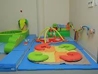

-

-
سلســلة الأدلــة التطبيقيــة للمنهــج الوطنــي ومعاييــر التعلم المبكر النمائية (٠-٦) سنوات
دليل معيار نهج
التعلم
-
-
-
الفهرس
شكر وتقدير
7
مقدمة إلى أدلة المنهج الوطني
8
القسم الأول:
مدخل إلى معيار نهج التعلم
12
القسم الثاني:
دليل المعلمة في التخطيط وتطبيق الممارسات التربوية الداعمة لمعيار نهج التعلم -دعم معيار نهج التعلم من الولادة وحتى 6 سنوات)
18
فئة الأطفال الرضًّع الصغار (من الميلاد إلى 9أشهر)
21
الممارسة الأولى: وعي المعلمات المهنيات بمبادئ النمو والتطور لدى الطفل، والطريقة التي يمكن من خلالها دعم تعلّمه
21
الممارسة الثانية: توظيف المعلمات المهنيات لمعارفهنّ حول تطور الطفل والبناء على هذه المعارف
26
الممارسة الثالثة: تطبيق المعلمات المهنيات لخبرات التعلم القائمة على الاستقصاء العلمي
32
الممارسة الرابعة: حرص المعلمات المهنيات على التطور المهني والتعلُم المستمر.
39
فئة الرضّع الدارجين (من 9إلى 18 شهرا)
41
الممارسة الأولى: وعي المعلمات المهنيات بمبادئ النمو والتطور لدى الطفل، والطريقة التي يمكن من خلالها دعم تعلّمه
41
الممارسة الثانية: توظيف المعلمات المهنيات لمعارفهنّ حول تطور الطفل والبناء على هذه المعارف
50
الممارسة الثالثة: تطبيق المعلمات المهنيات لخبرات التعلم القائمة على الاستقصاء العلمي
54
الممارسة الرابعة: حرص المعلمات المهنيات على التطور المهني والتعلُم المستمر.
61
-
فئة الأطفال الفطم (من 15-36 شهرا)
65
الممارسة الأولى: وعي المعلمات المهنيات لمبادئ النمو والتطور لدى الطفل، والطريقة التي يمكن من خلالها دعم تعلّمه
65
الممارسة الثانية: توظيف المعلمات المهنيات لمعارفهنّ حول تطور الطفل والبناء على هذه المعارف
71
الممارسة الثالثة: تطبيق المعلمات الممهنيات لخبرات التعلم القائمة على الاستقصاء العلمي
75
الممارسة الرابعة: حرص المعلمات المهنيات على التطور المهني والتعلُم المستمر
85
فئة أطفال الروضة (3-4) سنوات
86
الممارسة الأولى: وعي المعلمات المهنيات بمبادئ النمو والتطور لدى الطفل، والطريقة التي يمكن من خلالها دعم تعلّمه
86
الممارسة الثانية: توظيف المعلمات المهنيات لمعارفهنّ حول تطور الطفل والبناء على هذه المعارف
94
الممارسة الثالثة: تطبيق المعلمات الممهنيات لخبرات التعلم القائمة على الاستقصاء العلمي
98
الممارسة الرابعة: حرص المعلمات المهنيات على التطور المهني والتعلُم المستمر
109
فئة أطفال الروضة (4-6) سنوات
105
الممارسة الأولى: وعي المعلمات المهنيات بمبادئ النمو والتطور لدى الطفل، والطريقة التي يمكن من خلالها دعم تعلّمه
112
الممارسة الثانية: توظيف المعلمات المهنيات لمعارفهنّ حول تطور الطفل والبناء على هذه المعارف
119
الممارسة الثالثة: تطبيق المعلمات المهنيات لخبرات التعلم القائمة على الاستقصاء العلمي
124
الممارسة الرابعة: حرص المعلمات المهنيات على التطور المهني والتعلُم المستمر.
140
المراجع
142
-
تتقدم وزارة التعليم في المملكة العربية السعودية لشركة تطوير للخدمات التعليمية والجمعية الوطنية لتعليم الأطفال الصغار بالشكر الجزيل للمساهمة في تأليف هذا الدليل.
يسرنا أن نتقدم بوافر الشكر والعرفان، بالنيابة عن جميع الأطفال الصغار وأسرهم، إلى كل التربويات العاملات في مجال تعليم الطفولة المبكرة في المملكة العربية السعودية لجهودهم المباركة في إنجاح هذا العمل.
شكر وتقدير
شكر خاص
-
الحمد لله رب العالمين والصلاة والسلام على أشرف الأنبياء والمرسلين سيدنا محمد وعلى آله وصحبه أجمعين وبعد.
تماشياً مع رؤية المملكة العربية السعودية (2030) والتي ركزت على مرحلة الطفولة المبكرة، وحرصت على أن يحصل كل طفل سعودي على فرص التعليم الجيد وفق خيارات متنوعة، وانطلاقاً من الأهداف الاستراتيجية لوزارة التعليم المرتبطة بتطوير المناهج وأساليب التعليم والتقويم، و بالاستناد إلى وثيقتَي إطار المنهج الوطني ومعايير التعليم المبكر النمائية في المملكة العربية السعودية للأطفال من الميلاد وحتى سن السادسة قامت وزارة التعليم بالتعاون مع شركة تطوير للخدمات التعليمية وبيت الخبرة الجمعية الوطنية لتعليم الأطفال الصغار (NAEYC) ، على بناء أدلة تطبيقية للمنهج الوطني للمعلمات في الحضانات ورياض الأطفال.
تستند الأدلة التطبيقية للمنهج الوطني على نظريات التعلم الأساسي والمبادئ التوجيهية التي تقر بأن الأطفال قادرون على التعلم، ومتفردون ويتطورون بمعدلات مختلفة، وأن التعلم يحدث عندما يشارك الأطفال في اللعب النشط والهادف خصوصًا عندما يتم تشجيعهم على استكشاف بيئتهم بحرّية. ومن أهم هذه المبادئ التركيز على التعلم القائم على الاستقصاء العلمي الذي يعتمد على تطور لعب الأطفال واستكشافهم الذاتي وانتقال معلمات الأطفال من نهج "التدريس والتلقين المباشر" إلى نهج التدريس الذي يتمحور حول الطفل. ويتم ذلك في إطار مبادئ الإسلام وثقافة الأسرة والمجتمع حيث تركز الأدلة على شراكة الأسرة الفاعلة في عملية التعلم. وفيما يلي تسلسل الأدلة وموضوعاتها:
الأدلة التطبيقية للمنهج الوطني:
- الدليل الأساسي: بناء وحدات التعلم لتطبيق إطار منهج الطفولة المبكرةللأطفال.
- الدليل التطبيقي للبيئة المادية للحضانة والروضة.
- الدليل التطبيقي للأسرة.
- الدليل التطبيقي لمعيار نهج التعلم.
- الدليل التطبيقي لمعيار التطور الاجتماعي والعاطفي.
- الدليل التطبيقي لمعيار التطور اللغوي والمعرفة المبكرة للقراءة والكتابة.
- الدليل التطبيقي لمعيار العمليات المعرفية والمعلومات العامة.
- الدليل التطبيقي لمعياري الوطنية والدراسات الاجتماعية والتربية الإسلامية.
- الدليل التطبيقي لمعيار الصحة والتطور البدني.
- دليل المعلمة التطبيقي لطرق واستراتيجيات التدريس.
- الدليل التطبيقي لدور الإدارة في تطبيق المنهج الوطني.
- الدليل التطبيقي لتقويم طفل الحضانة والروضة.
مقدمة إلى أدلة المنهج الوطني
-
دليل المعلمة التطبيقي لنهج التعلم هو الدليل الثالث ضمن سلسلة أدلة المنهج الوطني لرياض الأطفال والحضانات الذي يُعنى بالتركيز على تزويد معلمات الأطفال (من الميلاد حتى 6 سنوات) بما يلي:
- المعلومات التي يحتاجون إليها لفهم مظاهر النمو الخاصة بالأطفال من مختلف الفئات العمرية (من الميلاد - سنوات 6).
- مجموعة من الأدوات اللازمة للتخطيط والتدريس، والمصادر اللازمة لبناء خبرات تعلّم رفيعة المستوى لجميع الأطفال.
ينقسم هذا الدليل إلى قسمين اثنين؛ حيث يقدم القسم الأول منه نظرة موجزة حول معيار نهج التعلم، فيتناول تعريفه وأهميته، ويقدم القسم الثاني مناقشة تمهيدية للاعتبارات الرئيسة الداعمة لنهج التعلم خلال السنوات الأولى من الميلاد حتى سن السادسة، ويتبع ذلك إرشادات شاملة لتطبيق الممارسات التدريسية وتخطيط المناهج للأطفال في خمس فئات عمرية مرتبة حسب التصنيف الآتي:
- فئة الرضع الصغار (الميلاد - 9 أشهر).
- فئة الرضع الدارجين (6 - 18 شهراً).
- فئة الفطم (15-36 شهراً).
- فئة أطفال مرحلة الروضة (3-4 سنوات).
- فئة أطفال مرحلة الروضة (4-6 سنوات).
من خلال الدليل سنستعرض أفضل الممارسات التربوية اللازمة للمعلمات فيما يختص بكل فئة عمرية من هذه الفئات، وهي على النحو الآتي:
الممارسة الأولى: وعي المعلمات المهنيات بمبادئ النمو والتطور لدى الطفل، والطريقة التي يمكن من خلالها دعم تعلّمه. يتناول هذا القسم مجموعة من النصائح والمصادر العلمية التي تعين على فهم عملية التعلم والمستويات النمائية بصورة أعمق، إضافة إلى تقديم إرشادات عامة للمعلمات لمعرفة كيفية دعم نهج التعلم عند كل فئة عمرية من الفئات الآنفة الذكر.
الممارسة الثانية: توظيف المعلمات المهنيات لمعارفهنّ حول تطور الطفل والبناء على هذه المعارف من أجل خلق فرص تعلّمية لكل طفل في المجموعة.
يقدم هذا القسم مجموعة نصائح ومصادر علمية تختص بعملية الملاحظة والتوثيق التي تجريها المعلمات على الأطفال بصورة فردية أو ضمن مجموعات. ونستعرض كذلك الممارسات التربوية الملائمة نمائيًّا، وما يجب فعله وعدم فعله في هذا الباب، إضافة إلى نصائح لإشراك الأسر في تعلم أطفالهم.
مقدمة دليل معيار نهج التعلم
-
الممارسة الثالثة: تطبيق المعلمات المهنيات لخبرات التعلم القائمة على الاستقصاء العلمي.
وهنا ستجد المعلمة مجموعة من المصادر والإرشادات والأدوات المصممة لتعميق المعرفة بالمحتوى، وإثراء التفاعلات اليومية مع الأطفال، إضافة إلى دليل مكون من عدة خطوات للإسهام في تخطيط المنهج الدراسي. فأما فيما يختص بتخطيط منهج أطفال مرحلة الروضة فسيتم بناء معايير التخطيط استنادًا إلى مواضيع الاستقصاء العلمي ودورة التخطيط القائمة على الاستقصاء المشار إليها في كتاب الدليل الأساسي. في حين ستعتمد المعلمة على المعايير الخاصة بمرحلة الحضانة (الرضع والفطم) كتطبيق مبسط لدورة التخطيط التي ستراعي الاحتياجات التعليمية الفردية لهؤلاء الأطفال والمهام النمائية المرتبطة بهم. وفي المجمل فإن هذه الخطوات ستشمل الاعتبارات المتعلقة بالبيئة المادية التعليمية (مراكز التعلم والمواد التعليمية)، والجدول اليومي (بما يحتويه من تفاعلات وأعمال رعاية اعتيادية ولعب الأطفال)، ودمج معايير التعلم المبكر النمائية (المواءمة بين هذه المعايير والدور الذي تقوم به المعلمة).
الممارسة الرابعة: حرص المعلمات المهنيات على التطور المهني والتعلم المستمر.
تم تصميم هذا القسم لتزويد المعلمات بالمصادر العلمية والمواد المقروءة التي ستمكنهنَّ من تعميق فهمهنَّ لمواضيع محددة، ويُختتم القسم بسلسلة من التوجيهات أو التنبيهات أطلقنا عليها اسم "لحظات التأمل"، وهي أسئلة للتأمل الذاتي السريع حول التجارب والخبرات والممارسات الشخصية.
استخدام الدليل:
أُعِدَّ الدليل ليكون مكملاً للمراجع الستة المهمة الآتية:
- (معايير التعلم المبكر النمائية في المملكة العربية السعودية للفئة العمرية من 3-6 سنوات، 2015).
- (معايير التعلم المبكر النمائية للفئة العمرية من الميلاد - 3 سنوات، 2018 ).
- (إطار المنهج الوطني للأطفال من الميلاد - 6 سنوات، 2018).
- (الدليل الأساسي: بناء وحدات التعلم لتطبيق إطار منهج الطفولة المبكرة للأطفال من الميلاد - 6 سنوات).
- (دليل المعلمة لتطبيق معايير التعلم المبكر النمائية من 3-6 سنوات).
- (دليل المعلمة لتطبيق معايير التعلم المبكر النمائية من الميلاد - 3 سنوات)
-
وستجدينَ أن هذا الدليل يشير إلى المراجع السابقة في كثير من المواطن. ولذلك ننصحك قبل استخدام هذا الدليل بالاطلاع على هذه المراجع وزيارة الروابط الإلكترونية حيثما وردت. يحتوي الدليل على عدد من الأيقونات للمساعدة على تصفح الدليل وإيجاد المعلومة والمصادر العلمية. كما تمت إضافة صور ومقاطع فيديو لتقديم المزيد من الدعم لفهم أوضح للمحتوى في حال تم تقديمه بصورة عملية.
وأخيرًا فقد تم إدراج مواقف افتراضية لمجموعة من المعلمات خلال هذا الدليل لتقديمأمثلة على ممارسات تدريسية معينة، وكيف يمكن للمعلمة التعامل معها، ومعالجتها، ووضع الخطط المناسبة لذلك. وسيتبع هذا الدليل خطوات مجموعة من المعلمات، بعضهن متخصصات بمرحلة الحضانة (الميلاد - 3 سنوات)، والبعض الآخر متخصصات بمرحلتي الروضة (3 - 6 سنوات). وستتمكنينَ أيتها المعلمة من متابعتهنَّ في مواطن رئيسة في الدليل، بما في ذلك الاطلاع على كيفية تطوير كل معلمة من هؤلاء المعلمات لخطط المنهج الدراسية حسب كل فئة عمرية. وكيف تمكنت كل معلمة من هؤلاء المعلمات إلى توظيف الموضوع الدراسي نفسه، وذلك لبيان كيف أنه بالإمكان استخدام هذه المواضيع الاستقصائية مع كافة المراحل والفئات العمرية للأطفال. وسنجد كذلك كيف أنه بالإمكان توسيع مراكز التعلم (أركان التعلم) والأنشطة وتعميقها تبعًا لأعمار الأطفال وقدراتهم، وتبعًا لتفضيلات المعلمات واختياراتهنَّ أيضًا.
يسرنا الآن أن نعرفك على هؤلاء المعلمات من مركز تعليم الطفولة المبكرة
مرحلة الحضانة:
المعلمة جنان: معلمة فصل الرضّع الصغار (الميلاد - 9 أشهر) .
المعلمة سمر: معلمة فصل الرضّع الدارجين (6 - 18 شهرًا).
المعلمة نورة: معلمة فصل الفطم (15 - 36 شهراً) .
مرحلتا الروضة:
المعلمة فاطمة: معلمة فصل الروضة (3 - 4 سنوات).
المعلمة إيمان: معلمة فصل الروضة (4 - 6 سنوات).
-
 يتناول معيار نهج
التعلم
كيفية تعلم الأطفال. الذي يصف بصفة خاصة الأدوات والمهارات التي تسهل عملية تعلم
الأطفال. ويتضمن ذلك السلوكيات والاتجاهات التي تدعم عملية التعلم في جميع الجوانب
النمائية والتعليمية، مثل: الاهتمام الفطري وحب الاستطلاع، والقدرة على الانتباه للمهام
التي يتم التكليف بها والمشاركة فيها والمثابرة على أدائها، والتفكير المنطقي وحل
المشكلات بطريقة فردية أو تعاونية"(معايير التعلم المبكر النمائية في المملكة العربية السعودية للفئة
العمرية من 3-6 سنوات، 2015، 17).
يتناول معيار نهج
التعلم
كيفية تعلم الأطفال. الذي يصف بصفة خاصة الأدوات والمهارات التي تسهل عملية تعلم
الأطفال. ويتضمن ذلك السلوكيات والاتجاهات التي تدعم عملية التعلم في جميع الجوانب
النمائية والتعليمية، مثل: الاهتمام الفطري وحب الاستطلاع، والقدرة على الانتباه للمهام
التي يتم التكليف بها والمشاركة فيها والمثابرة على أدائها، والتفكير المنطقي وحل
المشكلات بطريقة فردية أو تعاونية"(معايير التعلم المبكر النمائية في المملكة العربية السعودية للفئة
العمرية من 3-6 سنوات، 2015، 17).مواقفافتراضية
ترغــب معلمــات مرحلــة الحضانــة بالاســتمرار فــي التركيــز علــى تكويــن علاقــات مــع الأطفــال الرضــع وأســرهم، ومســاعدة هــؤلاء الأطفــال علــى تطويــر الشــعور بالــذات الازم لأن يصبحــوا متعلميــن واثقيــن بأنفســهم ومســتقلين بذواتهــم عندمــا يتلقــون الرعايـة ضمـن مجموعـات. وتعلـم هـؤلاء المعلمـات أن النُهـج التـي يتبعهـا الأطفـال فـي التعلـم جـزء مهـم مـن تطورهـم. ويعلمـنَ كذلـك أن هـذه النُهـج تتشـكل أول مـا تنشـأ مـن اهتمــام الأطفــال بالعالــم المحيــط بهــم والرغبــة فــي التســبب بحــدوث الأشــياء.
تخطط كل من المعلمة جنان (معلمة الرضع الصغار) والمعلمة سمر (معلمة الرضع الدارجين) بناء على معارفهن السابقة بالرضع، وكيف أنهن يطورن نهُجًا خاصة بالتعلم. وسيعملن على وضع خطط فردية يمكن استخدامها مع أطفال محددين، تقدم فرصًا تعليمية يمكن دمجها في أعمال الرعاية الاعتيادية، والتفاعلات المستمرة للأطفال، وبيئة اللعب.
مدخل إلى معيار نُهُج التعلم
القسم الأول
-
لاحظت المعلمة جنان أن العديد من الرضع الصغار (من الميلاد - 9 أشهر) قد أصبحوا مذهولين بقدرتهم على التسبب بحدوث الأشياء، وذلك من خلال إمساك ما تقع أيديهم عليه والتجريب والمحاولة مرارًا وتكرارًا حتى يحدث أمر معين. وهذا يدل على فضول الأطفال ونشوء حب الاستطلاع ومهارة حل المشكلات لديهم؛ ولذلك تخطط المعلمة لتوفير مواد تعليمية وتفاعلات من أجل البناء على هذه الاهتمامات المبكرة للأطفال.
أمـا المعلمـة سـمر فقـد لاحظـت أن الرضـع الدارجيـن )مـن 6 - 18 ً شـهرا( يعملـون علـى اختبـار مهاراتهـم الجديـدة مـن خـلال اقتحـام البيئـة المحيطـة بهـم بمفردهـم، والعمـل علــى حــل المشــكلات مــن خــلال الالتفــاف حــول مــا يعترضهــم مــن عقبــات؛ ســعيًا إلــى الوصـول إلـى لعبـة أو شـيء مـا. كمـا أنهـم يلجـؤون إلـى اسـتخدام الأدوات، ويظهـرون ًعزمًــا وإرادة لمعرفــة عمــل الأشــياء الجديــدة وكيفيــة عملهــا. وتقــوم خطتهــا علــى توظيـف هـذه المعلومـات؛ لتوفيـر الكثيـر مـن الفـرص التـي تتحـدى الأطفـال خـلال اليـوم، بهــدف تعميــق تجاربهــم فــي الاستكشــاف والمحاولــة والتجريــب.
المعلمــة نــورة، معلمــة فصــل الفطــم، فهــي تخطــط لتقديــم موضــوع اســتقصائي للأطفال يركــز علــى الحيوانــات وعائلاتهــا ومســاكنها. وعندمــا كانــت الوحــدة الدراســية المقـررة هـي وحـدة " أنـا وأسـرتي" كانـت أركان التعلـم تركـز علـى الأسـرة والمنـزل بشـكل كبيـر خـلال الأسـبوع الأول مـن السـنة الدراسـية. ويسـود لـدى المعلمـة نـورة اعتقـاد بـأن الفطــم ســيكونون مهتميــن أكثــر بقضيــة العنايــة بصغــار الحيوانــات وأســمائها، وكذلــك استكشــاف الأماكــن العديــدة التــي تعيــش فيهــا الحيوانــات؛ لذلــك تنــوي اســتخدام هـذا التركيـز علـى الحيوانـات وسـيلةً لمسـاعدة الفطـم علـى ممارسـة نُهُـج مهمـة مـن مهمـات نهـج التعلـم وأسـاليبه. وتريـد المعلمـة نـورة اسـتغلال مهـارات الفطـم اللغويـة والمعرفيــة الناشــئة لاكتشــاف مــا يعرفونــه، ولتخطيــط أنشــطة وتفاعــلات تعكــس مهاراتهــم واهتماماتهــم الفرديــة والجماعيــة.
أمـا معلمـات مرحلتـي الروضـة فإنهـن يعكفـن على وضع خطط دراسـية لإشـراك الأطفال فـي اسـتقصاءات علميـة عـن الحيوانـات. وتعلـم هـؤلاء المعلمـات أن الأطفال الصغـار ينتبهــون للحيوانــات، وينجذبــون لفكــرة الحديــث عنهــا؛ لذلــك أخــذن َ يفكــرنَ بالمواضيــع الدراسـية التـي لربمـا توفـر فرصًـا لدعـم معيـار نُهُـج التعلـم عنـد الأطفال. وعلـى الرغـم مـن اختـلاف كل مـن المنطقـة التعليمـي المسـتخدم، ودرجـة تعقيـد الأنشـطة، والمـواد التعليميــة فــي كل فصــل مــن الفصــول الدراســية؛ فــإن المعلمــات متيقنــات بــأن هــذا الموضـوع سـيثير فضـول الأطفال وحـب الاسـتطلاع لديهـم، وسـيؤدي إلـى العديـد مـن الاكتشــافات الجديــدة، ويفتــح البــاب أمــام معــارف لــم تكــن موجــودة مــن قبــل لــدى الأطفال.
-
ويتبنى هذا النهج الاستقصائي فكرة النهاية المفتوحة للعملية. وعندما يتم تقديم أنشطة أو خبرات تعليمية للأطفال الصغار فنحن لا نعلم ما الذي سيفعلونه بهذه الأنشطة والخبرات. وردودهم تعد تلميحًا وإشارة لما "يجب فعله لاحقًا"، وما السبب في أنه ستكون هناك اختلافات في عملية الاستقصاء العلمي لدى كل فئة عمرية وفصل دراسي.
وأمــا معلمــة فصــل الروضــة، المعلمــة فاطمــة، والمعلمــة إيمــان، معلمــة مرحلــة الروضـة، فكلتاهمـا تعكفـان علـى خطـة دراسـية تركـز علـى الحيوانـات التـي تعيـش فـي المزرعـة. وستسـتخدمان فـي خطتيهمـا كتبًـا وخبـرات تعليميـة أخـرى مـن أجـل مسـاعدة الأطفــال علــى التعلــم أكثــر عــن المــزارع وحيواناتهــا. وســتصغيان جيــدًا لمــا يطــرأ علــى اهتمامـات وأسـئلة الأطفــال، ثـم توفيـر الخبـرات التي تعكس هـذه الاهتمامات الخاصة.
ولقد ناقشت المعلمات الخمس هذه المواضيع الاستقصائية فيما بينهن، وكيف أن هذه المواضيع ستتغير أو يتم توسيعها على الأرجح كلما عرفن أكثر عن الأطفال أو تعلمن منهم من خلال إشراكهم في أنشطة مختلفة، وتعريضهم لأفكار جديدة، وملاحظة تفاعلاتهم وتحرياتهم العلمية. كما تدرك هؤلاء المعلمات أن كل دورات الاستقصاء العلمي الخاصة بالفئات العمرية للأطفال مرتبطة فيما بينها، ولكنها تصبح أكثر تعقيدًا ودقةً عند الأطفال الأكبر سنًّا.
السؤال: ما هو نُهُج التعلم؟
الجواب: تشير نُهُج التعلم إلى الطرائق التي يستجيب من خلالها الأطفال للخبرات والفرص التعليمية. فعلى عكس المجالات النمائية الأخرى التي تركز على المعرفة بالمحتوى العلمي، والمهارات النمائية، وتطوير المفاهيم العلمية، أي أن التركيز يكون على ما يتعلمه الأطفال؛ تركز نُهُج التعلم على الطرائق التي يسلكها الأطفال من أجل اكتساب المعارف الجديدة.
السؤال: لماذا يُعدّ معيار نُهُج التعلم معيارًا مهمًّا ؟
الجواب: تؤثــر النهــج الإيجابيــة للتعلــم فــي التطــور فــي مختلــف المجــالات الأخــرى، وتسـهم إسـهامًا مباشـرًا فـي النجـاح المدرسـي، وتـؤدي إلـى بنـاء ميـول واسـتعدادات تكــون محــل تقديــر مــن قبــل معلمــات مرحلــة الروضــة والمرحلــة الابتدائيــة. وإن دعــم المعلمــات لهــذا المعيــار يســاعد الأطفــال فــي اكتســاب المعــارف الجديــدة، وتطويــر المهــارات اللازمــة، وتحديــد الأهــداف وبلوغهــا بنجــاح.
-
-
السؤال: ما الاستراتيجيات التدريسية التي تدعم معيار نُهُج التعلم؟
الجواب: نستعرض فيما يأتي عشر استراتيجية تدريسية ملائمة نمائيًّا يمكن لها أن تدعم معيار نُهُج التعلم لدى الأطفال من مختلف الفئات العمرية ومراحل التطور
(NAEYC, “10 Effective DAP Teaching Strategies”, n.d.)
- "تقدير ما يقولهالأطفال وما يفعلونه . والتأكد من أن الأطفال يعلمون بأننا قد لاحظناهم من خلال إيلاء الانتباه الإيجابي لهم الذي قد يكون في شكل تعليقات نقولها لهم ،أو قد يكون من خلال الجلوس بجانبهم والمراقبة. (مثال: "شكرًا لك يا أحمد .لقد وجدت طريقة أخرى لتحديد الرقم (5)".
- تشجيع الأطفال على المثابرة وبذل الجهد بدلًا عن مجرد الثناء عليهم وتقييم ما فعلوه. (مثال: أنت تفكر بكثير من الكلمات لكي تصف الأرنب في القصة. هيا، لنتابع !".
- إعطاء ملاحظات محددة بدلًا عن التعليقات العامة. (مثال: "لم تدخل الكرة في السلة يا عادل. ماذا لو رميتها بقوة أكثر").
- نمذجة المواقف ،وأساليب التعامل مع المشكلات، والسلوكيات تجاه الآخرين، والتمثيل العملي للأطفال وليس مجرد إخبارهم ما الذي عليهم فعله. (مثال: "مممم !لم ينجح ذلك. يجب عليَّ أن أفكر في السبب ". "اعذرني يا سعد. لقد فاتني شيء مما قلت. هلا أعدت علي ما قلته"!).
- بيان وإظهار الطريقة الصحيحة لفعل شيء ما .وعادة ما يشمل ذلك وجود عملية ينبغي فعلها بأسلوب معين (مثل كيفية استخدام خافق البيض، أو طريقة كتابة حرف الجيم).
- إيجاد أو إضافة تحدٍّ إلى مهمة ما بحيث تزيد درجة صعوبته قليلًا عما يستطيع الأطفال فعله. فمثلًا: تضع المعلمة مجموعة من حبوب الذرة أو البطاطس على سطح نظيف وتعدها مع الأطفال، ثم تطلب من مجموعة صغيرة منهم أن يخبروها كم عدد الحبوب الباقية عندما تزيل بعضًا منها. فيقوم الأطفال بعدِّ الحبوب المتبقية من أجل معرفة الجواب:. ولإضافة نوع من التحدي إلى هذا النشاط، فقد تقوم المعلمة بإخفاء الحبوب الباقية بعد أن تزيل عددًا منها. وهنا على الأطفال إيجاد طريقة أخرى لمعرفة العدد المتبقي سوى طريقة عدّها .ولتسهيل التحدي قد تطلب المعلمة من الأطفال لمس كل حبة لمرة واحدة في أثناء قيامهم بعدِّ الحبوب المتبقية.
- طرح أسئلة تثير تفكير الأطفال وتحفزه. (مثال: "كيف يمكنك إخبار صديقك الذي يلعب معك بما يفعل دون كلام؟ ").
-
- تقديم العون (مثل : تقديم تلميح أو إشارة ) لمساعدة الأطفال على العمل وفقًا لقدراتهم (مثال : "هل يمكنك التفكير بكلمة على وزن اسمك يا هادي؟ ما رأيك بكلمة "رامي"؟ هادي ورامي لهما الوزن نفسه،أليس كذلك؟ هل يمكنك التفكير بكلمة أخرى على الوزن نفسه؟").
- تقديم المعلومات والحقائق والأسماء للأطفال بعبارات لفظية مباشرة . (مثال"هذا الحيوان الذي يشبه القط ولكنه أكبر حجمًا ولونه أسود يسمى الفهد").
- توجيه سلوك الأطفال وتصرفاتهم . (مثال: "المسوا كل مكعب من المكعبات مرة واحدة فقط وأنتم تعدونها ". "عليك أن تحرك تلك الأيقونة إلى هنا ، ألا تظن ذلك؟ حسنًا ، اضغط عليها الآن واستمر بالضغط، ثم اسحبها إلى المكان الذي تريد وضعها فيه ").
-
مقدمة
دعم معيار نهج التعلم من الولادة وحتى ٦ سنوات
 يُعد حماس الأطفــــــــــــال للتعلـــــم
وانخراطهــــم فـيــــه مــن المـبـــــــادئ الأســــــــاسيــة للنجـــاح
المــدرســــــي. وقــــــــد تلعــــب بيئات برامج الطفـولة المبكرة دورًا مهمًّا فـي دعم
ذلك المعيـــــار أو هدمـــــــــه. وقد لوحظ أن العوامل البيئية المختلفة التي تزيد من تلك
الدافعية تجاه التعلم والانخراط فيه موجودة في الأصل في اللعب ذي الجودة العالية ومتضمنة
فيه " (Hyson, n.d.)
يُعد حماس الأطفــــــــــــال للتعلـــــم
وانخراطهــــم فـيــــه مــن المـبـــــــادئ الأســــــــاسيــة للنجـــاح
المــدرســــــي. وقــــــــد تلعــــب بيئات برامج الطفـولة المبكرة دورًا مهمًّا فـي دعم
ذلك المعيـــــار أو هدمـــــــــه. وقد لوحظ أن العوامل البيئية المختلفة التي تزيد من تلك
الدافعية تجاه التعلم والانخراط فيه موجودة في الأصل في اللعب ذي الجودة العالية ومتضمنة
فيه " (Hyson, n.d.)دليل المعلمة في التخطيط وتطبيق
الممارسات التربوية الداعمة لمعيار نُهج التعلم
القسم الثاني
-
الطبع هو مزيج من الميول التي تشكل بمجموعها الطريقة الطبيعية التي يتفاعل بها شخص ما مع الناس والأشياء والأحداث. وله ارتباط بالعديد من الأمور المهمة في الحياة فيما بعد، كالعلاقات والتحصيل الدراسي والصحة (Shiner et al., 2012) وتتكون معظم الميول الطبيعية في فترة مبكرة من الحياة، وتؤثر في الطريقة التي يرى الأطفال من خلالها العالم ويتفاعلون معه، ولهذه الميول محددات مثل: العوامل الوراثية والبيولوجية والبيئية (Shiner et al., 2012)، ويتم التعبير عنها بمستويات تختلف من حيث القوة .(WestEd, 2019) والمدة
- "مستوى النشاط يعبِّر مستوى النشاط عن شدة الحركة وسرعتها والتعبير الصوتي عند شخص ما"(Strelau & Zawadzki, 2012).
- " التصرف تجاه غير المتوقع ما يتعرض له الشخص من قلق وحذر عند مقابلة أناس غرباء، أو مواجهة أشياء والتعرض لمواقف غير مألوفة"(Kagan, 2012).
- " الانتباه والضبط وهي قدرة المرء على تنظيم وضبط عواطفه وسلوكياته طوعًا، والقدرة كذلك على توجيه الانتباه والمحافظة عليه وتغييره طوعًا"(Rueda, 2012).
- "الغضب وحدة الطبع والإحباط مستوى الحساسية تجاه البيئة الاجتماعية والمادية الذي يتجلى في صور كالغضب أو الانفعال أو الإحباط"
(Deater-Deckard & Wang, 2012).
- " البهجة والحماس : مستوى الاستمتاع المصاحب للأنشطة التعليمية وما يجده الفرد من متعة الوصول إلى الأهداف"(Putnam, 2012).
-
دعم معيار نُهُج التعلم عند أطفال الحضانة:
ملاحظة مهمة:يجب مراعاة المبادئ التوجيهية الآتية عند العمل على تطوير منهج دراسي مخصص للرضع والفطم يراعي جميع مجالات التعلُّم:
- "الأسرة هي محور التعلُّم والتطور بالنسبة للطفل.
- يعتمد التعلُّم والتطور لدى الرضع والفطم على العلاقات الإنسانية.
- العواطف هي المحرك والدافع للتعلم والتطور المبكرين.
- إن الاستجابة للاستكشاف الذاتي للأطفال يعزز التعلم.
- التعليم والرعاية المصممان حسب احتياجات كل طفل يفيدان جميع الأطفال.
- الاستجابة للثقافة واللغة تدعم تعلم الأطفال.
- التعليم والرعاية المقصودان يثريان الخبرات التعلُّمية للأطفال.
- الوقت الذي يتم تخصيصه للتأمل والتخطيط يعزز التعليم والرعاية”.
("California Infant/Toddler Curriculum Framework", 2012)
كما يجب مراعاة أن منهج الرضّع والفطم يعتمد على:
- بيئة اللعب التي تقومين بتنظيمها وإعدادها.
- التفاعلات والمحادثات التي تجرينها مع الأطفال.
- الخبرات التعليمية التي توفرينها للأطفال خلال أوقات الرعاية الاعتيادية (تغيير الحفاضات، الإطعام، تغيير الملابس).
-
تطبيق معيار نهج التعلم عند الأطفال الرضًّع الصغار (من الميلاد إلى 9 أشهرٍ)
 معلمات الرضع الصغار
يعلمن أن الأطفال يبدؤون بالتعلم عن العالم الجديد الذي قدموا إليه منذ
لحظة ولادتهم. فنراهم يستخدمون جميع حواسهم لاستكشاف الأشياء من حولهم ومعرفة كيف
يتصرفون تجاهها”.(NAEYC, The What, Why, & How of High-Quality Programs for
Infants, p.3)
معلمات الرضع الصغار
يعلمن أن الأطفال يبدؤون بالتعلم عن العالم الجديد الذي قدموا إليه منذ
لحظة ولادتهم. فنراهم يستخدمون جميع حواسهم لاستكشاف الأشياء من حولهم ومعرفة كيف
يتصرفون تجاهها”.(NAEYC, The What, Why, & How of High-Quality Programs for
Infants, p.3)السؤال: ما الذي تفعله المعلمات المهنيات لتوظيف معيار نهج التعلم ضمنالمنهج الدراسي الخاص بفئة الرضع الصغار (من الميلاد إلى 9 أشهرٍ)؟
الجواب:يمكن للمعلمات المهنيات اتباع أربع ممارسات مثلى، وهي:
الممارسة الأولى
وعي المعلمات المهنيات بمبادئ النمو والتطور لدىالطفل، والطريقة التييمكن من خلالها دعم تعلّمه.
 إن المعلمات المهنيات يفهمن طبيعة الأطفال الرضًّع الصغار والأشياء التي يتعلمونها.
إن المعلمات المهنيات يفهمن طبيعة الأطفال الرضًّع الصغار والأشياء التي يتعلمونها.
-
السؤال: ما المؤشرات الرئيسة النمائية المتوقعة التي يظهرها الرضع الصغار والمرتبطة بمعيار نهُج التعلُّم؟
الجواب:من الميلاد حتى تسعة أشهر: يُلاحظ أن الأطفال في هذه المرحلة:
- يستخدمون حواسهم لاستكشاف البيئة.
- يطورون اهتمامًا وتفضيلًا لألعاب أو أشياء معينة.
- يبدؤون بتركيز الانتباه على الصور والوجوه والأشياء المثيرة للاهتمام.
- يلجؤون إلى التواصل البصري للتواصل مع حاضناتهم.
- يبدؤون بالقيام بأعمال بسيطة للتسبب في حدوث الأشياء.
 تعزز المعلمات المهنيات نمو الأطفال نمائيًّا.
تعزز المعلمات المهنيات نمو الأطفال نمائيًّا.
(إطار المنهج الوطني للأطفال من الميلاد-6 سنوات، 2018، 38-40).السؤال: ما الذي أستطيع فعله بوصفي معلمة لمساعدة الرضع الصغار على إنجاز المهام المرتبطة بمعيار نُهُج التعلم؟
الجواب: تستطيعين القيام بما يلي
- تعلمي كيف تقرئين إيماءات الرضع وتلميحاتهم. فهذه الإشارات والتلميحات تساعدك على التعرف على اهتماماتهم والأشياء التي يفضلونها.
- كوني مرحة. العبي معهم فإن نهُج التعلم لدى الرضع تتطور من خلاله.
- وفري مجموعة من المواد تختلف في ألوانها وخاماتها وأصواتها وأشكالها. فهؤلاء الأطفال يتعلمون من خلال حواسهم؛ لأن التنويع في المواد سيثير فضولهم.
- صممي الجدول اليومي للرضع بحيث يكون ثابتًا، واحرصي على أن تكون أعمال الرعاية الاعتيادية ثابتة كذلك. فذلك يوفر لهم الإحساس بالأمان اللازم لاستكشاف عالمهم.
-
السؤال: ما الأشياء التي بوسعي فعلها لإيجاد بيئة تعليمية تدعم معيار نُهُج التعلم؟
الجواب:بوسعك القيام بما يلي:
- احرصي على أن تكون مساحات البيئة التعليمية جذابة ومريحة، وآمنة أي أن تكون خالية من الإزعاج الصوتي والمثيرات البصرية.
- احرصي على أن يكون كل ما يحيط بالرضيع من أشياء ينظر إليها، أو يستمع لها، أو يلمسها، أو يستكشفها قد تم توفيرها بصورة مقصودة لدعم المشاركة والتركيز.
- وفري مواد وأشياء تعكس ثقافة الطفل وأسرته.
- غيري المواد التعليمية من حين إلى آخر بما يتناسب مع التطور السريع للرضيع، وبما يراعي اهتماماته المتنامية.
- ضعي الأشياء حيث يستطيع الرضيع الوصول إليها بمفرده (أي ضعيها على أرفف منخفضة الارتفاع مع عرضها بوضوح ليختار منها).
- رتبي المواد والأشياء ضمن مجموعات تشجع على نوع معين من التعلم (مثلًا: الأشياء الخاصة بالأركان الهادئة ضمن مجموعة واحدة، والمواد الخاصة بأركان التعلم الصاخبة ضمن مجموعة أخرى… وما إلى ذلك).
إرشادات للمعلمة
 على الرغم من أن الجدران التي تحتوي على عدد قليل
من
الصور والأشياء المعلقة قد تبدو أقل جمالًا، لكنها في الحقيقة مريحة أكثر لعيون الرضع
الصغار من الجدران التي تمتلئ بالصور والألوان البراقة"
على الرغم من أن الجدران التي تحتوي على عدد قليل
من
الصور والأشياء المعلقة قد تبدو أقل جمالًا، لكنها في الحقيقة مريحة أكثر لعيون الرضع
الصغار من الجدران التي تمتلئ بالصور والألوان البراقة"(Luckenbill, Subramaniam & Thompson, 2019).
-
أدوات للمعلمة
يتطلب إعداد وتنظيم بيئة تعليمية تدعم عمليات التعلم والاستكشاف المتزايدة عند الرضع الكثير من التفكير والتأمل. وعلى المعلمة الموازنة بين متطلبات السلامة من جهة وبين عناصر التحدي واهتمامات الأطفال والمساحة المتاحة والمواد التعليمية المتوفرة من جهة أخرى والألوان البراقة"
(Luckenbill, Subramaniam & Thompson, 2019).
أدوات المعلمة
سلال الكنوز
عندما يصبح الرضع قادرين على الوصول إلى الأشياء والإمساك بها فإنهم يستمتعون بوجود مجموعة مختارة من الأشياء والمواد المثيرة للاهتمام في الجوار؛ لذلك تحرص المعلمة على وضع أشياء مختلفة في أنحاء الغرفة مثل: ملاعق الكيل، والخشخيشات، والكرات القماشية، والمكعبات الطرية، والكرات ذات الملامس المختلفة، ونحو ذلك من المواد. ثم ضعيها في سلة، وضعي السلة حيث يستطيع الرضع الوصول إليها. وسيستمتع الرضع بهذه السلال في أثناء الوقت الذي يوضعون فيه على بطونهم للاستكشاف والحركة. (نصيحة تتعلق بالسلامة تأكدي من أن جميع هذه الأشياء ذات حجم كبير بما يكفي حتى لا يبتلعها الأطفال، وتأكدي كذلك من خلوها من الحواف الحادة أو أي شيء قد يُلحق الضرر بالأطفال).
إرشادات للمعلمة
تدعم سلال الكنوز معيار نُهُج التعلم من خلال توفير الفرص التعليمية الآتية:
- التركيز والانتباه.
- الاستكشاف باستخدام عدة حواس.
- توفير عدة خيارات.
- التجريب وحل المشكلات.
-
إرشادات للمعلمة
ما الألعاب التي يحب أن يمارسها الرضع؟
في حالة الرضع الذين لا يستطيعون فتح قبضاتهم عند الإمساك بشيء ما، وفري لهم ألعابًا وعلقيها فوق سجادة أو دعيها تتدلى من السقف كي يتسنى للطفل اللعب بها ورفسها بقدمه، أو ضربها بيده، أو الإمساك بها وسحبها إليه (وهنا على المعلمات مراقبة الرضع عن كثب عندما يصبحون قادرين على السحب). فهذه الألعاب تساعد الرضع على تعرُّف الأشياء التي يبصرونها والأصوات التي يسمعونها من حيث الآتي:
- .بأنها تصدر الأصوات
- .ولها ملامس ممتعة
- .وتتبع أنماطًا سهلة وأخرى غير ذلك
وبمجرد أن يبدأ الرضع بالسيطرة على أيديهم قدمي لهم الأشياء الآتية:
- .خشخيشات بسيطة وخفيفة الوزن
- .ألعابًا بملامس مختلفة
- .كتبًا مصنوعة من القماش
ووفري أشياء للنظر إليها مثل:
- الكتب والصور التي تحوي رسومات جاذبة (بعض الرضع الصغار يفضل الصور ذات اللونين الأبيض والأسود التي تبدو كالوجوه).
- .الأعمال الفنية الدارجة بحيث يتم عرضها على الجدار
- .أشياء ومجسمات معلقة في الهواء
- .أحواض الأسماك
- .النباتات والزهور
وفري أشياء للتعامل بها بالأيدي لتجميعها: ابدئي بالأشياء التي تساعد الرضع في معرفة كيفية عمل الأشياء، وهذا مناسب في حالة الرضع الصغار، مثلًا: وفري لهم الأشياء الآتية:
- دمى حيوانات مصنوعة من القماش، حلقات ومكعبات، خشخيشات، ويجب أن تكون كل هذه الأشياء ذات ملامس وأحجام مختلفة:
- .دمى ومستلزمات مثل: القبعات والأكواب والملاعق
-
وما إن يبدأ الرضع باكتساب المهارات اللازمة وتزداد قدراتهم على الانتباه حتى يبدؤوا بالتحول من تفحص خصائص الأشياء باستخدام حواسهم إلى استعمالها؛ لذلك وفري أشياء كي يتمكن الرضع من القيام بالآتي:
- طرقها ببعض، والتعامل معها بالأيدي، وإلقائها من أيديهم (من هذه الأشياء الصناديق التي تستخدم في عمليات التصنيف إضافة إلى بعض الأشكال الهندسية، وعلب المناديل على أن تُملأ بمناديل قماشية أو أوشحة لسحبها، ومكعبات من مختلف الأحجام والأشكال).
.(Luckenbill, Subramaniam & Thompson, 2019)
الممارسة الثانية
توظيف المعلمات المهنيات لمعارفهنّ حول تطور الطفل والبناء على هذه المعارف من أجل خلق فرص تعلّمية لكل طفل في المجموعة.
 تلاحظ المعلمات المهنيات وتوثق تعلم وسلوكيات الأطفال.(إطار المنهج الوطني للأطفال من الميلاد-6 سنوات، 2018،
38-40).
تلاحظ المعلمات المهنيات وتوثق تعلم وسلوكيات الأطفال.(إطار المنهج الوطني للأطفال من الميلاد-6 سنوات، 2018،
38-40).أدوات المعلمة
استمارة ملاحظة طباع الأطفال في أثناء دعم نهج التعلم عند الأطفال.
"يُقصد بالطبع الخصائص والميول والسمات التي تميز أسلوب كل طفل وسلوكه، ويصف الأسلوب الشخصي للطفل في كيفية التعامل مع العالم من حوله. وقد حدد الباحثون خصائص وسمات مختلفة تبين معنى الطبع. إن فهم طباع الأطفال يساعد المعلمات في فهم سلوكياتهم ونهجهم في التعلم وتقبلها ودعمها.وتساعد أداة الملاحظة هذه في تحديد خمس مجموعات من الخصائص والصفات،
-
يتعين على المعلمة البحث عنها في أثناء تفاعلها مع الرضع والأطفال الأكبر سنًّا وهي:
1- مستوى النشاط يقصد بمستوى النشاط مدى قدرة الأطفال على الحركة وإصدار الأصوات وشدة كل منها وسرعتها. عليك الانتباه لما يلي:
- مستوى منخفض من النشاط: يميل الأطفال الذين يتمتعون بمستوى منخفض من النشاط إلى المراقبة أكثر وإصدار الأصوات ببطء.
- مستوى مرتفع من النشاط: يتحرك هذا النوع من الأطفال دائمًا ويصدرون أصواتًا ذات وتيرة سريعة.
2- التصرف تجاه غير المتوقع أي طريقة تصرف الطفل تجاه المواقف غير المألوفة له، والأنشطة والناس والأشياء الغريبة عليه، وهل يتملكه الضيق أو الخوف عند حدوث ذلك. عليك الانتباه لما يلي:
- فالأطفال الذين تكون ردة الفعل عندهم خفيفة تجاه ما هو غير متوقع يتقبلون المواقف والناس الجديدة عليهم.
- أما الأطفال الذين تكون ردة الفعل عندهم شديدة تجاه ما هو غير متوقع فهؤلاء يتملكهم الخوف والضيق (فتراهم يلتصقون بالحاضنة أو يبدؤون بالمراقبة بحذر من بعيد).
3- الانتباه والضبط أي قدرة الطفل على تنظيم وضبط عواطفه وسلوكياته، وتركيز انتباهه طوعًا والمحافظة عليه أو تحويل انتباهه إلى شيء آخر. عليك الانتباه لما يلي:
- ينتقل الأطفال الذين يتمتعون بمستويات منخفضة من القدرة على الانتباه والضبط من مهمة إلى أخرى بسرعة، وقد لا يكونون قادرين على ضبط سلوكياتهم وعواطفهم.
- بينما يستطيع الأطفال الذي يتمتعون بمستويات مرتفعة من الانتباه والضبط التركيز لفترات طويلة على مهمة ما (بالنسبة لأعمارهم)، ويتحكمون بسلوكياتهم وعواطفهم بسهولة أكبر.
ملاحظة: يتشكل الضبط لدى الأطفال ويتطور بمرور الوقت وبدعم من الحاضنات.
-
4- الغضب وحدة الطبع والإحباط ونعني بذلك ميل الطفل ونزعته للتعبير عن مثل هذه المشاعر والعواطف. والتعبير عن هذه المشاعر بشدة ولمدة طويلة قد يشكل تحديًا للحاضنات. عليك الانتباه لما يلي:
- الشدة: أي قوة ردة الفعل.
- العتبة: أي مستوى التحفيز والإثارة الذي تبدأ معه ردة الفعل.
- المدة: الوقت الذي تستغرقه ردة الفعل عادة.
5- الهمة والحماسة والابتهاج ونعني بذلك ميل الطفل نحو تجريب هذه المشاعر ونزعته للتعبير عنها. وعلى الرغم من أن هذه الخصائص والسمات قد تبدو جذابة لكل من الكبار والصغار، فإن المبالغة فيها قد تؤدي في بعض الأحيان إلى إرباك الأطفال ويحد من قدرتهم على ضبط الذات. عليك الانتباه لما يلي:
- الشدة: أي قوة العاطفة وشدتها.
- العتبة: أي مستوى التحفيز والإثارة الذي تبدأ معه العاطفة بالظهور.
- المدة: المدة التي تستغرقها العاطفة.
اطرحي على نفسك الأسئلة الآتية في أثناء ملاحظتك للأطفال:
1.الشدة: ما مدى قوة التعبير العاطفي لدى الرضيع؟
2.العتبة: ما الذي يؤدي بالرضيع لبلوغ تلك الحالة؟
3.المدة: كم من الوقت يظل فيه الرضيع في تلك الحالة"
(Temperament: J. Ronald Lally, Peter Mangione, Elita Amini(Lally et al. 2018)
تقوم المعلمات المهنيات ببناء العلاقات مع المجتمع ومع أسر الأطفال. (إطار المنهج الوطني للأطفال من الميلاد-6 سنوات - استمارة المقابلة لجمع التغذية الراجعة والمصادر من الأسرة ، 2018، 38-40).
-
إرشادات للمعلمة
مفهوم (الإرسال والرد) هو مفهوم مهمٌّ، ويجب على المعلمات تثقيف الأسر والأهالي حوله. وفيما يأتي دليل موجز لمشاركته مع أسر وأهالي الأطفال عن هذا المفهوم:
تتشكل الروابط العصبية التي تسهم في دعم عملية تطور مهارات التواصل مع الآخرين والمهارات الاجتماعية في دماغ الطفل وتتقوى عندما يستجيب الكبار لبكاء الصغار أو إيماءاتهم أو مناغاتهم بالطريقة المناسبة، سواء أكان ذلك من خلال التواصل البصري معهم أم باحتضانهم أم التحدث إليهم. وذلك أشبه ما يكون بألعاب التنس والكرة الطائرة وكرة الطاولة؛ حيث يتم تبادل الكرة جيئة وذهابًا بين اللاعبين. وعلاوة على كون اللعبة مسلية فهي تبني قدرات اللاعبين وتطورها كذلك. وهذا بالضبط ما يحدث عندما تراعي الحاضنات إشارات الطفل الصغير واحتياجاته ويستجبن لها. فإنهن بذلك يوفرن بيئة غنية بخبرات الإرسال والرد التي يحتاجها الأطفال.
.(“5 Steps for Brain-Building Serve & Return,” Harvard University, n.d)
-
أدوات المعلمة

-
 توظيف المعلمات المهنيات للممارسات الملائمة نمائيًّا.
(إطار
المنهج الوطني للأطفال من الميلاد-6 سنوات، 2018،
38-40).
توظيف المعلمات المهنيات للممارسات الملائمة نمائيًّا.
(إطار
المنهج الوطني للأطفال من الميلاد-6 سنوات، 2018،
38-40).أدوات المعلمة
الممارسات الملائمة نمائيا لدعم نهج التعلم
ممارسات تربوية ملائمة نمائيًا
ممارسات تربوية غير ملائمة نمائيًا
تــدرك الحاضنــات قيمــة الاستكشــاف واللعــب وأهميتـه للرضـع. ويلاحظـن كل طفـل ومـا يقـوم بـه أو يركـز عليـه، ثـم يعلقـن علـى مـا يفعلـه الطفـل، ويوفـرن مســاحة آمنــة لــه. وهــذا بــدوره يشــجع الانخــراط والمشــاركة النشــطة للأطفــال.
تلعــب الحاضنــات ألعابًـا مناســبة )مثــل: لعبــة تغطيــة الوجــه بالكفيــن وإظهــاره فجــأة( مــع الرضــع الذيــن يبــدون اهتمامًـا بذلــك، ويحــذرن ألا يفرضــن علــى الأطفــال طريقــة لعــب معينــة، أو يقاطعــن تركيزهــم.
تـدرك الحاضنـات أن الرضـع الصغـار جدًّا يحبون أن يلعبوا بأجســامهم فــي البدايــة؛ حيــث يقومــون باستكشــاف مـا تسـتطيع عضلاتهـم الرئيسـة القيـام بـه، ويعملـون علــى تغييــر وضعياتهــم، وتجربــة حواســهم، وأخيــرًا اكتشــاف أيديهــم وأقدامهــم.
تعمــل الحاضنــات علــى توفيــر أشــياء آمنــة للعــب بهــا مصنوعــة مــن مــواد مخصصــة وذات حجــم مناســب ليمسـك بهـا الرضيـع، أو يضعهـا فـي فمـه، أو يتلاعـب بهـا بيديـه، مثـل: الكـرات ذات المقابـض، والعضاضـات، والدمــى اللينــة القابلــة للغســل والتنظيــف، ودمــى الحيوانــات.
تتـم مقاطعـة الأطفــال الرضـع، وإذا مـا تدلـت الألعـاب مــن أيديهــم توضــع مــرة أخــرى فــي أيديهــم أو تؤخــذ منهــم. فالحاضنــات يفرضــن أفكارهــن علــى الأطفــال فــي أثنــاء لعبهــم دون مراعــاة لاهتماماتهــم، أو لربمــا يلعبــن بأنفســهنّ بالألعــاب بينمــا يراقــب الأطفــال.
نــادرًا مــا تلعــب الحاضنــات مــع الأطفــال الرضــع. أو تكـون الألعـاب والأنشـطة مفروضـة علـى الرضـع بغـض النظــر عــن احتياجاتهــم.
تقيـد الحاضنـات حركـة الرضـع )كوضعهـم فـي المقاعـد المخصصــة لهــم، أو تقميطهــم أو وضعهــم فــي كراســي هــزازة وأراجيــح(، أو إبقائهــم فــي أســرتهم لتقييــد حركتهــم ومنعهــم مــن الاستكشــاف.
تعطــي الحاضنــات ألعابــا ذات حجــم كبيــر يتعــذر علــى الطفــل الإمســاك بهــا أو اللعــب بهــا، أو ربمــا تعطيــه ألعابًا صغيــرة جــدًّا تســبب الاختنــاق أو يمكــن بلعهــا. وربمـا يعلقـن الألعـاب فـوق الرضـع الذيـن لـم يقـدروا علـى الحركـة بعـد، فلا يسـتطيع الطفـل الوصـول إليها، وإنمــا ينظــر إليهــا معظــم الوقــت. وربمــا يســتطيع الوصـول إليهـا لكـن لا يمكنـه الإمسـاك بهـا، ووضعهـا فــي فمــه واستكشــافها، وإنمــا يضربهــا فقــط.
(Copple and Bredekamp, 2008)
-
يمكنك الاستفادة من ورقة عمل رقم (1) الخاصة بمعيار نهج التعلم في: دليل المعلمة لتطبيق المعايير النمائية (من الميلاد حتى 3 سنوات).
الممارسة الثالثة
تطبيق المعلمات المهنيات لخبرات التعلم القائمة على الاستقصاء العلمي.
تستغل المعلمات المهنيات معرفتهن بمحتوى مادة الدرس لبناء منهج ذي معنًى وتوفير فرص تعلم هادفة للأطفال. (إطار المنهج الوطني للأطفال من الميلاد-6 سنوات، 2018، 38-40).
إرشادات للمعلمة


الضبط الذاتي: أي القدرة على إدارة الانفعالات القوية، والمحافظة على الانتباه. ويؤدي الضبط الذاتي دورًا مهمًّا في قدرة الأطفال على توظيف نُهج التعلم المختلفة بفاعلية.
(Head Start, Early Childhood Learning & Knowledge Center, n.d)
أدوات المعلمة


لدعم الانتباه هناك العديد من الطرائق والأساليب التي تستطيع المعلمات من خلالها مساعدة الرضع والفطم على زيادة فترة الانتباه لديهم. وفيما يأتي بعض الاستراتيجيات لتحقيق ذلك:
- إعطاء الرضع لعبة أو لعبتين في كل مرة للعب بهما. وبمجرد أن نلاحظ أنهم بدؤوا يفقدون الاهتمام بها نبدل الألعاب أو الأشياء التي وفرناها لهم بشيء مختلف.
- توفير المساحة المكانية والوقت والألعاب والمواد المناسبة لأعمارهم للنظر إليها واستكشافها (مثل: الألعاب الطرية التي تصدر أصواتًا مختلفة، أشياء يمكن تعليقها في الهواء ليضربها الأطفال أو يمسكوها، صور لوجوه أو أشكال بسيطة). وعلينا أن نسمح للأطفال باستخدام الألعاب والمواد بطريقتهم الخاصة، وأن يكرروا الأنشطة والأفعال.
- تغيير الألعاب والمواد والتبديل بينها بانتظام للحفاظ على اهتمامات الأطفال والبناء عليها، والحرص على تنوع هذه الألعاب والمواد فنوفر لهم أشياء مألوفة وأخرى جديدة.
-
- استغلال البيئة الخارجية وما تحويه من أشياء كأجراس الرياح (الأجراس التي تصدر أصواتًا عندما تحركها الرياح) ووسائل تحديد اتجاه الرياح أو الأعلام التي ترفرف في الهواء، وغير ذلك مما يمكن استخدامه بوصفها وسائل لتطوير مهارات الانتباه لدى الأطفال في الخارج.
- مراقبة الأطفال وملاحظتهم طوال اليوم: أي أن تلاحظ المعلمة الألعاب والخبرات والناس والتفاعلات التي تسهم في الاستحواذ على اهتمام الأطفال وتزيد منه وتطيل من أمده. وأن تصف ما يرونه ويسمعونه ويقومون به.
- مناداة الأطفال بأسمائهم للفت انتباههم: قولي مثلًا: " انظري يا نوف" عندما تبدئين بالحديث عن شيءٍ ما.
- تحويل أعمال الرعاية الاعتيادية وغيرها من الأنشطة المتكررة إلى تجارب مريحة وممتعة للأطفال (كالجلوس في كرسي هزاز ووضع الطفل في حضنك والقراءة له، أو إجلاس الطفل على ركبتيك ثم هزهما بإيقاع معين على أنغام أنشودة).
- تصفح الكتب، حتى وإن كانوا صغارًا لا يعرفون القراءة بعد. وعلينا أن نحرص على أن تحتوي هذه الكتب على صور ونصوص وأناشيد أصيلة تعكس ثقافات أسر الأطفال ولغاتهم.
(Head Start, Early Childhood Learning & Knowledge Center, “News You Can Use: Approaches Toward Learning Part 2”, n.d.)
من الممارسات المهمة التي تقوم بها المعلمات العمل على تعميق محتويات الخطط التعليمية في المنهج، وذلك بالانتباه لفرص دعم معيار نُهُج التعلم خلال اليوم الدراسي. (الدليل الأساسي: بناء وحدات التعلم لتطبيق إطار منهج الطفولة المبكرة للأطفال من الميلاد وحتى عمر 6 سنوات، 2018، 68-71).
تعميق الخطط: إن المعلمات المهنيات يعملن على تعميق مهارات التخطيط والتنفيذ من خلال الآتي:
-
موقف افتراضي
لاحظت المعلمة جنان أن العديد من الأطفال الرضع الصغار في فصلها أصبح لديهم شغف بجعل الأشياء تحدث؛ وذلك من خلال الوصول إلى الأشياء والإمساك بها وتجربتها مرارًا وتكرارًا. وتدرك المعلمة جنان أن هذا يعد مؤشرًا على النمو المبكر للفضول وحل المشكلات عند الرضع الصغار، وعليه فقد خططت لتقديم المواد والتفاعلات التي تعزز هذه الاهتمامات. كذلك لاحظت المعلمة جنان أن عددًا من الأطفال الرضع الصغار في فصلها يبدون اهتمامًا باستكشاف الأشياء من خلال حواسهم؛ لذا قررت زيادة فرص التعلم الحسي في غرفة الصف بوصفه طريقة لدعم نمو النُهُج المهمة لمهارات التعلم.
فقررت اتباع الخطوات الآتية لتخطيط وتقديم خبرات تعلمية تسهم في تطوير مهارات حب الاستطلاع وحل المشكلات عند الأطفال.
الخطوة الأولى أن تبدأ عملية التخطيط بإجراء عمليات ملاحظة للأطفال في المجموعة؛ لمعرفة ما يستطيعون القيام به حاليًّا، ثم ستقوم بعد ذلك بتوثيق ملاحظاتها لكل طفل من الأطفال؛ لأن ذلك سيساعدها في تحديد أنماط الاهتمام والقدرات بين أفراد المجموعة الواحدة. (ستستخدم المعلمة أداة الملاحظة المشار إليها في كتاب دليل المعلمة التطبيقي للأطفال من الميلاد - 3 سنوات، ص:17-18).
الخطوة الثانية بعد ذلك، ستفكر المعلمة جنان بناءً على ملاحظاتها في كيفية استخدام بيئة غرفة الصف التعليمية لتقديم المواد التي يمكنها دعم نهج التعلم في البيئة.
البيئة التعليمية
>
-
- منطقة الوصول
- صور لكل طفل مع أسرته.
- منطقة القيلولة / منطقة النوم
- أشياء متحركة معلقة فوق السرير.
- منطقة تغيير الحفاضات:
- مرايا في أماكن مختلفة بحيث يستطيع الأطفال رؤية أنفسهم.
- يتم تقديم أشياء ناعمة أو خشخيشات مألوفة للأطفال الرضع؛ ليمسكونها بأيديهم.
- منطقة اللعب
- ضعي مرآة على ارتفاع بحيث يمكن للأطفال الرضع رؤية انعكاس صورهم عليها.
- بالنسبة للرضع الذين يستطيعون الجلوس، قدمي لهم سلالًا تحتوي عدد من المواد المختلفة الملمس (مثل: الكرات الناعمة والحلقات البلاستيكية والخشخيشات … وما إلى ذلك).
- وفري مساحة مفتوحة للأطفال الرضع؛ بحيث يمكن وضعهم على سجادة أو بطانية بشكل يمكنهم تحريك أيديهم وأرجلهم بطلاقة.
- كتب مصنوعة من القماش وتحتوي صورًا بسيطة.
- مواد معلقة يمكن للأطفال ضربها وركلها بأيديهم وأرجلهم دون أن تسبب لهم الأذى.
- صناديق الفرز.
- المكعبات اللينة.
- كتب ذات ملمس قماشي.
- منطقة الهواء الطلق
- مناطق مظللة يمكن للرضع النظر إليها والاستماع للآخرين.
- ضعي سلال الأشياء في الخارج للأطفال ليقوموا باستكشافها.
-
الخطوة الثالثة بعد دراسة المواد التي يمكن تضمينها في الصف، فكرت المعلمة جنان في الجدول اليومي والأعمال الروتينية وكيف يمكنها توفير فرص تدعم نهُج التعلم على مدار اليوم.
أدوات المعلمة
عند قيامك بالتخطيط وبناء الجدول أو الروتين اليومي تذكري دوماً أن أساس التعلم في هذه المرحلة يرتكز على بناء العلاقات الآمنة ومتابعة الخطوات الطبيعية التي يقوم بها الرضيع للاكتشاف والتعلم.
الروتين اليومي
الروتين
التجربة/النشاط
الوصول والمغادرة
- رحبي بكل طفل رضيع باسمه .
- زودي الأطفال بسلال تحتوي دمًى حسية آمنة؛ لاستكشافها ريثما يصل الأطفال الآخرون.
وقت اللعب / وقت الاستلقاء .
- لازمي الأطفالالرضع في أثناء قيامهم بالاستكشاف بأنفسهم .
- أشركي الأطفال الرضع في اللعب المتكرر ،مثل :قيام الطفل بإلقاء شيء على الأرض وانتظار المعلمة لتلتقطه .
- اقرئي الكتب التي تحتوي الصور التوضيحية حول الأشياء البسيطة .
منطقة تغيير الحفاضات.
- اعرضي للأطفال صور الأشياء البسيطة على مستوى نظرهم .
- زودي الأطفال الرضع بالخشخيشات أو الأشياء الناعمة التي يسهل الإمساك بها في أثناء تغيير الحفاضات .
الإرضاع / الإطعام .
- راقبي أيَّ مؤشرات جديدة تدل على إبداء الإعجاب أو عدمه .
- اجلسي مع الأطفال أو احمليهم وتحدثي معهم في أثناء إرضاعهم .
القيلولة.
- رحبي بالأطفال عندما يستيقظون من النوم واحمليهم وتجولي بهم في الفصل، وأنت ِتنظرين إلى اللوحات والأشياء الموجودة في الفصل.
طوال اليوم.
- وفري للأطفال الرضع الفرص :
- لرؤية بعضهم ورؤية الأشخاص الكبار.
- لاستخدام حواسهم في الاستكشاف .
- لتجربة المواد لاكتشاف ماذا سيحدث.
-
الخطوة الرابعـة ثـم سـتقوم المعلمـة بمراجعـة تطبيـق معاييـر التعلـم المبكـر النمائيـة للفئــة العمريــة مــن الميــاد وحتــى ثلاث ســنوات فــي المملكــة العربيــة الســعودية وســتفكر بطــرق يمكــن اســتخدامها لتنفيــذ تلــك المعاييــر فــي الحيــاة اليوميــة
تطبيق المعايير النمائية معيار نهج التعلم
1.0 حب الاستطلاع والإبداع والمبادرة
المؤشر
دورالمعلمة
- توجيه الاهتمام للأشخاص المألوفين .
- التحدث مع الرضع طوال اليوم .
- يبدي اهتمامًا بنفسه (يراقب يديه ،ويلعب بقدميه ).
- وفري مساحة مفتوحة للأطفال الرضع بحيث يمكن وضعهم على حصيرة أو بطانية بشكلٍ يمكِّنهم من تحريك أيديهم وأرجلهم بطلاقة.
- يستخدم حواسه (بعض الحواس أكثر من بعضها الآخر ) لاستطلاع واستكشاف الأشياء .
- وفري للأطفال الرضع مجموعة من الأشياء آمنة الاستخدام ليقوموا باستكشافها بأيديهم وأفواههم (ويجب تعقيمها بعد كل استخدام ).
- يبدي اهتمامًا بالأشياء .
- وفري للأطفال مجموعة من الأشياء الشيقة في سلة ليقوموا باستكشافها مثل : الكرات والمكعبات والحلقات والخشخيشات .
- يبدي حبًا أو كرهًا لبعض الأنشطة والتجارب .
- راقبي الأطفال بعناية وانتبهي لإشاراتهم حول حبهم أو مقتهم للأشياء .
2.0 الانتباه والمشاركة والمثابرة:
المُؤشر
دورالمعلمة
- يستجيب بطرق متنوعة لأشياء مختلفة في البيئة .
- وفـري للأطفـال الرضـع مـواد يمكـن اسـتخدامها بطـرق مختلفـة مـن خـلال هزهـا وإمسـاكها وضربهـا... وهكـذا.
- يركز على الأشياء التي تثير اهتمامه لمدة وجيزة ).
- وفــري للأطفــال لعبًـا وأدوات جديــدة غيــر مألوفــة لديهــم.
- يواظــب علــى المحاولــة عــدة مــرات؛ ليتســبب فــي حــدوث شــيء مــا.
- أشــركي الأطفــال الرضــع فــي اللعــب المتكــرر، مثــل: قيـام الطفـل بإلقـاء شـيء علـى الأرض وانتظـار المعلمـة لتلتقطــه .
- يومــئ أو ينظــر للفــت الانتبــاه إليــه أو يركــز انتباهــه علــى نفســه وعلــى الكبــار.
- اسـتجيبي لإشـارات الأطفـال الرضـع، مثـل: رفـع أيديهـم طالبيـن أن يتـم حملهـم.
-
3.0 المنطق والتأمل والاستدلال وحل المشكلات:
المُؤشر
دورالمعلمة
- يقـوم الطفـل بأعمـال يسـيرة ليتسـبب فـي حـدوث الأشياء .
- وفـري للأطفـال الرضـع مـواد ودمـى تشـير إلـى حـدوث الأشــياء، مثــل: ألعــاب الصناديــق ذات المقابــض للســحب.
- يكـرر الأعمـال ليتسـبب فـي حـدوث شـيء مـا مـرة أخـرى .
- اسمحي للأطفال بتكرار الأفعال عدة مرات.
- يســتخدم أســلوبًا جديــدًا ســعيًا منــه إلــى حــل مشــكلة مــا.
- وفـري للأطفـال الرضـع مـواد ودمـًى، مثـل: الصناديـق ذات الأشــكال التــي تقــدم لهــم فرصًـا للمحاولــة والوقــوع فــي الخطــأ .
- يستكشف خواص الأشياء من نواح عديدة.
- ضعي مواد مختلفة الملمس
- يسـتجيب للأحـداث بطريقـة مناسـبة، مثلًا: يخجـل مــن شــخص غريــب ويشــيح بوجهــه عنــه، ويبكــي عندمـا يكـون جائعًـا، ويتنـاول لعبـة يحبهـا.
- لاحظي ردة فعل الأطفال نحو الأشياء والأحداث.
- يقــوم بتصــرف مــا مــن أجــل لفــت الانتبــاه عندمــا يشــعر بالتوتــر أو الخــوف.
- استجيبي لتلميحات الأطفال الرضع بشكل مناسب.
إرشادات للمعلمة
- اتبعي نمطًا ثابتًا في الاستجابة للأطفال والبيئة والأعمال الروتينية.
- قدمي للأطفال مجموعة من المواد المناسبة لعمرهم التي تتنوع في لونها وملمسها وصوتها ورائحتها وشكلها.
- اتبعي روتينًا منظمًا ومرنًا في الوقت نفسه، فالأطفال ينجحون من خلال ثبات الروتين والقدرة على التنبؤ.
الخطوة الخامسةوأخيرًا ستواصل المعلمة ملاحظتها لاستجابات الأطفال للمواد المقدمة لهم وتفاعلهم وكيفية اندماجهم معها وتوثيق ذلك، والتأمل في خبراتهم التعلمية، والتفكير في طرائق لدعم اهتماماتهم أو البناء عليها، ومتابعة تقدمهم. يمكنك الاستفادة من ورقة عمل رقم (4) الخاصة بمعيار نهج التعلم في دليل المعلمة لتطبيق المعايير النمائية (من الميلاد حتى 3 سنوات).
-
الممارسة الرابعة
حرص المعلمات المهنيات على التطور المهني والتعلم المستمر.
(إطار المنهج الوطني للأطفال من الميلاد-6 سنوات، 2018، 38-40).
مصادر المعلمة
من المراجع المهمة في هذا السياق مقالة "الاستعداد المدرسي للرضع والفطم؟ حقاً؟ نعم!"
إذ تقدم المقالة لمحة عامة ومفيدة عن نهج التعلم لدى الرضع والفطم، والدور المهم لهذه النُهج في النجاح المدرسي لهؤلاء الأطفال لاحقًا، وفي نصائح للمعلمات لكيفية دمج العناصر الرئيسة لمعيار نُهُج التعلم في تفاعلاتهن مع الأطفال. وفيما يلي ملخص لهذه المقالة:
خلاصة المقال:
في مرحلة الرضاعة، توضع الأسس للتعلم اللاحق في كل مجال من مجالات التطور: اللغوي، والحركي، والمعرفي، والاجتماعي العاطفي. ومع ذلك، هناك أيضًا مهارات تتقاطع في جميع المجالات. وهذه هي الطرائق التي نستخدم بها أدمغتنا للتعلم خلال مسيرة حياتنا، والتي غالبًا ما تُسمى أسس التعلم أو نهج التعلم، يتميز المتعلمون الفاعلون والمنخرطون في التعلم بأنهم فضوليون ويركزون الانتباه، ويتذكرون الخبرات السابقة، ويجمعون المعلومات، ويحلون المشكلات، ويثابرون حتى لو شعروا بالإحباط عند مواجهة مهمة صعبة. وتشكل هذه المهارات- التي يتم تعلمها في مرحلة الرضاعة من خلال العلاقات مع كبار متجاوبين ومشجعين- الأساس لمهارات لاحقة وتعلم مستقبلي.
(Petersen 2012, 11)
وفيما يلي النُهج المتبعة في التعلم التي ناقشتها الكاتبة في المقالة إضافة إلى مجموعة من الاقتراحات لكيفية دعم هذه النُهج عند الرضع والفطم:
- "حب الاستطلاع يولد الأطفال ولديهم رغبة قوية للاستكشاف والتعلم؛ فالدافعية الداخلية لديهم تشمل حب الاستطلاع والاستكشاف، والكفاءة الذاتية، والأهلية، والإتقان، ويستطيع الكبار تشجيع حب الاستطلاع والفضول لدى الرضع باستخدام طريقتين ملائمتين نمائيًّا:
-
- إيجاد بيئات آمنة يستطيع الرضع الاستكشاف فيها بحرية.
- تشجيع الرضع في أثناء القيام بعمليات الاستكشاف للألعاب والمواد.
- إظهار الحماس تجاه ما يقوم به الرضع من اكتشافات وإنجازات، بل والمشاركة في ذلك.
- الانتباه يولد الرضع ولديهم ردة فعل تجاه ما تتعرض له أجسامهم من تجارب كالشعور بالجوع والتضايق والتعب والبرد، وما إن يبدأ الرضع بتطوير القدرة على التحكم باستجاباتهم وردود الأفعال لديهم وضبطها تدريجيًّا حتى تزيد عندهم مدة التركيز والبقاء منتبهين، فالضبط الذاتي مهارة ضرورية للتعلم، ويستطيع الكبار استخدام ممارسات ملائمة نمائيًّا لمساعدة الرضع والفطم على التحكم في استجاباتهم وردود الأفعال لديهم، ومن هذه الممارسات ما يلي:
- الاستجابة السريعة والثابتة لاحتياجاتهم البدنية.
- الانتباه لما ينظر الرضع إليه أو ما يستكشفونه، وإضافة عناصر جديدة إلى البيئة المحيطة تجذب انتباههم.
- الذاكرة تتيح الذاكرة للرضع رؤية عالمهم بوصفه مكانًا يمكن التنبؤ به، وتساعدهم على تخزين المعلومات لكي يفهموا العالم فهمًا أكثر تعقيدًا. ويساعد الكبار الرضع على تطوير الذاكرة من خلال تصرفهم بطرق يمكن التنبؤ بها.
- يجب على الكبار التصرف بصور يمكن التنبؤ بها، وتكرار الأفعال نفسها والممارسات، والتحدث بنبرات صوت متشابهة، وإظهار العواطف نفسها خلال أعمال الرعاية الاعتيادية.
- ينبغي تكرار الأناشيد والأغاني والقصص لهم، فحتى الرضع الصغار يستطيعون تذكر ما يمرون به من تجارب وخبرات.
- جمع المعلومات يجمع الرضع معلومات عن العالم باستخدام الملاحظة والحواس، وذلك من أجل تجريب طرق جديدة في استخدام المواد، ويستطيع الكبار المساعدة في هذه العملية من خلال الآتي:
- الانتباه للأطفال والتفاعل معهم والمحافظة على سلامتهم في أثناء قيامهم بعملية الاستكشاف.
- استخدام لغة مفيدة لوصف ما يراه الأطفال وما يقومون به.
-
- حل المشكلات يواجه الرضع والفطم الكثير من المشكلات المربكة لهم خلال اليوم. وقد تتنوع هذه المشكلات بين تكويم الأكواب ورصّها فوق بعض، والجلوس بعد النهوض والوقوف، والأكل من الصحن باستخدام الملعقة ووضعها في الفم، وغير ذلك من الأمثلة على التحديات الملائمة لنموهم التي عليهم أن يتعاملوا معها على مدار اليوم. ويساعد الكبار الرضع والفطم على تعلم كيفية حل المشكلات من خلال الآتي:
- منح الأطفال الوقت لمعرفة الحلول بأنفسهم من خلال التجربة والمحاولة.
- تقديم ما يكفي من المساعدة عند الحاجة للانتقال إلى الخطوة التالية.
- المثابرة رغم الإحباط خلال السنة الثالثة من العمر، يصبح معظم الفطم قادرين على ضبط مشاعرهم بما يكفي لمواصلة العمل ضد تحديات ملائمة لأعمارهم، مثل: الانتهاء من أحجية مصورة مكونة من ثلاث قطع، أو تسلق بناء صغير.
- يدعم الكبار الأطفال في سن الثالثة في إدارة عملية ضبط المشاعر من خلال:
- مساعدتهم في ضبط استجاباتهم وردود أفعالهم، مبتدئين بذلك فيمرحلة الرضاعة.
- مواساتهم وتهدئتهم وتشجيعهم على الاستمرار في المشاركة والاندماجفي العمل أو المهمة".
.(Petersen, 2012)
-
تطبيق معيار نُهُج التعلم على الأطفال فئة الدارجين (6 إلى 18 شهرًا).
 الفضـول يقود التعلم؛ وعندمايدعم الكبار الذين يتولون رعاية الرضع والدارجين ويشجعونهم فإن
فضولهم ينمو ويتطور، ويمكّنهم من حل المشكلات كما أن إحساس الطفل بالدهشة والتعجب يوفر
للمعلمات فرص متعددة لدعم تعلم التعلم"
الفضـول يقود التعلم؛ وعندمايدعم الكبار الذين يتولون رعاية الرضع والدارجين ويشجعونهم فإن
فضولهم ينمو ويتطور، ويمكّنهم من حل المشكلات كما أن إحساس الطفل بالدهشة والتعجب يوفر
للمعلمات فرص متعددة لدعم تعلم التعلم"(Wittmer & Honig, 2020, 55).
السؤال: ما الذي تفعله المعلمات المهنيات لتوظيف معيار نُهُج التعلم ضمن المنهج الدراسي الخاص بفئة الرضع الدارجين (6- 18 شهرًا)؟
الجواب: على المعلمات المهنيات اتباع الممارسات التربوية الآتية:
يمكن للمعلمات المهنيات اتباع أربع ممارسات مثلى، وهي:
الممارسة الأولى
وعي المعلمات المهنيات بمبادئ النمو والتطور لدى الطفل، والطريقة التي يمكن من خلالها دعم تعلّمه.
 إن المعلمات المهنيات يفهمن طبيعة الأطفال الدارجين والأشياء
التي يتعلمونها.
إن المعلمات المهنيات يفهمن طبيعة الأطفال الدارجين والأشياء
التي يتعلمونها.
-
السؤال: ما المؤشرات النمائية المتوقعة التي يظهرها الرضع الدارجين (6 إلى 18 شهرًا) والمرتبطة بمعيار نهُج التعلُّم؟
الجواب: من ستة أشهر حتى ثمانية عشر شهرًا: يُلاحظ أن الأطفال في هذه المرحلة:
- يستخدمون مهاراتهم الحركية الجديدة لاستكشاف بيئاتهم (وتشمل هذه المهارات الحركية التقلب، والزحف، والدرْج (أول المشي)، ولحل المشكلات التي تواجههم كتجاوز العقبات من أجل الوصول إلى الأشياء التي يريدونها.
- يتدربون على استخدام عضلاتهم الصغرى والكبرى، ويصقلون مهاراتهم في ذلك.
- يبحثون عن أي فرصة من أجل الإمساك بالأشياء، أو طرقها، أو نقرها، أو التصفيق عليها، أو رميها، أو إسقاطها، أو حملها، أو دفعها، أو التسلق عليها، وكل هذه الأفعال ما هي إلا استراتيجيات يستخدمها هؤلاء الأطفال من أجل التعبير عن فضولهم ومبادرتهم، وعن تفاعلهم li مع المواد، والبدء بحل المشكلات.
- ينخرطون في اللعب والاستكشاف مستقلين بأنفسهم عن مساعدة الكبار إلى حد ما.
QR
-
- يبنون المعرفة والفهم من خلال استكشاف حواسهم واستخدامها، بمعنى أنهم يتعمدون تفحص الأشياء لمعرفة ما تعمل وكيف تعمل.
- يكررون الأنشطة مرارًا وتكرارًا ليفهموا أكثر، وليطوروا المزيد من المهارات المعقدة.
أما بالنسبة للرضع الدارجين الأكبر سنًّا من عمر 12 شهرًا وحتى 18 شهرًا؛ فالملاحظ أنهم:
- ينخرطون في نوع من اللعب الأكثر تعقيدًا الذي قد يشتمل على تنفيذ عدة خطوات، أو يتطلب مهارات حركية أكثر إتقانًا (كالإمساك بفرشاة التلوين، أو قيادة دراجة صغيرة).
- يستخدمون مهارات حل المشكلات لاكتشاف آلية عمل الأشياء (موازنة مكعبات، صناديق التخزين متسلسلة الأحجام (مجموعة من الصناديق يدخل الأصغر في قلب الأكبر منها وهكذا)، حل بعض الأحاجي المصورة البسيطة (البزل)، إلخ.
 تعزز المعلمات المهنيات نمو الأطفال نمائيًّا. (إطار المنهج الوطني للأطفال من الميلاد-6 سنوات، 2018،
37-39).
تعزز المعلمات المهنيات نمو الأطفال نمائيًّا. (إطار المنهج الوطني للأطفال من الميلاد-6 سنوات، 2018،
37-39).السؤال: ما الذي أستطيع فعله بوصفي معلمة لمساعدة الرضع الدارجين على إنجاز المهام المرتبطة بمعيار نُهُج التعلم؟
الجواب: تستطيعين القيام بما يلي:
- وفري مساحة لممارسة المهارات الحركية الجديدة بحيث تكون هذه المساحة المكانية آمنة وتراعي استقلالية الأطفال.
- لاحظي الأطفال كلًّا على حدة لتعرفي مستوى مهارات كل واحد منهم واهتماماته، ولقراءة لغة أجسادهم وما يصدر عنهم من إشارات.
- وفري مجموعة من المواد والخامات ذات الملامس المختلفة لإشباع ميول جميع الأطفال.
- ابقي على مقربة من الأطفال بحيث يمكنهم رؤيتك والوصول إليك في حال أرادوا ذلك، كما لو كنت قاعدة آمنة منها ينطلقون للمغامرة والاستكشاف.
QR
-
- كوني منفتحة وتقبلي الطريقة التي يختار بها الأطفال استكشاف المواد والبيئة.
- العبي مع الأطفال، لكن كوني مستعدة للمفاجآت في أيِّ لحظة.
- سايري الأطفال، لكن احرصي على تقديم فرص تعليمية جديدة أيضًا.
إرشادات للمعلمة
عندما تضعين الألعاب حيث يراها ويصل إليها الأطفال، وتخططين لأنشطة تستهدف اهتمامات واحتياجات نمائية معينة، فقد يكون قصدك من وراء ذلك أن يستخدم الأطفال المواد بطريقة معينة، لكن العمل مع الرضع والفطم يتطلب منك أن تكوني منفتحة ومتقبلة لطرق مختلفة يستخدم فيها الأطفال الألعاب ويتعلمون منها، وكلها طرق في غاية الأهمية؛ ولذلك فإن لعب الأطفال وتفكيرهم يمكن أن يعلمك الكثير عن نفسك وعن مقدرتك على التكيف كذلك.
(Luckenbill et al. 2019, 15)
السؤال: ما الأمور التي بوسعي فعلها لإيجاد بيئة تعليمية تدعم معيار نُهُج التعلم لدى الرضع الدارجين؟

 الرضـع الدارجون هـــــم مستكـــشــــفون بارعون
وسريعون؛ ولذلك يجب مراعاة تصميم الغرفة وترتيبها، وبما أنهم يستطيعون التنقل بين أركان
التعلم، ويختارون أين يريدون المكوث وماذا يريدون أن يفعلوا، فعليكِ أن تجعلي كل مكان من
هذه الأمكنة سهل الوصول إليه، وعليكِ أن توفري طائفة من الخيارات المختلفة لتكون محفزة
لهؤلاء الأطفال لمد أجسامهم ونموه
الرضـع الدارجون هـــــم مستكـــشــــفون بارعون
وسريعون؛ ولذلك يجب مراعاة تصميم الغرفة وترتيبها، وبما أنهم يستطيعون التنقل بين أركان
التعلم، ويختارون أين يريدون المكوث وماذا يريدون أن يفعلوا، فعليكِ أن تجعلي كل مكان من
هذه الأمكنة سهل الوصول إليه، وعليكِ أن توفري طائفة من الخيارات المختلفة لتكون محفزة
لهؤلاء الأطفال لمد أجسامهم ونموه.(Luckenbill et al. 2019, 15)
الجواب: إليك بعض ما تستطيعين فعله لإيجاد بيئة تعليمية تدعم معيار نُهُج التعلم:
QR
-
- عندما تقومين بتهيئة المكان عليك مراعاة الأمور الآتية:
- تأكدي من أن المكان آمن ومناسب للأطفال للاستكشاف والحركة بصورة مستقلة.
- وفي حال الرضع الدارجين الأكبر سنًّا أنشئي أركان تعلمٍ تشجع على لعبٍ أكثر تعقيدًا، وأركانًا مخصصة للأنشطة الفنية والحسية، والعلوم والطبيعة، وأنشطة العضلات الكبرى، وأنشطة المهارات المعرفية (توفير مواد في هذا المنطقة تتطلب التخطيط وحل المشكلات)، والمكعبات، واللعب الإيهامي، الموسيقى، والمطالعة.
- وتجب مراعاة الآتي عند اختيار المواد والخامات:
- اختاري ألعابًا وأشياء تساعد الأطفال على فهم وظائف هذه الألعاب والأشياء.
-
- وازني بين المألوف والجديد من المواد، فالمواد المألوفة تزيد من انخراط الطفل ومشاركته وعنصر المثابرة لديه. وأما المواد الجديدة فهي تحفز الفضول لديه وتدعوه للتحري والاستقصاء.
- ابني على ما يعرفه الأطفال عند إضافة ألعابٍ جديدةٍ، بمعنى أن يكون هناك تنوع (مثلًا: استبدلي المكعبات المصنوعة من الورق المقوى بأخرى مصنوعة من القماش، أو استبدلي الماء بالرمل في طاولة الأنشطة الحسية).
إرشادات للمعلمة
المواد والأدوات التي تدعم مهارة حل المشكلات ضمن البيئة التعليمية:
تستطيع المعلمات دعم المهارة المبكرة في حل المشكلات من خلال تأمين المواد الآتية في أركان التعلم:
- في الخارج أو في منطقة الأنشطة الحسية: مجارف ودلاء.
- منطقة اللعب الدرامي.
-
- منطقة الاستماع
- منطقة العمليات المعرفية
-
إرشادات للمعلمة
سلال الكنوز وصناديق الاكتشاف للرضع الدارجين
اصنعي وجهزي صناديق كنوز خاصة بالرضع الدارجين بحيث تحتوي هذه الصناديق على الأشياء الآتية:
- مواد لاستخدامات مفتوحة وأخرى لاستخدامات مخصصة لتعميق فهم الأطفال للمفاهيم، ولدعم مسارات المشاركة وحب الاستطلاع والمثابرة وحل المشكلات عندهم (ومن هذه الأشياء مثلًا: أشياء للصب والغرف، وأخرى للتكويم والتكديس والبناء، وأخرى لإصدار الأصوات).
موضوع الألوان:
موضوع الفتح والإغلاق:
-
الممارسة الثانية
توظيف المعلمات المهنيات لمعارفهنّ حول تطور الطفل والبناء على هذه المعارف من أجل خلق فرص تعلّمية لكل طفلٍ في المجموعة.
 فالمعلمات المهنيات يلاحظن ويوثقن
سلوك الأطفال وتعلّمهم. (إطار المنهج الوطني للأطفال من الميلاد-6 سنوات، 2018،
38-39).(الدليل الأساسي: بناء وحدات التعلم لتطبيق إطار منهج الطفولة
المبكرة للأطفال من الميلاد وحتى عمر 6 سنوات، 2018، 68-71).
فالمعلمات المهنيات يلاحظن ويوثقن
سلوك الأطفال وتعلّمهم. (إطار المنهج الوطني للأطفال من الميلاد-6 سنوات، 2018،
38-39).(الدليل الأساسي: بناء وحدات التعلم لتطبيق إطار منهج الطفولة
المبكرة للأطفال من الميلاد وحتى عمر 6 سنوات، 2018، 68-71).
إرشادات للمعلمة
تُعدّ عملية التوثيق جزءًا مهمًّا من عملية الملاحظة. والتوثيق القائم على الملاحظة يساعد المعلمات في تحضير وتخطيط الممارسة التربوية التالية الخاصة بتعلم الأطفال، كما تثري عملية التوثيق الخطط الدراسية الخاصة بالمنهج الدراسي؛ نظرًا لأن المعلمات يصبحن قادرات على التنبؤ بما سيفعله كل طفل على الأغلب، وفيما يلي بعض الطرائق التي يمكن من خلالها توثيق التعلم:
- استخدمي سجلات مكتوبة لكل ما تشاهدينه وتسمعينه (بعض المعلمات يحملن دائمًا دفتر ملاحظات صغيرًا معهن أو أوراق ملاحظات لاصقة لتسجيل مشاهداتهن وملاحظاتهن على الفور).
- عززي الملاحظات المكتوبة بصور فوتوغرافية أو مقاطع فيديو لتسجيل حدث ما أو سلسلة من الأحداث.
يمكنك الاستفادة من ورقة عمل رقم (3) الخاصة بمعيار نهج التعلم في دليل المعلمة لتطبيق المعايير النمائية (من الميلاد حتى 3 سنوات).
-
أدوات المعلمة
-
تقوم المعلمات المهنيات ببناء العلاقات مع المجتمع ومع أسر الأطفال(إطار المنهج الوطنيللأطفال من الميلاد-6 سنوات، 2018، 38-40).
إرشادات للمعلمة
صممي نشرة تثقيفية لأولياء الأمور عن كيفية صنع سلال الكنوز وتجهيز ها في المنزل (قد تكون النشرة من صفحة واحدة وفيها الخطوات مع صور توضيحية).

-
-
 توظيف المعلمات المهنيات للممارسات الملائمة
نمائيًّا. (إطار المنهج الوطني للأطفال من الميلاد-6 سنوات، 2018،
38-40).
توظيف المعلمات المهنيات للممارسات الملائمة
نمائيًّا. (إطار المنهج الوطني للأطفال من الميلاد-6 سنوات، 2018،
38-40).الممارسات الملائمة نمائياً لدعم معيار نهج التعلم
ممارسات تربوية ملائمة نمائيًا
ممارسات تربوية غير ملائمة نمائيًا
- تـدرك الحاضنـات قيمـة الاستكشـاف واللعـب وأهميتـه للرضــع، ويلاحظــن كل طفــل ومــا يقــوم بــه أو يركــز عليــه، ثــم يعلقــن علــى مــا يفعلــه الطفــل، ويوفــرن مســاحة آمنــة لــه. وهــذا بــدوره يشــجع علــى الانخــراط والمشــاركة النشــطة للأطفــال .
- تلعــب الحاضنــات ألعابًـا مناســبة )مثــل: لعبــة تغطيــة الوجــه بالكفيــن وإظهــاره فجــأة( مــع الرضــع الذيــن يبــدون اهتمامًـا بذلــك، ويحــذرن ألا يفرضــن علــى الأطفــال طريقــة لعــب معينــة، أو يقاطعــن تركيزهــم .
- تـدرك الحاضنـات أن الرضـع الصغـار جدًّا يحبـون أن يلعبوا بأجســامهم فــي البدايــة؛ حيــث يقومــون باستكشــاف مـا تسـتطيع عضلاتهـم الرئيسـة القيـام بـه، ويعملـون علــى تغييــر وضعياتهــم، وتجربــة حواســهم، وأخيــرًا اكتشــاف أيديهــم وأقدامهــم .
- تعمـل الحاضنـات علـى توفيـر أشـياء للعب بهـا مصنوعة مـن مـواد مخصصـة وذات حجـم مناسـب ليمسـك بهـا الرضيــع، أو يضعهــا فــي فمــه، أو يتلاعــب بهــا بيديــه، مثــل: الكــرات ذات المقابــض، والعضاضــات، والدمــى اللينــة القابلــة للغســل والتنظيــف، ودمــى الحيوانــات .
- تتـم مقاطعـة الأطفــال الرضـع، وإذا مـا تدلـت الألعـاب مــن أيديهــم توضــع مــرة أخــرى فــي أيديهــم أو تؤخــذ منهــم. فالحاضنــات يفرضــن أفكارهــن علــى الأطفــال فــي أثنــاء لعبهــم دون مراعــاة لاهتماماتهــم، أو لربمــا يلعبــن بأنفســهنّ بالألعــاب بينمــا يراقــب الأطفــال.
- يتـم فـرض ألعـاب وأنشـطة معينـة علـى الرضـع بغـض النظــر عــن اهتماماتهــم.
- تقيـد الحاضنـات حركـة الرضـع )كوضعهـم فـي المقاعـد المخصصــة لهــم، أو تقميطهــم، أو وضعهــم فــي كراســي هــزازة وأراجيــح(، أو إبقائهــم فــي أســرتهم لتقييــد حركتهــم ومنعهــم مــن الاستكشــاف.
- تعطــي الحاضنــات ألعابــا ذات حجــم كبيــر يتعــذر علــى الطفــل الإمســاك بهــا أو اللعــب بهــا، أو ربمــا تعطيــه ألعابًـا صغيــرة جــدًّا تســبب الاختنــاق أو يمكــن بلعهــا. وربمــا يعلقــن الألعــاب فــوق الرضــع الذيــن لــم يقــدروا علـى الحركـة بعـد، فـلا يسـتطيع الطفـل الوصـول إليهـا، وإنمــا ينظــر إليهــا معظــم الوقــت. وربمــا يســتطيع الوصـول إليهـا لكـن لا يمكنـه الإمسـاك بهـا، ووضعهـا فــي فمــه واستكشــافها، وإنمــا يضربهــا فقــط.
(Copple & Bredekamp, 2008).
يمكنك الاستفادة من ورقة عمل رقم (1) الخاصة بمعيار نهج التعلم في دليل المعلمة لتطبيق المعايير النمائية من الميلاد حتى 3 سنوات.
الممارسة الثالثة
تطبيق المعلمات المهنيات لخبرات التعلم القائمة على الاستقصاء العلمي.
 تستغل المعلمات المهنيات معرفتهن
بمحتوى مادة الدرس لبناء منهج ذي معنى وتوفير فرص تعلم هادفة للأطفال (إطار المنهج الوطني للأطفال من الميلاد-6 سنوات، 2018،
38-39).
تستغل المعلمات المهنيات معرفتهن
بمحتوى مادة الدرس لبناء منهج ذي معنى وتوفير فرص تعلم هادفة للأطفال (إطار المنهج الوطني للأطفال من الميلاد-6 سنوات، 2018،
38-39). -
أدوات للمعلمة
قائمة التحقق لتشجيع الإبداع عند الرضع الدارجين
الرضع فضوليون بالفطرة، ولديهم شغف للمعرفة، ويولدون وهم مفطورونعلى استكشاف العالم كذلك. وإليكِ بعض النصائح من أجل دعم الفضول وحب الاستطلاع لديهم:
- وفري الكثير من الفرص التي تخاطب حواسهملاستكشاف العالم من حولهم، فالرضع إنما يتعلمون من خلال هذه الحواس. على سبيل المثال يجب توفير مواد لاستكشافها باستخدام حاسة البصر (كالألعاب والمعروضات الملونة)، ومواد تخاطب حاسة السمع (خشخيشات وألعاب تصدر صوتًا عند الضغط عليها)، ومواد لاستكشافها باللمس (ألعاب طرية، ودمى حيوانات من الفراء الناعم، ونحو ذلك).
- لاحظي الأطفال، وكوني على مقربة منهم ، بحيث يمكنك مراقبة إشاراتهم والاستماع لها (كالإيماءات وتعابير الوجه، والأصوات التي يصدرونها، وغير ذلك)، مما يدل على اهتمامهم بما يفعلون أو يرون. استجيبي لإشاراتهم، وأقريهم على ما يفعلون، واحتفي باكتشافاتهم الجديدة، وشاركيهم سرورهم بذلك.
- احرصي على أن تكون البيئة المحيطة بهم آمنة، وتحتوي على مواد مناسبة لأعمارهم، وتتيح للرضع الدارجين حرية الاستكشاف. ويطلق على البيئات التي تستغني عن وجود الكبار فيها للمراقبة والتدخل في الأنشطة التي تُعد غير آمنة وقول " لا " للطفل حفاظًا على سلامته البيئات الإيجابية. والبيئات الإيجابية هي البيئات التي تقول "نعم" للطفل، وتشجع حب الاستطلاع والفضول لديه، وتوفر مساحات مكانية آمنة وجاذبة كي يقوم الأطفال باستكشافها، وتتوفر فيها ألعاب ومواد وأجهزة يمكن الوصول إليها واستخدامها بسهولة ويسر.
- وفري العديد من الألعاب والمواد المتعددة الاستخدام يستطيع الرضع استعمالها بطرق عدة. وتذكري أن: هناك الكثير ليتعلمه الطفل عن الأشكال الهندسية، والأجسام في الفراغ، والتوازن، والجاذبية من المكعبات والصناديق التي يمكن رصها فوق بعض.
- تنحي جانبًا ودعي الرضع يجربون ويحاولون بمفردهم. وفي حين أنه قد يصعب ذلك على البعض منهم، إلا أن إعطاءهم الفرصة للمحاولة والفشل، مما يتسبب في بعض الأحيان بقليل من الإحباط لهم، كل ذلك يساعدهم في استيعاب حقيقة مفادها أنه لا ضير من المحاولة والفشل، فهذا النوع من الخبرات يساعد في دعم نُهج التعلم وأساليبه عند الطفل كالمثابرة والتركيز.
(Head Start, Early Childhood Learning and Knowledge Center, n.d.)
-
 من
الممارسات المهمة التي تقوم بها المعلمات العمل على تعميق
محتويات الخطط التعليمية في المنهج وذلك بالانتباه لفرص دعم معيار نُهُج التعلم خلال
اليوم
الدراسي. (الدليل الأساسي: بناء وحدات التعلم لتطبيق إطار منهج الطفولة
المبكرة للأطفال من الميلاد وحتى عمر 6 سنوات، 2018،
68-71).
من
الممارسات المهمة التي تقوم بها المعلمات العمل على تعميق
محتويات الخطط التعليمية في المنهج وذلك بالانتباه لفرص دعم معيار نُهُج التعلم خلال
اليوم
الدراسي. (الدليل الأساسي: بناء وحدات التعلم لتطبيق إطار منهج الطفولة
المبكرة للأطفال من الميلاد وحتى عمر 6 سنوات، 2018،
68-71).موقف افتراضي
لاحظت المعلمة سمر الأطفال الرضع الدارجين في فصلها يجربون مهاراتهم الجديدة من خلال الخروج إلى البيئة بأنفسهم وحل المشكلات عن طريق تجاوز العقبات للوصول إلى لعبة أو مادة ما، كذلك لاحظت أنهم يستخدمون الأدوات ويظهرون تصميمًا أكثر على معرفة كيفية عمل العناصر الجديدة وماذا تفعل؛ وعليه فقد قررت استخدام هذه المعلومات؛ لتوفير المزيد من الفرص التي تتطلب من الأطفال الرضع الدارجين بذل الجهد لتعميق الاستكشاف والتجريب على مدار اليوم.
فقررت اتباع الخطوات الآتية لتخطيط وتقديم خبرات تعلمية تسهم في تطوير مهارات حب الاستطلاع وحل المشكلات عند الأطفال:
الخطوة الأولى أن تبدأ عملية التخطيط بإجراء عمليات ملاحظة للأطفال في المجموعة لمعرفة ما يستطيعون القيام به حاليًّا، ثم ستقوم بعد ذلك بتوثيق ملاحظاتها لكل طفل من الأطفال؛ لأن ذلك سيساعدها في تحديد أنماط الاهتمام والقدرات بين أفراد المجموعة الواحدة.(ستستخدم المعلمة أداة الملاحظة المشار إليها في كتاب دليل المعلمة التطبيقي للأطفال من الميلاد - 3 سنوات، ص: 19-20).
الخطوة الثانية بعد ذلك، ستفكر المعلمة بناءً على ملاحظاتها في كيفية استخدام بيئة غرفة الصف التعليمية لتقديم المواد التي يمكنها دعم نهج التعلم.
-
البيئة التعليمية
- منطقة الوصول
- صور لكل طفل ولكل أسرة.
- منطقة القيلولة / منطقة النوم:
- أشياء متحركة شيقة معلقة فوق السرير.
- منطقة تغيير الحفاضات
- مرايا في أمكنة بحيث يستطيع الأطفال رؤية أنفسهم.
- يتم تقديم أشياء ناعمة أو خشخيشات مألوفة للأطفال الرضع ليمسكونها بأيديهم.
- منطقة اللعب
- صناديق الفرز.
- أوعية وأشياء لتفريغها وتعبئتها مثل: ورق مكرمش، أوشحة.
- مواد تسبب الضوضاء والصخب مثل: البراميل، الخشخيشات، الهزازات… وما إلى ذلك.
- الأكواب المتدرجة الحجم.
- خرز اللعب.
- الكرات والساعات.
- سلالم منخفضة وحصائر مصنوعة من الرغوة للتسلق.
-
- منطقة الهواء الطلق
- مجارف ودلاء.
- ضعي سلال الأشياء في الخارج للأطفال؛ ليقوموا باستكشافها.
الخطوة الثالثة بعد دراسة المواد التي يمكن تضمينها في غرفة الصف، فكرت المعلمة في الجدول اليوميوبالأعمال الروتينيةوكيف يمكنها بناء الفرص لتطوير نهُج التعلم على مدار اليوم.
إرشادات المعلمة
الروتين اليومي
الروتين
التجربة/النشاط
الوصول والمغادرة .
- - شاركي الأطفال الذين يعانون من قلق الانفصال الأناشيد وقراءة الكتب .
وقت اللعب / وقت الاستلقاء .
- اسمحي للرضع الدارجين باستكشاف وحل المشكلات باستخدام المواد واقترحي عليهم بعض الاقتراحات أو المساعدة عندما يظهرون نوعًا من الإحباط .
- العبي مع الأطفال وعلميهم على الإجراءات وكيفية استخدام المواد .
- راقبي الأطفال الرضع الدارجين بعناية وهم يجربون مهارات حركية جديدة .
- ضعي الألعاب للأطفال الرضع الدارجين على أرفف منخفضة للسماح لهم بالاختيار بينها .
منطقة تغيير الحفاضات.
- زودي الأطفال الرضع بالأشياء التي يمكن الإمساك بها .
الإرضاع / الإطعام .
- مراعاة قدرات الأطفال الرضع الدارجين الناشئة وتفضيلاتهم لإطعام أنفسهم .
القيلولة.
- اتبعي روتينًا ثابتًا في الذهاب للنوم والاستيقاظ ، مثل : قراءة كتاب مع الأطفال في أثناء الاستيقاظ .
طوال اليوم.
- ضمان أن البيئة آمنة وتوفر للأطفال الرضع الدارجين فرص تجريب المهارات الجديدة في الوقت نفسه .
- استخدمي عمليتي الملاحظة والتوثيق لتتبع اهتمامات الأطفال ومقدراتهم .
الخطوة الرابعة ثم ستقوم المعلمة بمراجعة تطبيق معايير التعلم المبكر النمائية في المملكة العربية السعودية وستفكر بطرق يمكن استخدامها لتنفيذ تلك المعايير في الحياة اليومية.
-
تطبيق المعايير النمائية معيار نهج التعلم
1.0 حب الاستطلاع والمبادرة
المؤشر
دور المعلمة: التفاعلات والمحادثات وتدعيم التعليم
- يظهر وعيًا واهتمامًا بالبيئة.
- راقبي الأطفال لتحديد اهتماماتهم.
- يستكشــف نفســه والأشياء فــي البيئــة المحيطــة.
- زودي الأطفال بعدد من الأشياء ليقوموا باستكشافها.
- زودي الأطفال بالمعـدات التـي تسـاعدهم علـى اختبـار مهاراتهـم التـي اكتسـبوها مؤخـرًا، مثـل: مهـارات التسـلق والدفـع والسـحب.
- يجــرب طرقًـا جديــدة فــي كيفيــة فعــل الأشياء.
- وفــري أدوات ومــواد مختلفــة الاســتخدام وفــرص متنوعــة للعــب.
- يبــادر الطفــل بالقيــام بالأنشــطة وخصوصًـا عندمــا يطلــب منــه ذلــك.
- اتبعي أسلوب الطلبات البسيطة لدعوة الطفل للعب.
- يبحــث عــن تجريــب مهــارات جديــدة ويجــد متعــة فــي ذلــك.
- راقبــي الأطفــال لتحديــد المهــارات الجديــدة التــي اكتســبوها وقدمـي لهـم المزيـد مـن الفـرص لممارسـة المهـارات الممتعـة بالنســبة لهــم.
2.0 الانتباه والمشاركة والمثابرة
المؤشر
دور المعلمة
- يقضــي وقتًـا أكثــر وهــو يركــز علــى الأشــياء التـي يجدهـا ممتعـة؛ علـى الرغـم مـن سـرعة تشــتت انتباهــه.
- راقبــي الطفــل ووثقــي قدرتــه علــى البقــاء فــي حالــة التركيــز ولاحظــي الأشــياء التــي يهتــم بهــا الطفــل لفتــرة أطــول.
- يبــدي رغبــة فــي تكــرار الأعمــال الروتينيــة والطقــوس ويلاحــظ حــدوث التغييــرات.
- خططي للأنشطة الروتينية التي يمكن للأطفال توقعها.
- يواظـب علـى المحاولـة ليتسـبب فـي حـدوث شـيء أو إنجـاز مهمـة مـا.
- وفري مساحة ووقت كافي للعب.
- يشـير ويصـدر أصواتًـا للاسـتحواذ علـى انتبـاه الكبـار.
- استجيبي لأصوات الأطفال شفهيًّا وعمليًّا.
- يبحـث عـن المسـاعدة عندمـا تبـدو مهمـة مـا صعبة.
- الزمي الأطفال لتقديم العون لهم عند الحاجة.
- يبدأ بإظهار الرغبة في الاختيارات.
- قدمــي العديــد مــن المــواد والدمــى للأطفــال ليتســنى لهــم الاختيــار مــن بينهــا بحريــة.
-
3.0 المنطق والتأمل والاستدلال وحل المشكلات
المؤشر
دور المعلمة
- يجـرب أشـياء غيـر مألوفـة لـه؛ ويجـرب كذلـك اســتخداماتٍ مختلفــةٍ للأشــياء.
- تقبلي تكرار محاولات الطفل وامنحيه وقتا لمعرفة ما فعله.
- يتصــرف بانســجام ليســبب حــدوث اســتجابة مرجــوة.
- اذكري السبب والنتيجة فيما يفعله.
- يعلـم بوجـود الأشـياء والنـاس حتـى لـو كانـوا غائبيـن.
- العبــي مــع الأطفــال ألعابًـا مثــل: لعبــة الاســتخفاء أو قومــي بإخفــاء الأشــياء واطلبــي منهــم العثــور عليهــا.
- يقلـد تصرفـات الكبـار بلعـب أدوارهـم، ويقلـد أفعالهـم.
- زودي الأطفــال بــالأدوات التمثيليــة البســيطة كالقبعــات والأوشــحة وأدوات المطبــخ، مثــل: الملاعــق والطناجــر.
- يســتمتع بمحــاكاة الأصــوات والتصرفــات والكلمــات.
- حافظــي علــى وضــع الجــدول اليومــي الــذي يســتطيع الأطفــال توقــع أنشــطته.
- يتوقع أحداثًا مألوفةً قادمة.
- العبـي مـع الأطفـال ألعـاب التقليـد، مثـل: لعبـة تأليـف القوافـي باسـتخدام الهـزازات.
- يســتخدم الطفــل عــدة طــرق للتفاعــل مــع الأشــخاص والأشــياء.
- قدمــي للأطفــال المــواد المفتوحــة التــي يمكــن اســتخدامها بعــدة طــرق.
إرشادات للمعلمات
- وفري للأطفال الرضع الدارجين بيئة آمنة تسمح لهم بالاستكشاف بأنفسهم، وتمكنهم من استخدام أجسادهم دون خطر.
- اعرضي المساعدة على الأطفال الرضع الأكبر سنًّا عندما يظهرون حاجتهم للمساعدة.
- توقعي شعور الأطفال بالإحباط عند قيامهم بتجربة الأنشطة الجديدة واطلبي منهم عدم اليأس والمحاولة مجددًا.
الخطوة الخامسة وأخيرًا ستواصل المعلمة ملاحظتها لاستجابات الأطفال للمواد المقدمة لهم وتفاعلهم وكيفية اندماجهم معها وتوثيق ذلك، والتأمل في خبراتهم التعلمية، والتفكير في طرق لدعم اهتماماتهم أو البناء عليها، ومتابعة تقدمهم. يمكنك الاستفادة من ورقة عمل رقم (4) الخاصة بمعيار نهج التعلم في دليل المعلمة لتطبيق المعايير النمائية (من الميلاد حتى 3 سنوات).
-
الممارسة الرابعة
حرص المعلمات المهنيات على التطور المهني والتعلم المستمر.
(إطار المنهج الوطني للأطفال من الميلاد-6 سنوات، 2018، 38-40).
مصادر المعلمة
إضافة المزيد حول أهمية استخدام سلال الكنوز وتشكيلات من المواد التعليمية مع الرضع (من 6- 18 شهرا) التعريف، شرح أهميتها، المعلمات والدور وأمثلة على المواد المستخدمة (Masters, 2013).
- ما اللعب الاستكشافي؟ يتناول اللعب الاستكشافي الحديث عن نشاط الأطفال عمومًا والرضع خصوصًا وهم يمارسون اللعب بخصائص الأشياء واستكشافها".
- ما اللعب الاستكشافي الخاص بالرضع؟ تُعد سلال الكنوز من أفضل الطرائق لدعم اللعب الاستكشافي عند الرضع.
- لكن ما سبب أهمية هذا النوع من اللعب؟ نعلم أن الرضع يتعلمون من خلال حواسهم، وإن توفير سلة من الأشياء الآمنة للاشتغال بها بالأيدي، ولوضعها في الفم يُعدُّ أولى مراحل المبادرة والمشاركة والمثابرة.
- ما دور المعلمة عندما يشارك الأطفال في الأنشطة والمهام؟ على الرغم من أن المعلمات يكنّ على مقربة من الأطفال؛ فَإِنَّهُ يتوجب عليهن التزام الصمت وأن يكنّ فقط مجرد ملاحظات حاذقات، بمعنى أن يمتنعن عن الإيحاء للأطفال بأي شيء أو تبيان طريقة عمل شيء ما. وإذا ما فعلن ذلك يستطيع الأطفال الرضع الاستكشاف على مهلهم، وبالطريقة التي ترسّخ مشاركتهم وانخراطهم، ويتولون فيها زمام المبادرة، ويبدؤون بحل المشكلات الصغيرة التي تواجههم.
- أمور تخص سلال الكنوز ويجب تذكرها، وهي كالآتي
- هذه السلال ليست متاحة على مدار اليوم والأسبوع.
- يتم تغيير الأشياء التي فيها بصورة دورية.
- تحتوي هذه السلال على خامات طبيعية ومواد مختلفة الملامس (كالخشب والمعدن والمطاط والقماش… وما إلى ذلك).
-
يقتصر دور الكبار على تقديم صندوق أو حقيبة أو سلة الأشياء للأطفال، ثم التنحي جانبًا والسماح للطفل بالتحري والاستكشاف واللعب بالأشياء بحرية دون تقييد. وإذا ما رغب الطفل في أن ينضم له الكبار؛ لتسهيل أمر ما عليه فلا بأس بذلك، ولكن دون فرض هدف نهائي عليه أو توجيه ما يمارسه من نشاط ليأخذ منحى معينًا. وذلك لأننا نعلم أنه ما إن نخبر الطفل ونقول له مثلًا: دعنا نبنِ بيتًا من هذه الأشياء بهذه الطريقة فعندها سيفقد الطفل الاهتمام ويتوقف الإبداع لديه
(Ranson n.d).
مصادر المعلمة
"الاستعداد المدرسي للرضع والفطم؟ حقاً؟ نعم!"
إذ تقدم المقالة لمحة عامة ومفيدة عن نهج التعلم لدى الرضع والفطم، والدور المهم لهذه النُهج في النجاح المدرسي لهؤلاء الأطفال لاحقًا. وفي نصائح للمعلمات لكيفية دمج العناصر الرئيسة لمعيار نُهُج التعلم في تفاعلاتهن مع الأطفال. وفيما يأتي ملخص مترجم لهذه المقالة:
خلاصة المقال:
في مرحلة الرضاعة، توضع الأسس للتعلم اللاحق في كل مجال من مجالات التطور: اللغوي، والحركي، والمعرفي، والاجتماعي العاطفي، ومع ذلك، فهناك أيضاً مهارات تتقاطع في جميع المجالات، وهذه هي الطرائق التي نستخدم بها أدمغتنا للتعلم خلال مسيرة حياتنا، والتي غالبًا ما تُسمى أسس التعلم أو نهج التعلم. يتميز المتعلمون الفاعلون والمنخرطون في التعلم بأنهم فضوليون ويركزون الانتباه، ويتذكرون الخبرات السابقة، ويجمعون المعلومات، ويحلون المشكلات، ويثابرون حتى لو شعروا بالإحباط عند مواجهة مهمة صعبة. وتشكل هذه المهارات -التي يتم تعلمها في مرحلة الرضاعة من خلال العلاقات مع كبار متجاوبين ومشجعين- الأساس لمهارات لاحقة وتعلم مستقبلي. وفيما يلي النهج المتبعة في التعلم التي ناقشتها الكاتبة في المقالة بالإضافة إلى مجموعة من الاقتراحات لكيفية دعم هذه النُهج عند الرضع والفطم:
- "حب الاستطلاع يولد الأطفال ولديهم رغبة قوية للاستكشاف والتعلم، فالدافعية الداخلية لديهم تشمل حب الاستطلاع والاستكشاف، والكفاءة الذاتية، والأهلية، والإتقان. ويستطيع الكبار تشجيع حب الاستطلاع والفضوللدى الرضع باستخدام ثلاث طرائق ملائمة نمائيًّا:
-
- إيجاد بيئات آمنة يستطيع الرضع الاستكشاف فيها بحرية.
- تشجيع الرضع في أثناء القيام بعمليات الاستكشاف للألعاب والمواد.
- إظهار الحماسة تجاه ما يقوم به الرضع من اكتشافات وإنجازات.
- الانتباه يولد الرضع ولديهم ردة فعل تجاه ما تتعرض له أجسامهم من تجارب كالشعور بالجوع والشعور بالضيق والتعب والبرد، وما إن يبدأ الرضع بتطوير القدرة على التحكم باستجاباتهم وردود الأفعال لديهم وضبطها تدريجيًّا حتى تزيد عندهم مدة التركيز والبقاء منتبهين، فالضبط الذاتي مهارة ضرورية للتعلم. ويستطيع الكبار استخدام ممارسات ملائمة نمائيًّا لمساعدة الرضع والفطم على التحكم في استجاباتهم وردود الأفعال لديهم، ومن هذه الممارسات ما يلي:
- الاستجابة السريعة والثابتة لاحتياجاتهم البدنية.
- الانتباه لما ينظر الرضع إليه أو ما يستكشفونه، وإضافة عناصر جديدة إلى البيئة المحيطة تجذب انتباههم.
- الذاكرة تتيح الذاكرة للرضع رؤية عالمهم بوصفه مكانًا يمكن التنبؤ به، وتساعدهم على تخزين المعلومات لكي يفهموا العالم فهمًا أكثر تعقيدًا، ويساعد الكبار الرضع على تطوير الذاكرة من خلال تصرفهم بطرق يمكن التنبؤ بها منها.
- تكرار الأفعال والممارسات نفسها، والتحدث بنبرات صوت متشابهة، وإظهار العواطف نفسها خلال أعمال الرعاية الاعتيادية.
- تكرار الأناشيد والأغاني والقصص لهم، فحتى الرضع الصغار يستطيعون تذكر ما يمرون به من تجارب وخبرات.
- جمع المعلومات يجمع الرضع معلومات عن العالم باستخدام الملاحظة والحواس، وذلك من أجل تجريب طرق جديدة في استخدام المواد، ويستطيع الكبار المساعدة في هذه العملية من خلال الآتي:
- الانتباه للأطفال والتفاعل معهم والمحافظة على سلامتهم في أثناء قيامهم بعملية الاستكشاف.
- استخدام لغة مفيدة لوصف ما يراه الأطفال وما يقومون به.
- حل المشكلات يواجه الرضع والفطم الكثير من المشكلات المربكة لهم خلال اليوم. وقد تتنوع هذه المشكلات بين جمع ورص بعضها فوق بعض أو رصها
-
فوق بعض، والجلوس بعد النهوض والوقوف، والأكل من الصحن باستخدام الملعقة ووضعها في الفم، وغير ذلك من الأمثلة على التحديات الملائمة لنموهم التي عليهم أن يتعاملوا معها على مدار اليوم. ويساعد الكبار الرضع والفطم في تعلم كيفية حل المشكلات من خلال الآتي:
- منح الأطفال الوقت لمعرفة الحلول بأنفسهم من خلال التجربة والمحاولة.
- تقديم ما يكفي من المساعدة عند الحاجة للانتقال إلى الخطوة التالية.
- المثابرة رغم الإحباط خلال السنة الثالثة من العمر، يصبح معظم الفطم قادرين على ضبط مشاعرهم بما يكفي لمواصلة العمل ضد تحديات ملائمة لأعمارهم، مثل: الانتهاء من أحجية مصورة مكونة من ثلاث قطع، أو تسلق بناء صغير. ويدعم الكبار الأطفال في سن الثالثة في إدارة عملية ضبط المشاعر من خلال:
- مساعدتهم في ضبط استجاباتهم وردود أفعالهم، مبتدئين بذلك في مرحلة الرضاعة.
- مواساتهم وتهدئتهم وتشجيعهم على الاستمرار في المشاركة والاندماج في العمل أو المهمة".
(Petersen 2012)

-
تطبيق معيار نهج التعلم على الأطفال الفطّم من (15- 36 شهرًا)
 تدرك معلمات الفطم أنالأطفال في هذه المرحلة هم عبارة
عن علماء مستكشفين، يقومون بأبحاثهم لاكتشاف كيف يسير العالم من حولهم"(Bucher & Pindra, 2020).
تدرك معلمات الفطم أنالأطفال في هذه المرحلة هم عبارة
عن علماء مستكشفين، يقومون بأبحاثهم لاكتشاف كيف يسير العالم من حولهم"(Bucher & Pindra, 2020).السؤال: ما الذي تفعله المعلمات المهنيات لتوظيف معيار نُهُج التعلم ضمنالمنهج الدراسي الخاص بفئة الأطفال الفطم (15- 36 شهرًا)؟
الجواب: على المعلمات اتباع الممارسات التربوية الآتية:
الممارسة الأولى
وعي المعلمات المهنيات بمبادئ النمو والتطور لدى الطفل، والطريقة التي يمكن من خلالها دعم تعلّمه.إن المعلمات المهنيات يفهمن طبيعة الأطفال الرضًّع الصغار والأشياء التي يتعلمونها.
 إن المعلمات المهنيات يفهمن طبيعة الأطفال الرضًّع الصغار
والأشياء التي يتعلمونها.
إن المعلمات المهنيات يفهمن طبيعة الأطفال الرضًّع الصغار
والأشياء التي يتعلمونها.
-
السؤال: ما المؤشرات النمائية المتوقعة التي يظهرها الفطم والمرتبطة بمعيار نهُج التعلُّم؟
الجواب: من (15 - 36 شهرًا): يُلاحظ أن الأطفال في هذه المرحلة:
- يطورون إحساسًا قويًّا بالذات من خلال التعبير عن آرائهم واحتياجاتهم وما يفضلونه.
- يصبحون اجتماعيين أكثر ويستخدمون المزيد من الكلمات.
- يستخدمون اللعب الإيهامي بوصفه طريقة من الطرائق لاستكشاف العالم.
- يطورون أفكارًا عميقة عن كيفية استخدام الأشياء وكيفية حدوثها.
- يبدؤون باللجوء إلى التخطيط قبل الانخراط والمشاركة في نشاط ما أو استكشاف المواد والخامات أو سؤال المعلمة.
- يستخدمون مهارات العضلات الصغرى التي تعلموها حديثًا للتفاعل مع المواد بطرق أكثر تعقيدًا.
- يطرحون العديد من الأسئلة لفهم الماهية والأسباب والكيفية.
 تعزز المعلمات المهنيات نمو الأطفال نمائيًّا. (إطار المنهج الوطني للأطفال من الميلاد-6 سنوات، 2018،
38-40).
تعزز المعلمات المهنيات نمو الأطفال نمائيًّا. (إطار المنهج الوطني للأطفال من الميلاد-6 سنوات، 2018،
38-40).السؤال: ما الذي أستطيع فعله بوصفي معلمة لدعم معيار نُهُج التعلم؟
الجواب:تستطيعين القيام بما يلي:
- دعي الفطم يتولون زمام الأمور
- أي ادعمي الإحساس المتنامي للفطم بالاستقلالية من خلال توفير المساحة المكانية اللازمة والفرص التعليمية كي يكونوا هم المتحكمين في أثناء اللعب.
QR
QR
-
- وساعدي في توسيع مجال اللعب كلما تكشفت أشياء جديدة من خلال تقديم الاقتراحات وطرح أسئلة تؤدي إلى ذلك كأن تقولي مثلًا: " أتساءل يا ترى ......"، أو تقولي: " يبدو أن ......".
- توقعي أن يكون هناك شيء من التكرار وتقبلي ذلك
- يُعد التكرار والممارسة من الطرائق التي يتعلم بها الفطم، ويستخدمون في أثناء ذلك النُهج المساعدة على التعلم كحب الاستطلاع والمثابرة والمبادرة.
- يمكن للمعلمة أن تساعد من خلال توفير الأشياء اللازمة للتمثيل لتوسيع لعب الأطفال، وفي الوقت نفسه تجنب السيطرة على العملية أو تغيير مسارها.
- ابدئي بتقديم لغة التخطيط لهم وتعريفهم عليها.
- اطرحي أسئلة تساعد الأطفال على البدء بالتفكير مقدمًا، اسأليهم مثلًا: " ماذا ستفعلون بعد تناول الوجبة؟"
(Luckenbill, Subramaniam & Thompson, 2019).
السؤال: ما الأشياء التي بوسعي فعلها لإيجاد بيئة تعليمية تدعم معيار نُهُج التعلم لدى الرضع الفطم؟
الجواب: إليك بعض ما تستطيعين فعله لإيجاد بيئة تعليمية تدعم معيار نُهُج التعلم.
إرشادات للمعلمة
توفر الفصول الدراسية الخاصة بالأطفال الفطم مساحة مكانية آمنة تحتوي على أركان تعليمية مخصصة ويمكن التنبؤ بموقعها، كما توفر عدة ألعاب متطابقة من النوع نفسه حتى لا يختلف الأطفال عليها وهم يتعلمون مهارات اجتماعية جديدة، ينمو الفطم ويتغيرون بسرعة؛ لذلك كوني مستعدة أيتها المعلمة لإدخال تعديلات على البيئة التعليمية طوال السنة؛ نظرًا لأن هؤلاء الأطفال يطورون مهارات واهتمامات جديدة، وكلما اكتسبوا المزيد من القدرات اللغوية والجسدية والمعرفية زادت الفرص لدعم نُهُج التعلم عندهم كذلك.
QR
QR
-
عندما يتعلق الأمر بالأطفال الذين تتراوح أعمارهم بين (16 - 24 شهرًا)، على المعلمة أن توفر مساحات مكانية ومواد تساعد هؤلاء الفطم على استكشاف ومعرفة الأمور الآتية:
- معرفة ما الذي يستطيعون فعله بأجسادهم.
- معرفة الطريقة التي تعمل بها الأشياء.
- معرفة كيف تبدو الأشياء من زوايا مختلفة.
- معرفة كيف تنسجم الأشياء مع بعضها وكيف تفترق.
- معرفة كيف تتغير الأشياء عند استخدامها بطرق مختلفة.
وأنشطة كهذه ستوسع من نطاق المثابرة لديهم، وتشجعهم على الانخراطوالمشاركة والبقاء منتبهين ومركزين لمدة طويلة.
وأما في حالة الفطم الذي تتراوح أعمارهم بين (24 - 30 شهرًا) فعليكِ توفير مساحات ومواد تساعد هؤلاء الأطفال على:
- خوض تحديات جديدة (بدنية ومعرفية)، وتعلم حل المشكلات.
- طرح الأسئلة (التساؤل) وإجراء التحريات لمعرفة الأجوبة.
- استخدام الأدوات التمثيلية بطرق أكثر تعقيدًا في أثناء اللعب الإيهامي. (راجعي فقرة إرشادات للمعلمة أدناه)
- القيام باكتشافات مستخدمين مواد ذات استخدامات متعددة (خصوصًا في أثناء وجودهم في أركان الفنون والعلوم).
- تطوير مفاهيم جديدة من خلال استخدام المواد التي يمكن فصل أجزائها عن بعض، وإعادة وصلها وتركيبها، والمواد التي يمكن مطابقتها وتصنيفها باستخدام مهارات المنطق وحل المشكلات.
QR
QR
QR
QR
QR
-
إرشادات للمعلمة
أفكار تصلح أن تكون مواضيع اللعب الإيهامي مع الفطم:
- زيارة الطبيب.
- الحركة.
- النظافة.
- التسوق في السوق.
- العناية بالحديقة أو العمل في المزرعة.
- الخروج للتخييم.
- ركوب الحافلة أو القطار أو الطائرة.
تذكري: أن هذه المواضيع يجب أن تكون متصلة بخبرات حقيقية يمر بها الفطم فيالحياة.(Luckenbill, Subramaniam & Thompson, 2019)
موقف افتراضي
أهمية الوعي الذاتي عند المعلمة
لاحظت المعلمة نورة، وهي معلمة أطفال فطم، أن محمدًا الذي يبلغ من العمر تسعة عشر شهرًا كان قد بدأ يتسلق ويصل لأحد رفوف الكتب الموجودة في الفصل، وكان أول ما خطر ببالها هو الإمساك به ولومه؛ لأنه استخدم قطع الأثاث للتسلق عليها. لكنها تعي ما يختلج في نفسها من مشاعر، وتدرك ذلك الميل الفطري للتصرف تجاه سلوكيات المجازفة، بيد أنها تدرك كذلك حاجة الأطفال الفطم للحركة والتسلق. وعلى الرغم من كون تسلق الأثاث يعد مخالفًا لقواعد الفصل، فإنها تعلم أيضًا أن مثل هذا السلوك لم يزد عن كونه تعبيرًا عن حاجة الطفل محمد للتسلق أكثر من كونه سلوكًا سيئًا؛ لذلك أخذت نفسًا عميقًا، ومشت باتجاه محمد وقالت له: " أرى أنك تريد التسلق، لكن سلامتك عندي أهم من كل شي. فدعنا نفكر بطريقة أخرى نجعلك تتسلق فيها ونحافظ على سلامتك في الوقت نفسه ". أشار محمد بيده إلى الخارج وقال: " أنا أتسلق عاليًا". قالت المعلمة نورة: "نعم، أنت كذلك، أنت تستطيع التسلق عاليًا على الأجهزة الموجودة في ساحة اللعب، دعنا نخرج ونتسلق الجهاز المخصص لذلك".
-
عندما تنظر المعلمات إلى السلوكيات الاستفزازية ويتعاملن معها على أنها مجرد تصرفات يلجأ إليها الأطفال من أجل تلبية احتياجاتهم، فسيعدن صياغة مثل هذه السلوكيات ويرينها فرصًا لتعلم المهارات وحل المشكلات.
إرشادات للمعلمة
تجنبي التدخل كثيرًا عندما يجري الفطم تجاربهم واستكشافاتهم، وخاصة في مواضيع الفنون والعلوم. فالأطفال في هذا العمر ينصب تركيزهم أكثر على النتيجة، وقد بدؤوا للتو بفهم كيف تحدث الأشياء، وعملية اللف والدوران على سبيل المثال أكثر أهمية لهم من فهم السبب الذي يؤدي لهذه العملية، وأكثر أهمية من عملية الصنع والابتكار التي تؤدي إلى منتج نهائي محدد سلفًا. (Luckenbill, Subramaniam & Thompson, 2019).
وأما في حالة الفطم الذين تتراوح أعمارهم بين (30 - 36 شهرًا) فتبقى المساحة المكانية ومراكز التعلم نفسها، ويتم تصميم كلٍّ من المواد والخبرات التعليمية بحيث تستمر بدعوة الأطفال للتحري والبحث وحل المشكلات، وتقديم طرق مفتوحة للأطفال لتحدي أنفسهم حسب مستوياتهم.
اقتباس تهيئة غرفة الصف وإعادة ترتيبها على مدار العام بما يتناسب مع نمو الفطم قصة لإحدى المعلمات
" في بداية العام، وعندما يكون الفطم أصغر سنًا، أقوم بالتحضير والتخطيط للمنهج الدراسي مع الأخذ بعين الاعتبار قدراتهم الناشئة ..... وعندما أعرض المواد لإثارة فضولهم آخذ بعين الاعتبار الاختلاف في قدراتهم، وأتأكد من أنهم يحظون جميعًا بالفرص ليكونوا ناجحين في المهام التي يختارون القيام بها مع المحافظة على عنصر التحدي في الوقت نفسه.... وفي نهاية العام يكون الأطفال قد كبروا وأصبح بعضهم في سن مرحلة الروضة؛ وهو ما يجعلني أعيد ترتيب غرفة الصف وأنظمها بما يتناسب وحاجاتهم وقدراتهم النمائية، ولا أعرض مواد في غرفة الصف إلا وهناك أطفال معينون يخطرون ببالي، كما أنني أستطيع إدخال وتضمين مواضيع دراسية بالكامل في الوقت الحالي"(Luckenbill, Subramaniam & Thompson, 2019).
-
الممارسة الثانية
توظيف المعلمات المهنيات لمعارفهنّ حول تطور الطفل والبناء على هذه المعارف من أجل خلق فرص تعلّمية لكل طفل في المجموعة.
 تلاحظ
المعلمات المهنيات وتوثق تعلم وسلوكيات الأطفال. (إطار المنهج
الوطنيللأطفال من الميلاد-6 سنوات، 2018، 38-40).
تلاحظ
المعلمات المهنيات وتوثق تعلم وسلوكيات الأطفال. (إطار المنهج
الوطنيللأطفال من الميلاد-6 سنوات، 2018، 38-40).
إرشادات للمعلمة
تُعدّ عملية التوثيق جزءًا مهمًا من عملية الملاحظة، ويساعد التوثيق القائم على ملاحظة المعلمات في تحضير وتخطيط الممارسة التربوية التالية الخاصة بتعلم الأطفال، كما تثري عملية التوثيق الخطط الدراسية الخاصة بالمنهج الدراسي؛ نظرًا لأن المعلمات يصبحن قادرات على التنبؤ بما سيفعله كل طفل على الأغلب، وفيما يلي بعض الطرائق التي يمكن من خلالها توثيق التعلم:
- استخدمي سجلات مكتوبة لكل ما تشاهدينه وتسمعينه (بعض المعلمات يحملن دائمًا دفتر ملاحظات صغيرًا معهن لتسجيل مشاهداتهن وملاحظاتهن على الفور).
- عززي الملاحظات المكتوبة بصور فوتوغرافية أو مقاطع فيديو لتسجيل حدث ما أو سلسلة من الأحداث.
يمكنك الاستفادة من ورقة عمل رقم (3) الخاصة بمعيار نهج التعلم فيدليل المعلمة لتطبيق المعايير النمائية (من الميلاد حتى 3 سنوات).
-
إرشادات للمعلمة
استخدام الدعائم التعليمية Scaffolding لتوسيع التعلم.
ما الدعائم أو السقالات هي عبارة عن هيكل مؤقت مصنوع من ألواح خشب أو قضبان معدنية تسمى السقالات يقام خارج المبنى ويستخدمه العمال من أجل تشييد أو إصلاح أو تنظيف بناء ما.
وأما الدعائم التعليمية Scaffolding بوصفها مصطلحًا مستخدمًا في تربية وتعليم الطفولة المبكرة فهي ما يستخدمه المعلمون من أنشطة ذات مستوى أعلى بقليل من مستوى معرفة الطفل وقدراته الحالية، وتتألف عملية التدعيم هذه من جزأين:
الجزء الأول يتم في هذا الجزء دعم الأطفال حسب مستواهم النمائي الحالي .
الجزء الثاني ويتم هنا توسيع عملية التعلم تدريجيًا لمستوى أعلى.
وينحصر دور المعلمة في تجزئة الأنشطة إلى خطوات يسهل التعامل معها، بحيث تسمح للطفل بالانتقال من مستوى المهارة الحالية إلى مستوى أعلى، ويحدث هذا من خلال تقديم أمثلة أو الحديث عن الخطوات أولًا بأول، وعندما تقوم المعلمات بتدعيم عملية التعلم من أجل الأطفال فإنهن يشجعنهم على توظيف نُهُج التعلم التي هي المبادرة والمثابرة وحل المشكلات والمشاركة و حب الاستطلاع و المنطق و الاستدلال.
أدوات المعلمة
قائمة الملاحظة لتدعيم التعليم
متى نستخدم الدعائم التعليمية؟
تلعب المعلمات دورًا مهمًّا في عملية دعم عناصر المثابرة والمشاركة والانتباه لدى الأطفال، ويكون ذلك من خلال ملاحظة اللعب الذي يبادر به الطفل، ومن خلال معرفة اللحظة المناسبة لتوفير المصادر والدعم اللازمين لتوسيع عملية التعلم. وهناك بعض المؤشرات التي تظهر للمعلمة، فتعرف من خلالها متى يكون
-
بالإمكان توسيع عملية التعلم الآخذة بالحدوث، وإليك أيتها المعلمة ما يجب أن تبحثي عنه وما يجب أن تفعليه:
- تعابير الوجه والمشاركة المستديمة في نشاط ما أو التفاعل الدائم مع مادة من المواد يعد هذا مؤشرًا على الاهتمام الشديد لدى الطفل، وعلى المعلمات في هذه الحالة دعم ذلك من خلال توفير أشياء أو مواد لها علاقة بما يقوم به الطفل، ويمكن لها أن توسع عملية اللعب في الوقت نفسه.
- التكرار والمثابرة ضمن المهمة أو النشاط الواحد ويمكن أن يكون هذا مؤشرًا على فضول الطفل وحب الاستطلاع لديه، أو ربما يكون ذلك مؤشرًا على أن الطفل يبذل ما بوسعه لإتقان عمل أو مهمة ما، ويتم دعم عنصر المثابرة لدى الأطفال من خلال قيام المعلمات بالتعليق على تصرفات الأطفال وجهودهم بصورة خاصة.
- السعي للفت الانتباه لمشروع أو مهمة تم إنجازها فالفطم يحبون مشاركة إنجازاتهم مع الكبار، وتستطيع المعلمات تعزيز جهودهم من خلال التحدث بالتفصيل عما قام به الطفل وما أنجز، وكيف حقق النجاح فيما فعل. وقد تقول المعلمة أشياء من هذا القبيل مثلًا: "لقد عملت بجدٍ لتنجز بناء هذا البرج العالي من المكعبات".
- الانخراط في اللعب الإيهامي أو التخيلي فالفطم يحبون تقليد أعمال وتصرفات الناس من حولهم. ويمكن للمعلمة أن تطيل من وقت انخراط الأطفال ومشاركتهم في مثل هذا النوع من اللعب وتعزيزه بأن تتقمص هي نفسها أحد الأدوار، وتشارك الأطفال في اللعب.
- إظهار الاستقلالية والثقة بالنفس فكما أن الفطم يطورون ويكتسبون المزيد من المهارات، ويبدؤون بالنظر إلى أنفسهم بوصفهم أفرادًا مستقلين، كذلك نجدهم يطورون تفضيلاتهم التعليمية الخاصة بهم. وتستطيع المعلمات مساعدة الأطفال على تحقيق اهتماماتهم من خلال تهيئة البيئة التعليمية وتكييفها، أو بإضافة مواد جديدة إلى الفصل.
(Worley & Goble, 2016).
تقوم المعلمات المهنيات ببناء العلاقات مع المجتمع ومع أسر الأطفال. (إطار المنهج الوطني للأطفال من الميلاد-6 سنوات. 2018. 38-40). (استمارة المقابلة لجمع التغذية الراجعة والمصادر من الأسرة).
-
مصادر للمعلمة
-
 توظيف
المعلمات المهنيات للممارسات الملائمة نمائيًّا.
(إطار المنهج الوطني للأطفال من الميلاد-6 سنوات،
2018، 38-40).
توظيف
المعلمات المهنيات للممارسات الملائمة نمائيًّا.
(إطار المنهج الوطني للأطفال من الميلاد-6 سنوات،
2018، 38-40).أدوات المعلمة
الممارسات الملائمة نمائياً لدعم معيار نهج التعلم
.(Copple et al., 2013)ممارسات تربوية ملائمة نمائيًا
ممارسات تربوية غير ملائمة نمائيًا
- تبـذل الحاضنـات مـا بوسـعهن لدعـم لعـب الأطفـال الفُطــم للإبقــاء علــى اهتمامهــم بــأدوات معينــة أو نشـاط مـا لوقـتٍ أطـول. فمثلًا لا تتدخـل الحاضنـات ويقاطعــن الأطفـال عندمــا يكونــون مندمجيــن، ســواء فــي اللعــب الفــردي أو المجموعــات الصغيــرة .
- تحتــرم الحاضنــات اختيــارات الأطفـال ســواء باللعــب الفــردي أو الجماعــي .
- تلعـب الحاضنـات مـع الأطفـال، خاصـة عندمـا تكـون هنـاك فرصـة لتوسـيع مجـالات اللعـب .
- تعــي الحاضنــات أن الأطفـال الفُطــم يتعلمــون عــن العالــم مــن خــلال الاستكشــاف، ويوفــرن لهــم أنشــطة استكشــافية تناســب مســتواهم النمائــي .
- لا تُــدرك الحاضنــات أهميــة اللعــب، وعــادة مــا يتحكمـن فـي فـرص اللعـب عنـد الأطفـال أو يتدخلـن فيهــا .
- لا تـدرك الحاضنـات قيمـة اللعـب الفـردي والمـوازي؛ ولذلـك فهـن يسـعين دومًـا لجعـل الأطفـال يلعبـون لعبًـا جماعيًّـا .
- لا تلعــب الحاضنــات مــع الأطفـال لأنهــن يعتقــدن أنهــن ســيظهرن بمظهــر غيــر مألــوف لديهــن أو لشــعورهنّ بالخجــل .
- لا توفــر الحاضنــات للأطفــال فرصًـا للعــب الاستكشــافي، وربمــا يقيدنــه عندمــا يحــدث تلقائيًّـا .
يمكنك الاستفادة من ورقة عمل رقم (1) الخاصة بمعيار نهج التعلم في دليل المعلمة لتطبيق المعايير النمائية من الميلاد حتى 3 سنوات.
الممارسة الثالثة
تطبيق المعلمات المهنيات لخبرات التعلم القائمة على الاستقصاء العلمي
 تستغل المعلمات
المهنيات معرفتهن بمحتوى مادة الدرس لبناء منهج ذي معنى وتوفير فرص تعلم
هادفة للأطفال. (إطار المنهج الوطني للأطفال من الميلاد-6
سنوات، 2018،
38-40).
تستغل المعلمات
المهنيات معرفتهن بمحتوى مادة الدرس لبناء منهج ذي معنى وتوفير فرص تعلم
هادفة للأطفال. (إطار المنهج الوطني للأطفال من الميلاد-6
سنوات، 2018،
38-40).
-
استعمال مواد مرنة مع الأطفال الفطم.
السؤال: ما المواد المرنة (متعددة الاستخدامات)؟
الجواب: هي مواد ذات استخدامات متعددة تتمتع بالخصائص الآتية:
- لا يستوجب استخدامها اتباع معلومات معينة.
- ليس هناك طريقة صحيحة وخاطئة لاستخدامها.
- يمكن استخدامها منفردة أو مع مواد مرنة أخرى.
- يمكن أن تستخدم مع فئات عمرية مختلفة.
السؤال: ما أهمية إدخال المواد المرنة في البيئة التعليمية للأطفال الصغار؟
الجواب: توفر هذه المواد فرصًا لكل طفل للاختيار واتخاذ القرارات، ويتحدى نفسه ويوجه تعلمه بنفسه ويبني على لعبه. ومن خلال توظيف المواد المرنة يُعمق الأطفال فهمهم لنُهج وأساليب التعلم مثل: حل المشكلات والتفكير المنطقي وحب الاستطلاع والمبادرة. وتستطيع المعلمات من خلال ملاحظة تعامل الأطفال مع المواد المرنة اكتشاف اهتمامات الأطفال وقدراتهم، ومن ثَم استخدام هذه المعلومات للتخطيط لتجارب وخبرات توسع فرص التعلم.
السؤال: كيف يمكن البدء بإضافة مواد مرنة للأطفال في الخارج؟
الجواب: هذه بعض النقاط التي يجب على المعلمة أن تأخذها بعين الاعتبار عند البدء بإضافة المواد المرنة للأطفال في الخارج:
- ابدئي بالمواد المتوفرة، ثم زيدي عليها مواد أخرى مع مرور الوقت.
-
- تذكري أن الكثير من المواد المرنة نعثر عليها دون تكلفة مالية تُذكر.
- أفسحي المجال أمام الأطفال للتجربة والخطأ وإعادة المحاولة.
- سايري الأطفال في اختياراتهم، ودعيهم يحددوا طريقة استخدامهم للمواد.
- ابقي على مقربة من الأطفال لملاحظتهم والتأكد من سلامتهم.
وفيما يلي قائمة بالمواد التي يمكن توظيفها واستعمالها:
المواد الطبيعية:
- كالحجارة والصخور (بحيث تكون صغيرة بما يكفي للتعامل معها، ولكنها كبيرة أيضًا بحيث لا تسبب الاختناق).
- قطع من جذوع الأشجار.
- جريد النخل وأوراق شجر أخرى مألوفة للأطفال.
- طين ووحل.
- رمل.
- مواد من صنع الإنسان:
- عجلات ومخاريط مرورية.
- كراتين حليب وقواعد خشبية.
- أنابيب بلاستيكية.
- ألواح خشبية.
- دلاء وصحون وأحواض وأوعية.
- أقماع ومناخل.
- صناديق مصنوعة من الكرتون ومواد تعبئة.
.(.Clarke, n.d)
-
أدوات المعلمة
سقالات التعلم Scaffolding
تخطط معلمات الرضع والفُطم المناهج الدراسية بناء على إعداد البيئة التعليمية وتنظيمها بدقة، ومراقبة وملاحظة اهتمامات الأطفال وقدراتهم الحالية، وبناء على عمليات الملاحظة هذه تقوم المعلمات بتوسيع التعلم الخاص بكل طفل على حدة من خلال دعم هذا التعلم وتوفير فرص اللعب اللازمة؛ وهوما يمهد الطريق أمام تعلمهم ونجاحهم في المستقبل
(Gillespie & Greenberg, 2017).
السؤال: ما المقصود بسقالات التعلم Scaffolding؟
الجواب: يشير مصطلح (سقالات التعلم) Scaffolding إلى:
- الكيفية التي يدعم بها الكبار عملية التعلم، أي تقديم المساعدة المناسبة في الوقت المناسب لإعطاء الأطفال الفُطم الفرصة للتقدم في مستويات الفهم أو المهارات.
- وهو الجسر الذي تبنيه المعلمات لربط معارف الأطفال السابقة بالمعارف الجديدة.
- التعاون الحاصل بين المعلمات والأطفال الفُطم حين تنظم المعلمة اللعب مع الأطفال وتبني على تلك اللحظات وتنطلق منها.
وهناك سبع ممارسات يجب اتباعها من أجل تدعيم التعلُّم نوردها كالآتي:
- النمذجة و الوصف، وتعني أن تكون المعلمة نموذجًا في المبادرة والاكتشاف وتُسمع الأطفال وصفها لما تقوم به.
- تشجيع الأطفال سواء أكان ذلك كلاميًّا أم بأساليب أخرى غير الكلام.
- مسايرة الطفل ومجاراته.
- التدخل عند الضرورة للحفاظ على السلامة أو الحفاظ على سير العمل.
- تقديم خيارات وتقبلها.
- المشاركة في اللعب (شريطة أن يكون الطفل هو من يتولى زمام الأمور).
- توفير الأدوات غير الحقيقية التي تستخدم في التمثيل أو توسيع نطاق اللعب.
(Gillespie & Greenberg, 2017).
-
من الممارسات المهمة التي تقوم بها المعلمات العمل على تعميق محتويات الخطط التعليمية في المنهج وذلك بالانتباه لفرص دعم معيار نُهُج التعلم خلال اليوم الدراسي.(الدليل الأساسي: بناء وحدات التعلم لتطبيق إطار منهج الطفولة المبكرة للأطفال من الميلاد وحتى عمر 6 سنوات، 2018، 68-71).
موقف افتراضي
أما المعلمة نورة، معلمة فصل الفطم (١٥-36شهراً)، فهي تخطط لتقديم موضوع استقصائي للأطفال يركز على الحيوانات وعائلاتها ومساكنها، وتظن المعلمة أن بالإمكان إشراك الأطفال في البدء بعملية استقصاء علمي مستغلة مهاراتهم اللغوية والمعرفية الناشئة، ويمكن لذلك أن يتحقق من خلال اكتشافها لما يعرفونه، ثم التخطيط لأنشطة وتفاعلات تعكس مهاراتهم واهتماماتهم الفردية والجماعية، ولما كانت الوحدة الدراسية المقررة هي وحدة " أنا وعائلتي" كانت أركان التعلم تركز على الأسرة والمنزل بشكل كبير خلال الأسبوع الأول من السنة الدراسية، ويسود لدى المعلمة نورة اعتقاد بأن الفطم سيكونون مهتمين أكثر بقضية العناية بصغار الحيوانات وأسمائها، وكذلك استكشاف الأماكن العديدة التي تعيش فيها الحيوانات؛ لذلك تنوي استخدام هذا التركيز على الحيوانات بوصفه وسيلة لمساعدة الفطم على ممارسة نُهُج مهمة من نهج التعلم وأساليبه، كما لاحظت المعلمة أن الأطفال في مجموعتها يظهرون قدرة متزايدة على الحركة والانجذاب نحو اكتشاف العديد من المواد، وحل المشكلات، والمثابرة لحين إكمال المهام والانتهاء منها في أثناء اللعب؛ ولذلك فهي تخطط لدعم هذه المهارات من خلال استقصاء موضوع الحيوانات والتحري عنه ، فقررت أن تتبع الخطوات الآتية لتخطيط وتقديم فرص تعلمية تسهم في تطوير مهارات حل المشكلات ونُهج التعلم وأساليبه الأخرى من خلال دراسة الحيوانات.
الخطوة الأولى ستبدأ المعلمة عملية التخطيط بقراءة كتب عن الحيوانات، والنظر إلى صور لعائلات الحيوانات ومساكنها، وتنوي إشراك الأطفال الفطم في مناقشات عن الحيوانات كي تحدد ما يعرفونه عنها، وما الذي يتوقون لمعرفته ويتساءلون عنه، ولتدوين وتوثيق ما يقولونه، كما استعانت بنموذج خريطة المواضيع لكي تبدأ بالتفكير في الأنشطة الممكنة التي ستقدمها للأطفال فيما بعد.
-
خريطة الموضوع


الحيوانات
أنواع الحيوانات.
الحيوانات المنزلية.
حيوانات المزرعة.
عائلات الحيوانات.
صغار الحيوانات.
حيوانات الأدغال.
مساكن الحيوانات.
حيوانات المزرعة.
الحيوانات البرية.
الحيوانات التي تعيش في الأدغال والغابات والصحراء.
الأعشاش ومساكن الطيور.
العناية بصغار الحيوانات.
حيوانات الغابة.
حيوانات الصحراء.
وكذلك سوف تبدأ المعلمة عملية التخطيط بإجراء عمليات ملاحظة للأطفال في المجموعة لمعرفة ما يستطيعون القيام به حاليًّا، ثم ستقوم بعد ذلك بتوثيق ملاحظاتها لكل طفل من الأطفال؛ لأن ذلك سيساعدها على تحديد أنماط الاهتمام والقدرات بين أفراد المجموعة الواحدة. (ستستخدم المعلمة أداة الملاحظة الخاصة بمعيار نُهُج التعلم في كتابدليل المعلمة التطبيقي للأطفالمن الميلاد – 3 سنوات، ص: 2١،٢2)
الخطوة الثانية بعد ذلك، ستفكر المعلمة بناءً على ملاحظاتها في كيفية استخدام بيئة غرفة الصف التعليمية لتقديم المواد التي يمكنها دعم نهج التعلم.
-
البيئة التعليمية
- منطقة الفن والإدراك الحسي: صور الحيوانات التي تم قصها من المجلات لصنع أعمال الكولاج ومواد لصنع الأقنعة (الحيوانات).
- منطقة الكتب: الكتب الواقعية والخيالية عن الحيوانات وبيئات عيشها.
- منطقة المكعبات: أدوات تمثيلية، مثل: المزارع أو حدائق الحيوان الصغيرة والعربات والأشخاص وصور كبيرة للمزارع وصور لعملية بناء المزارع.
- منطقة اللعب الدرامي: الطبيب البيطري: زودي الأطفال بأدوات تمثيلية، مثل: دمى الكلاب والقطط المحشوة وسماعات الطبيب والمعاطف البيضاء… وما إلى ذلك، وكذلك وفري للأطفال صورًا عن العيادات البيطرية وكتبًا عن طرق العناية بالحيوانات.
- منطقة الطبيعة والعلوم: بطاقات الفرز(صور الحيوانات) ودمى الحيوانات الصغيرة البلاستيكية؛ لاستخدامها في عمليتي العد والفرز وحوض سمك وكتب عن الحيوانات وبيئات عيشها.
- منقطة العمليات المعرفية/ الإدراكية: الأحاجي التي تحتوي على صور الحيوانات ومناظر طبيعية للمزارع … وما إلى ذلك.
الخطوة الثالثة بعد دراسة المواد التي يمكن تضمينها في الفصل، فكرت المعلمة جنان في الجدول اليومي وبالأعمال الروتينية ، وكيف يمكنها بناء الفرص لتطوير نهُج التعلم على مدار اليوم.
-
الروتين اليومي
الروتين
التجربة / النشاط
الوصول.
- ضعــي طاولــة للاستكشــاف بالقــرب مــن المدخــل، حيــث يمكــن للأطفــال التوقــف والاطـلاع علــى مــا عليهــا مــن الكتــب والصــور والمــواد الطبيعيــة المتعلقــة بالمــزارع وحيوانــات المزرعــة.
وقت الاحتضان.
- اقرئــي للأطفــال كتبًـا عــن الحيوانــات وعائـلات الحيوانــات وحدثيهــم عمــا هــو موجــود فــي الصــور، وقومــي بتســمية شــخصيات الكتــاب، واطلبــي مــن الأطفــال الصغــار تســمية مــا يرونــه.
- ضعــي الكتــب المصــورة المصنوعــة مــن الــورق المقــوى التــي تتحــدث عــن الحيوانــات وبيوتهــا فــي منطقــة الكتــاب.
أوقات المركز والمجموعات الصغيرة.
- شــاركي فــي أنشــطة مجموعــات الأطفــال الفطّـم الصغيــرة.
الهواء الطلق.
- انشــئي مســارًا يحتــوي علــى العوائــق البســيطة، وضعــي الســلالم والأنفــاق؛ ليتــدرب الأطفــال علــى المهــارات العضليــة البســيطة الجديــدة.
- نفذي موضوع اللعب الدرامي في الهواء الطلق.
الأعمــال الروتينيــة (القيلولــة وتغييــر الحفائــض والذهــاب للمرحــاض).
- اســتغلي الأنشــطة الروتينيــة بوصفهــا فرصــة للتحـدث مـع كل طفـل مـن الأطفــال الفطَّـم فـي كل مـرة وحدثيهـم عـن الحيوانـات الأليفـة فـي المنـزل أو الحيوانــات التــي رأوهــا.
وقت الوجبات والوجبات الخفيفة.
- اســتغلي وقــت تنــاول الوجبــات الخفيفــة للحديــث عــن طعــام الحيوانــات.
على مدار اليوم.
- راقبــي تفاعـلات الأطفــال مــع بعضهــم وعــززي روح التعـاون فيمـا بينهـم.
- وفــري للأطفــال متســعًا مــن الوقــت والمــكان لممارسـة الحــركات التــي تتطلــب جهــدًا عضليًّـا كبيــرًا.
الخطوة الرابعة ثم ستقوم المعلمة بمراجعة تطبيق معايير التعلم المبكر النمائية في المملكة العربية السعودية، وستفكر بطرق يمكن استخدامها لتنفيذ تلك المعايير في الحياة اليومية.
-
تطبيق المعايير النمائية معيار نهج التعلم
1.0 حب الاستطلاع والإبداع والمبادرة
المؤشر
دور المعلمة
- يُظهــر الطفــل القــدرة علــى المبـادرة فــي الأنشـطة.
- منحــي الأطفــال فــرص اقتــراح الأنشــطة والاختيـار فيمــا بينهــا.
- يظهـر حماسًـا وحبــا للاســتطلاع بوصفـه متعلمًـا.
- كونــي منســجمة فــي اســتجاباتك تجــاه أســئلة الأطفـال واهتماماتهـم.
- يبدي اهتمامًا بما يفعله الآخرون.
- قدمـي الفـرص للأطفـال للعمـل معـا فـي مجموعـات صغيـرة ووفـري لهـم عـدة ألعـاب مـن اللعبـة نفسـها.
- وفــري للأطفــال فــي منطقــة الفنــون المــواد المفتوحــة لصنـع الأقنعـة، واطلبـي مـن مجموعـة صغيـرة مـن الأطفـال المشـاركة.
- يسـتقصي العلاقـات التـي تقــوم علــى الســبب والنتيجــة.
- وفــري ألعابـا ومــواد ومواقــف بصــورة مقصــودة لفهــم الأســباب والنتائــج.
- يطـرح أسـئلة تتطلـب أكثـر مـن الإجابـة بنعـم أو لا.
- علمــي الأطفـال كيفيــة طــرح الأســئلة المفتوحــة خـلال نقاشـات المجموعـات الصغيـرة حـول الحيوانـات بأسـئلة تبـدأ بمــاذا و لمــاذا و كيــف و أيــن .....
2.0 الانتباه والمشاركة والمثابرة
المؤشر
دور المعلمة
- يركـز علـى نشـاط يهتـم بـه لفتـرة وجيـزة مـن الزمـن.
- امنحــي الأطفـال وقتــاً للعــب بمفردهــم وتدخلــي فقــط عندمــا يطلــب منــك ذلــك.
- ينتبه لأكثر من شيء واحد في كل مرة.
- اطلبــي مــن الأطفـال تمريــر دمــى الماعــز والأبقــار والأوز الصغيـرة فـي أثنـاء قيامـك بقـراءة كتـاب لهـم عـن الحيوانـات.
- يثابـر مــن أجــل تحقيــق هــدف مـا؛ ويحـاول تصحيـح الأخطــاء فــي أثنــاء ذلـك.
- راقبي ووثقي إصرار الطفل وتصحيحه الذاتي لأخطائه.
- ينجز المهام.
- زودي الأطفـال بالأحاجــي والألعــاب التــي يمكنهــم إنهاءهــا وحلهــا خـلال وقــت قصيــر.
- يثابر في مهمةٍ ما رغم الانقطاعات.
- شجعي الطفل على مثابرته ولا تقاطعيه.
-
3.0 المنطق والتأمل والاستدلال وحل المشكلات
المؤشر
دور المعلمة
- يتذكـر المعلومـات ويسـتخدمها فــي مواقــف جديـدة.
- اطلبــي مــن الأطفـال - الذيــن يقومــون بــدور الطبيــب البيطـري فـي منطقـة اللعـب الدرامـي - القيـام بإنشـاء عيــادة بيطريــة فــي منطقــة المكعبــات.
- يستخدم الأشياء بالشكل المطلوب.
- وفري أدوات وألعاب مرتبطة باستخدامات واضحة.
- يستكشف استخدامات جديدة لأشياء مألوفة.
- وفـري للأطفـال المـواد المفتوحـة التـي يمكـن للأطفـال اسـتخدامها لأغـراض عـدة وبعـدة طـرق.
- يحـاول ويجـرب تحديـات جديــدة بمحــض إرادتــه وبحمــاس.
- أنشــئي مســارًا يحتــوي عوائــق، (مثــل: الغابــة بالخــارج الأنفـاق، المنحـدرات، الجسـور، السـلالم ، إلـخ) وقومـي بمراقبــة مشــاركة الأطفـال.
- يحــاول حــل مشــكلة أو يجــد حلــولًا متعــددة لقضايـا وتحديـات مختلفـة؛ سـواء مـع الأشـياء أو فــي أثنــاء التفاعـلات الاجتماعيــة.
- وفــري للأطفــال فــي منطقــة المكعبــات المــواد المفتوحــة، مثــل: الألــواح الخشــبية والأنابيــب وقطــع القمــاش لاســتخدامها فــي بنــاء سـلالم وجســور فــي بيئــة المزرعــة.
- يســتخدم المنطــق لمعرفــة كيــف عمــل لعبــة جديــدة.
- اطلبــي مــن الأطفـال أن يشــرحوا مــا يفكــرون فيــه فــي أثنــاء فحصهــم للعبــة جديــدة.
- يتعلم من الأخطاء.
- ذكري الأطفـال بتجاربهم السابقة المرتبطة بالسياق.
إرشادات للمعلمة
- حاولي إيجاد طرق لتوسيع نطاق تفكير الأطفال من خلال طرح الأسئلة والتأمل في إمكانية خلْقِ طرق أخرى ممكنة للتفكير والتنفيذ.
- اسمحي للأطفال الفطّم بالقيام بالأشياء بطريقتهم الخاصة عندما يكون ذلك ممكنًا وتحمل بعض المخاطر مع الحرص على المراقبة النشطة للمحافظة على الأمن و السلامة .
- اتبعي إشارات الأطفال الفطّم لتحديد ما إذا كان عليك الاستمرار في نشاط ما أو تعديله أو إنهائه.
الخطوة الخامسة : وأخيرًا ستواصل المعلمة ملاحظتها لاستجابات الأطفال للمواد المقدمة لهم وتفاعلهم وكيفية اندماجهم معها وتوثيق ذلك، والتأمل في خبراتهم التعلمية، والتفكير في طرق لدعم اهتماماتهم أو البناء عليها، ومتابعة تقدمهم.
يمكنك الاستفادة من ورقة عمل رقم (4) الخاصة بمعيار نهج التعلم في دليل المعلمة لتطبيق المعايير النمائية من الميلاد حتى 3 سنوات.
-
الممارسة الرابعة
حرص المعلمات المهنيات على التطور المهني والتعلم المستمر.
(إطار المنهج الوطني للأطفال من الميلاد-6 سنوات، 2018، 38-40).
مصادر المعلمة
اقرئي مقالة: بعنوان: "لماذا يُفضل الأطفال الصغار الصناديق المربعة؟"
بالنظر إلى أحد الأمثلة الشائعة التي يظهر فيها طفل وهو يفتح صندوق هدية، ونجد كيف أن هذا الطفل يكون مهتمًا بالصندوق وبالتغليف أكثر من الهدية التي بالداخل؛ وذلك يفسر أن أفضل طريقة لدعم اهتمام الأطفال الفطري، وحب الاستطلاع لديهم، ومهارة حل المشكلات تكمن في توظيف استكشافات مفتوحة تعزز استخدام نهج تعلم ومهارات متنوعة. والمؤلفة تتبع في هذه المقالة تطور تلك السلوكيات من عمر الرضاعة حتى الفطام.
-
تطبيق معيار نُهُج التعلم على فئة أطفال الروضة ( 3 - 4 سنوات )
 معلمات أطفال الروضة يعرفن أن طرق ونهج تعلم
الأطفال
يؤثر في خبراتهم التعليمية في كل مجال من مجالات المحتوى في مرحلة الطفولة المبكرة وغيرها.
وقد ذكر الباحثون أن الأطفال الصغار يكونون فضوليين ومهتمين وواثقين من أنفسهم عندما
يكتشفون الأجوبة لأسئلتهم. وهذا يجعلهم في أفضل أحوالهم للاستفادة من الخبرات التعليمية"
معلمات أطفال الروضة يعرفن أن طرق ونهج تعلم
الأطفال
يؤثر في خبراتهم التعليمية في كل مجال من مجالات المحتوى في مرحلة الطفولة المبكرة وغيرها.
وقد ذكر الباحثون أن الأطفال الصغار يكونون فضوليين ومهتمين وواثقين من أنفسهم عندما
يكتشفون الأجوبة لأسئلتهم. وهذا يجعلهم في أفضل أحوالهم للاستفادة من الخبرات التعليمية"(Epstein, 2014).
السؤال: ما الذي تفعله المعلمات المهنيات لتوظيف معيار نُهُج التعلم ضمن المنهج الدراسي الخاص بمرحلة الروضة؟
الجواب: يمكن للمعلمات المهنيات اتباع هذه الممارسات الأربع المثلى المهمة:
الممارسة الأولى
وعي المعلمات المهنيات بمبادئ النمو والتطور لدى الطفل، والطريقة التي يمكن من خلالها دعم تعلّمه.
إن المعلمات المهنيات يفهمن طبيعة أطفال الروضة والأشياء التي يتعلمونها.
-
-
السؤال: ما المهام النمائية الرئيسة التي يعمل عليها أطفال الروضة من أجل تطوير نُهُج التعلم لديهم؟
الجواب: يتطور مستوى نهج التعلم لدى أطفال مرحلة الروضة ونراهم يحرزون تقدمًا في ذلك عندما يتعلمون الآتي:
- إتقان مهارات جديدة بمزيد من الاستقلالية، وطلب المساعدة عندما يحتاجونها.
- استخدام مهارات لغوية جديدة في طرح الأسئلة لاكتشاف آلية عمل الأشياء، وللتعبير عن الأفكار.
- استخدام مهارات التذكر فيما يلي:
- توظيف ما لديهم من خبرات سابقة في مهام تعليمية جديدة.
- حفظ أجزاء متعددة من المعلومة في عقولهم، واتباع التوجيهات التي تتألف من عدة خطوات على نحوٍ متزايد.
- المشاركة في أشكال معقدة من اللعب الإيهامي والاستمرار في ذلك.
- تجريب استراتيجيات مختلفة لحل مشكلة ما.
- استمرار المشاركة والانخراط في مهمة أو نشاط ما (يفضلون ما يختارونه بأنفسهم، ويقل اهتمامهم وتفضيلهم بما يفرض عليهم).
- البحث عن أنشطة جديدة يكونون فيها أكثر استقلالية.
 تعزز
المعلمات المهنيات نمو الأطفال نمائيًّا.(إطار المنهج الوطني للأطفال من الميلاد-6
سنوات،2018، 38-40).
تعزز
المعلمات المهنيات نمو الأطفال نمائيًّا.(إطار المنهج الوطني للأطفال من الميلاد-6
سنوات،2018، 38-40).
السؤال: ما الذي يمكنني فعله بوصفي معلمة لمساعدة أطفال الروضة على إنجاز المهام المرتبطة بمعيار نُهُج التعلم؟
الجواب: تستطيعين القيام بما يلي:
-
إرشادات للمعلمة
ساعدي الأطفال على بناء مهارات حل المشكلات والمثابرة والإبداع ويكون ذلك من خلال
- طرح أسئلة مفتوحة والتعليق على الإجابات بتعليقات تشجيعية.
- الاستماع إلى الأطفال أمر مهم يساعد على طرح الأسئلة المناسبة واستخدام الكلمات المناسبة أيضًا. وإليكِ بعض النصائح لطرح الأسئلة المفتوحة، ولتقديم الدعم للأطفال:
- أنصتي للأطفال واقرئي تعبيراتهم الجسدية.
- فكري فيما قاله الأطفال وكيف ستردين عليهم.
- احرصي على أن تكون أسئلتك وتعليقاتك صادقة، وتأملي فيما تسمعينه من الأطفال، وساعديهم على التفكير أكثر فيما يقومون به أو يسعون لتحقيقه.
- تجنبي طرح الكثير من الأسئلة في الوقت نفسه. فعلى الرغم من أن المعلمة قد تفعل ذلك بحسن نية، فإن الإكثار من الأسئلة قد يتسبب في إرباك الأطفال ويثبط قدراتهم على حل المشكلات.
- انتظري وامنحي الأطفال الكثير من الوقت ليفكروا ويجيبوا على مهلهم.
وإليكِ بعض العبارات التي تستطيعين قولها:
- فمثلًا: إذا كان الطفل يحتاج للمساعدة في تخطيط ما يفعله فيمكنكِ القول:
- أخبرني عن خطتك.
- ما الذي ترغب في فعله؟
- ما أفكارك لكيفية العمل على هذا المشروع؟
- وإذا كان الطفل عالقًا في نشاطٍ ما ويحتاج إلى توجيه أو تشجيع، فيمكنكِ القول:
- أعتقد أنك تبلي بلاءً حسنًا في هذا!
- ما الذي تستطيع أن تجربه أيضًا؟
- لاحظتُ أنك ....
- ولمساعدة طفل على الشرح أو توسيع أفكاره تجاه موضوع ما يمكنكِ القول:
QR
-
- ما الذي يمكنك القيام به بعد ذلك؟
- ما الذي تستطيع أن تجربه أيضًا؟
- ما الذي سيحدث فيما لو .......
- ولمساعدة الطفل في تأمل ما صنعه وتعلمه يمكنكِ أن تسأليه:
- أي جزء أعجبك في هذا المشروع؟
- أخبرني كيف فعلت ذلك؟
- هل تريد أن تغير أي شيء عندما نقوم بالنشاط نفسه مرة أخرى؟
(Isbell & Yoshizawa, 2016).
موقف افتراضي
تدعيم التعليم من خلال الانتباه والدعم لتنفيذ أفكار الأطفال
كانت المعلمة فاطمة، وهي معلمة روضة، في منطقة المكعبات قد قامت بعرض حظيرة خشبية وحيوانات المزرعة من أجل البدء بدراسة موضوع الاستقصاء الحالي، وهو: حيوانات المزرعة، لاحظت أن الطفل عمران ذهب إلى الحظيرة وأخذ حصانًا، لكنه لم يفعل به شيئًا، فقررت المعلمة فاطمة تقديم بعض الاقتراحات لعمران فراحت تسأله:"هل يريد حصانك التحدث إلى البقرة التي تلعب بها مها؟ وهل الحصان جائع أم نعسان؟" فكر عمران للحظة ثم قال:"حصاني متعب. سوف يستعد للنوم". ثم شرع عمران ومها في مناقشة كيف يمكن أن تنام الخيول وماذا تفعل الخيول لتستعد للنوم. لقد ساعدت المعلمة فاطمة الطفل عمران على البقاء منخرطًا في اللعب، وعلى تنفيذ فكرته المتعلقة بالحصان، وما كان لذلك أن يحدث لولا أنها ساعدته عندما رأته عالقًا وغير قادر على معرفة ما يجب فعله.
إرشادات للمعلمة
تدعيم التعليم يرسخ مهارات المشاركة والاستدلال والمنطق:
قد لا يفكر الأطفال في مرحلة الروضة في كيفية حدوث شيء ما، أو السبب من وراء حدوثه ما لم يطلب منهم أحد الكبار ذلك. وفي كثير من الأحيان يقبل الأطفال الاكتشافات دون تفسير يذكر. ويمكن للكبار تشجيعهم على الانتباه إلى السبب أو الأسباب وراء ما يلاحظونه من خلال تدعيم التعليم.
(Epstein, 2014).
-
كيفية تدعيم التعليم: اتبعي عملية سهلة من خطوتين:
- ادعمي الأطفال بدءًا من النقطة التي هم فيها، أي بدءًا من مستوى فهمهم الحالي.
- ساعدي الأطفال تدريجيًّا على توسيع تفكيرهم من خلال التعليقات والأسئلة والتوضيحات.
أدوات المعلمة
استراتيجيات في التدريس لمساعدة الأطفال على البقاء في حالة الاندماج والمشاركة (تدعيم التعلم):
إليكِ بعض الأشياء التي يمكنك القيام بها لتشجيع الأطفال على المشاركة والاستدلال:
- استخدام تعليقات الكبار شجعي الأطفال على وصف ما يفعلونه وعلقي عليه، أي التعليق على المواد التي يستخدمونها، وعلى أفعالهم وتصرفاتهم، ونتائج أفعالهم. وكذلك وصف مشاعرهم سواء بالفرح أو غيره.
- اطرحي بعض الأسئلة التي يمكن أن تشرك الأطفال في محادثات متبادلة. ولكن لا تسألي كثيرًا وتأكدي من منح الأطفال الوقت الكافي للرد. والأفضل من ذلك أن تشجعي الأطفال على طرح الأسئلة. قولي مثلًا: "ما الذي تتساءل عنه؟" "وما الأسئلة التي لديك؟"
- شجعي الأطفال على شرح أفكارهم. ولهذا يجب أن تركزي على العملية نفسها بدلًا عن الحقائق. ولمساعدة الأطفال على التأمل في تفكيرهم اطرحي عليهم الأسئلة الآتية:
- كيف عرفت ذلك؟
- أتساءل لماذا يا ترى...؟
- كيف فعلت ذلك؟ كيف جعلت هذا يحدث؟
- ماذا يمكن أن يحدث إذا؟ أو (ماذا لو) ......؟
- تحدثي عن أفكارك وأفعالك واكتشافاتك، فالتعليق المستمر على ما تفكرين به يساعد الأطفال على فهم عملية التفكير لديهم بشكل أفضل. قولي مثلًا" أريد أن تلتصق القطعتان، أعتقد أنني سأحتاج إلى شيء أقوى من الشريط اللاصق، يا ترى ما الذي يمكنني استخدامه؟ "
(Epstein, 2014)
-
إذا بدأتِ بتفعيل هذه الاستراتيجيات عندها سيبدأ الأطفال بالانتقال من مرحلة الفعل إلى مرحلة التفكير بما يفعلونه.
السؤال: ما الأشياء التي بوسعي فعلها لإيجاد بيئة تعليمية تدعم معيار نُهُج التعلم عند أطفال مرحلة الروضة؟
الجواب: فيما يلي بعض الأشياء التي يمكنك القيام بها لإنشاء بيئة تدعم نهج التعلم في هذه المرحلة:
أدوات المعلمة
قائمة رصد بيئة التعلم لإنشاء المساحات وتوفير المواد التي تدعم نهج التعلم
يتضمن غرفة الصف الدراسي مساحات تتصف بالآتي:
- مقسمة إلى "مناطق": هادئة ونشطة.
- مجهزة ومصممة لاستيعاب التعلم الذي سيحدث (مساحة أرضية مفتوحة في منطقة المكعبات، وأرفف منخفضة، وطاولات مفتوحة لمنطقة العلوم والرياضيات، ونحو ذلك).
- مُرتبة ومنظمة لضمان الصحة والسلامة في أثناء قيام الأطفال بعمليات الاستكشاف (إنارة مناسبة، أرفف يسهل الوصول إليها).
- تسهل تنقل الأطفال وحركتهم.
- خالية من الفوضى وعوامل التشتيت.
-
وكذلك يتضمن غرفة الصف الدراسي مواد تتصف بالآتي:
- مرنة (يمكن استخدامها بعدة طرق).
- مناسبة للأطفال في مراحل النمو المختلفة.
- تشجع اللعب أو الاستقصاء (تركز على اهتمامات الأطفال ومصممة لتشجيع التحري والبحث)
- متنوعة لدعم الممارسة والتجريب (أدوات متعددة للرسم والكتابة، ومجموعة متنوعة من المكعبات ومواد الرّص والتكويم، ونحو ذلك من المواد).
- مناسبة لحجم الطفل، ومصممة للاستخدام بأيدٍ صغيرة.
إرشادات المعلمة
استخدمي دورة التخطيط اليسيرة هذه لإنشاء بيئات تتغير مع تغير اهتمامات الأطفال.
وهناك أربع خطوات تؤدي للمشاركة والموازنة بين المألوف والجديد.
قدمي مواد جديدة من شأنها توسيع الفهم والمشاركة وتوسيع العمل.
اسمحي للأطفال بالاستكشاف في أثناء ملاحظتك لهم..
قدمي مجموعة متنوعة من الأشياء المألوفة في جميع أركان التعلم.
لاحظي عندما يتقن الأطفال العمل ببعض المواد.
١
٢
٣
٤


موقف افتراضي
نظرة على الفصل
كانت المعلمة فاطمة تراقب أطفال فصلها في أثناء لعبهم في مراكز التعلم المختلفة، وكانت قد أضافت بعض المواد المتنوعة التي ترتبط بموضوع الاستقصاء الحالي عن حيوانات المزرعة، وكذلك عرضت مجموعة من حيوانات المزرعة في منطقة المكعبات، وأضافت بعض الأحجيات "البزل" عن الحيوانات في المنطقة الإدراكي. كما وضعت بعضًا من الكتب عن حيوانات المزرعة في منطقة القراءة، وبعض مرايل العمل التي يرتديها المزارعون وأقنعة الحيوانات في منطقة اللعب الإيهامي. اندمج الأطفال مع المواد المضافة حديثًا، وبدأت المعلمة بتدوين الملاحظات.
-
في منطقة اللعب الإيهامي: لاحظت المعلمة أن بعض الأطفال يتظاهرون بأنهم حيوانات كحيوانات المزرعة، بينما تظاهر أطفال آخرون بأنهم المزارعون. فكيف يمكن تعزيز هذه التجربة؟ فكرت في إضافة قفازات العمل ليرتديها الأطفال، ومواد مرنة لاستخدامها في التظاهر بإطعام الحيوانات.
في المنطقة الإدراكي: لاحظت المعلمة فاطمة مدى سرعة الأطفال في إكمال الأحاجي، وكيف قل الاهتمام لديهم بهذا المنطقة. فأدركت أن هناك حاجة إلى إضافة بعض الأحاجي الأكثر تعقيدًا (المزيد من القطع). كما سمعت بعض الحديث من الأطفال وهم يتساءلون عن حجم الدجاج مقارنة بالكلاب الأليفة. فأرادت استكشاف بعض الأفكار التي يمكن أن تصلح للأطفال لإجراء هذه المقارنات والتصنيفات.
على عكس الصخب اللطيف المصاحب لضحك الأطفال ولعبهم، فإن "صخب" البيئة التعليمية المادية (المزدحمة وغير المنظمة) يؤدي إلى تشتيت الأطفال، فالبيئات الصاخبة تزعج الصغار، مما يتسبب في مقاطعة أنماط التفكير لديهم. ويؤدي إلى عدم قدرة الأطفال على العمل بشكل مثالي في الفصل، وتشمل الأمثلة الصخب البيئي (أو الضوضاء السلبية لأدمغة الأطفال) المساحات الزائدة أو غير المستغلة جيدًا، وأنماط حركة المرور والتنقل السيئة، وقطع الأثاث الزائدة، وعدم الكفاءة والفاعلية في توزيع الأجهزة والمعدات" (Duncan 2014)
الممارسة الثانية
توظيف المعلمات المهنيات لمعارفهنّ حول تطور الطفل والبناء على هذه المعارف من أجل خلق فرص تعلّمية لكل طفل في المجموعة.
 تلاحظ
المعلمات المهنيات وتوثق تعلم وسلوكيات الأطفال (إطار المنهج الوطني للأطفال من الميلاد-6
سنوات ، 2018، 38-40). (الدليل الأساسي: بناء وحدات التعلم لتطبيق إطار منهج الطفولة
المبكرة للأطفال من الميلاد وحتى عمر 6 سنوات، 2018،
78 – 79).
تلاحظ
المعلمات المهنيات وتوثق تعلم وسلوكيات الأطفال (إطار المنهج الوطني للأطفال من الميلاد-6
سنوات ، 2018، 38-40). (الدليل الأساسي: بناء وحدات التعلم لتطبيق إطار منهج الطفولة
المبكرة للأطفال من الميلاد وحتى عمر 6 سنوات، 2018،
78 – 79).
-
يمكنك الاستفادة من ورقة عمل رقم (4) الخاصة بمعيار نهج التعلم في: الدليل التطبيقي لمعايير التعلم النمائية للعمر من (3) إلى (6) سنوات.
أدوات المعلمة
الاستفادة القصوى من عملية ملاحظة اللعب لدعم معيار نُهُج التعلم.
اطرحي على نفسك الأسئلة الأتية حول ملاحظاتك التي كنت توثقين من خلالها خبرات اللعب عند الأطفال؛ وستساعدك الإجابات في معرفة كيفية إطالة أمد مشاركتهم في اللعب، وتعزيز حب الاستطلاع ودعم مهارات حل المشكلات والتعلم الجديد:
اقرئي الملاحظات وراجعيها، ثم اسألي نفسك:
- ما التساؤلات التي نشأت لديَّ حول ما رأيته من أفعال الأطفال وما سمعته منهم؟
- ما أكثر شيء أثار فضول الأطفال وحب الاستطلاع لديهم؟ وما الأسئلة التي كانوا يطرحونها؟
- ما معارف الأطفال السابقة؟
-
- ما التحديات التي واجهتهم؟
- هل كان هناك أي شيء يجهلونه ومن شأنه مساعدتهم في عملية اللعب؟
- ثم اطرحي على نفسك أسئلة تساعدك على التخطيط للخطوات اللاحقة:
- ما التغييرات التي يمكنني إجراؤها على البيئة التعليمية؟ ما المواد الجديدة التي يمكنني إضافتها؟
- ما الذي يحتاجه الأطفال لتوسيع معارفهم السابقة؟ (كتب، صور، أدوات).
- ما الدور الذي سأؤديه لدعم المشاركة والتعلم إذا ما شاركتهم اللعب؟
(Pelo, 2006, 52).
 تقوم
المعلمات المهنيات ببناء العلاقات مع المجتمع ومع أسر
الأطفال. (إطار المنهج الوطني للأطفال من الميلاد-6
سنوات، 2018، 38-40).
تقوم
المعلمات المهنيات ببناء العلاقات مع المجتمع ومع أسر
الأطفال. (إطار المنهج الوطني للأطفال من الميلاد-6
سنوات، 2018، 38-40).
أدوات المعلمة
نصائح للتحدث مع الأهالي عن اللعب والتعلم.
قد يقلق بعض الأهالي الذين كانوا قد تقبلوا فكرة لعب الرضع والفطم حيال حاجة الأطفال في مرحلة الروضة إلى مزيد من الانخراط في عملية التعلم "الأكاديمي". ولكن معلمات الروضة يعلمن أنه من خلال اللعب يستمر الأطفال في التعلم والتطور في جميع المجالات، ويخططن عن قصد لأنشطة تعليمية قائمة على اللعب. وإليكِ بعض النصائح حول الطرائق التي يمكنكِ من خلالها التحدث إلى الأهالي عن أهمية اللعب في مرحلة الروضة:
- استخدمي كلمات تساعد الأهالي على فهم اللعب والتعلم والتطور.
- تحدثي لهم عن أنواع مختلفة من اللعب لزيادة فهمهم لماهية اللعب.
- أتيحي فرصًا لتحليل الروابط التي بين كل من اللعب والتعلم والتطور.
- أعطي الأهالي وقتًا لمراقبة اللعب والمشاركة فيه والتأمل في عمليتي التعلم والتطور.
- اعرضي صورًا لأطفال يلعبون ويتعلمون - داخل غرفة الصف وخارجه- مع وضع شروحات يسيرة عليها توضح ما يتعلمه الأطفال.
- استخدمي النشرات الإعلامية أو المدونات لترسيخ ارتباط الأنشطة التي يتم تقديمها في الأركان التعليمية بعملية التعلم.
-
- تحدثي عن اللعب والتعلم، ولا تشعري بالحرج من ذلك، تدربي مع زميلاتك.
- اشرحي مواد اللعب الرئيسة الموجودة في الروضة لديكم، وكيفية استخدامها في المنزل.
- زودي الأهالي بكتب ومقالات وموارد أخرى في أثناء مرحلة التسجيل، ثم شاركي المزيد منها في اجتماعات الأهالي والزيارات المنزلية.
(Bongiorno, 2018).
 توظيف
المعلمات المهنيات للممارسات الملائمة نمائيًّا.(إطار المنهج الوطني للأطفال من الميلاد-6 سنوات، 2018، 39).
توظيف
المعلمات المهنيات للممارسات الملائمة نمائيًّا.(إطار المنهج الوطني للأطفال من الميلاد-6 سنوات، 2018، 39).أدوات المعلمة


الممارسات الملائمة نمائياً لدعم معيار نهج التعلم
ممارسات تربوية نمائيًّا
ممارسات تربوية غير ملائمة نمائيًّا
- تخطــط المعلمــات باســتمرار لخبــرات التعلــم التــي يجدهــا الأطفــال مثيــرة للاهتمــام ومحفــزة للمشــاركة فيهــا ومريحــة للغايــة، وذلــك لأنهــن يدمنطقــة مــا يتمتــع بــه الأطفــال مــن فضــول طبيعــي ورغبــة فــي فهــم عالمهــم واكتســاب مهــارات جديــدة.
- تســتخدم المعلمــات التشــجيع اللفظــي بطــرق صحيحــة ولهــا صلــة بمـا يفعلــه الطفــل، كمــا تقــدر المعلمــات عمــل الطفــل ومــا يبذلــه مــن جهــود مــن خــلال الإدلاء بتعليقــات محــددة وموضوعيــة مثــل: ”لقــد وضعـت الكثيـر مـن التفاصيـل فـي رسـمتك“، وكقولهـن: ”أرى أنـك رسـمت أختـك وجعلتهـا تبــدو أكبــر مــن أخيــك“.
- معظـم خبـرات غرفـة الصـف الدراسـي إمـا أنهـا غيـر مثيـرة للاهتمـام، أو لا تتضمـن تحديـات، أو تكـون صعبـة ومحبطـة جـدًّا فتُضعـف الدافـع الداخلـي للتعلـم عنـد الأطفــال.
- تعتمــد المعلمــات علــى المكافــآت الظاهريــة كثيــرًا (مثــل: الملصقــات أو غيرهــا) وذلــك لتحفيــز الأطفــال، أو يعاقبــن الأطفــال علــى تقصيرهــم وأخطائهــم.
- تسـتخدم المعلمـات غالبًـا عبـارات غيـر محـددة (”يـا لهـا مـن صـورة جميلـة“ أو ”أنـت ولـد جيـد)؛ فتكون هـذه الملاحظات غيــر نافعــة أو لا تحفــز الطفــل، وقــد يركــز الأطفــال نتيجــة لذلـك علـى إرضـاء المعلمـة بـدلًا عـن تجربـة التعلـم نفسـها.
- تتضمــن ملاحظــات المعلمــات غالبًـا تعليقــات ســلبية أو تصحيحًـا للأخطــاء.
يمكنك الاستفادة من ورقة عمل رقم (1) الخاصة بمعيار نهج التعلم في: الدليل التطبيقيلمعايير التعلم النمائية للعمر من (3) إلى (6) سنوات.
إرشادات للمعلمة


قد يساعد استخدام المكافآت مع الأطفال في بعض الحالات لفترة محدودة (مثلًاً: مع الأطفال من ذوي الاحتياجات الخاصة أو من ذوي السلوكيات الصعبة). وإن تعلُّمَ هؤلاء الأطفال بعض مهارات الاعتماد على النفس الأساسية أو المهارات الاجتماعية يؤتي ثماره، ويؤدي إلى أن يتقبلهم أقرانهم بشكل أكبر، ويزيد من مشاركتهم بفاعلية أكبر في المواقف التي تتطلب منهم العمل ضمن مجموعات (Copple et al., 2013).
-
الممارسة الثالثة
تطبيق المعلمات المهنيات لخبرات التعلم القائمة على الاستقصاء العلمي.
 تستغل المعلمات المهنيات معرفتهن بمحتوى مادة الدرس لبناء
منهج ذي معنى وتوفير فرص تعلم هادفة للأطفال.(إطار المنهج الوطني للأطفال من الميلاد-6 سنوات، 2018،
38-40).
تستغل المعلمات المهنيات معرفتهن بمحتوى مادة الدرس لبناء
منهج ذي معنى وتوفير فرص تعلم هادفة للأطفال.(إطار المنهج الوطني للأطفال من الميلاد-6 سنوات، 2018،
38-40).أداة المعلمة


المثابرة وحل المشكلات في مرحلة الروضة:
التمكن يتطلب المثابرة، أي الاستمرار في فعل أو محاولة القيام بشيء صعب، ويُسمي الباحثون هذه الرغبة أو المثابرة للتغلب على المهام الصعبة "الدافع للتمكن"، ويلعب هذا الدافع دورًا مهمًّا في تعلم الأطفال ونجاحهم في المدرسة في وقت لاحق، وفيما يلي خمس استراتيجيات يمكنكِ استخدامها لدعم دافع التمكن لدى الأطفال:
- وفري أنواعًا مختلفة من الأنشطة الصعبة، مثل: ألعاب الرياضيات التي لها أكثر من طريقة واحدة لحل المسألة.
- ادعمي استقلالية الأطفال ودعيهم يتخذون قراراتهم الخاصة في الأنشطة أو في أثناء اللعب.
- حاولي مقاومة رغبتك الملحة في حل المشكلة، فقد يؤدي ذلك إلى فقدان إحساس الأطفال بالثقة وقدرتهم على حل المشكلات.
- قدمي توجيهًا لطيفًا عندما يظهر الإحباط على الأطفال، مثلًا: احملي الأحجية "البزل" وثبتيها بينما يحاول الطفل تركيبها، أو امنحيه وقتًا إضافيًّا.
- علقي تعليقات إيجابية من خلال الثناء على الأطفال في حل المشكلات، وشجعيهم على الاستمرار في المحاولة (Young & Reed, 2018).
-
إرشادات للمعلمة
نحن نعلم أن الأطفال الذين لم يتم إعطاؤهم أنشطة فيها تحدٍ أو الذين يتلقون ردود فعل سلبية أو قاسية من الكبار يقل الدافع لديهم للتمكن أكثر من غيرهم، و كذلك الأطفال الذين يتم الثناء عليه الذين يتم الثناء عليهم بالقول مثلًا: "أنت ذكي جدًّا"، والأطفال الذين تتحكم بهم بيئتهم أكثر مما ينبغي، إن تقدير المعلمين لجهود الأطفال يعلمهم أن العمل الجاد والمثابرة سلوك إيجابي. وكلما كبر الطفل سيواجه مشكلات أكثر صعوبة؛ فلذلك يجب أن يدرك أنه لا بد من المعاناة- فإنها جزء من عملية التعلم"(Young & Reed, 2018).
من الممارسات المهمة التي تقوم بها معلمات الروضة العمل على تعميق محتويات الخطط التعليمية في المنهج ومهارات التطبيق وذلك من خلال استخدام موضوعات الاستقصاء العلمي لزيادة المعرفة ودعم تطوير نهج تعلم إيجابية. (الدليل الأساسي: بناء وحدات التعلم لتطبيق إطار منهاج الطفولة المبكرة للأطفال من الولادة وحتى عمر 6 سنوات، 2018،68-71).
إرشادات للمعلمة
هل تبحثين عن مواضيع الاستقصاء بناء على اهتمامات وأسئلة الأطفال؟
نفذي فكرة "لوحة جدارية للتساؤلات" في فصلك الدراسي، بحيث يمكنكِ تدوين الأسئلة والاهتمامات التي يطورها الأطفال بناءً على الاكتشافات الجديدة في بيئتهم، فمثلًا :يحكي طفل في الصف عن نزهة مع أسرته إلى مزرعة بها حيوانات فيهتم الأطفال بروايته ويتساءلوا عن ما شاهده. خصصي دفترًا لكتابة مثل هذه الاهتمامات، واطلبي من الأطفال الإسهام بالاقتراحات أو الرسوم التوضيحية.
-
موقف افتراضي
اصطحبت المعلمة فاطمة فصل الروضة في زيارة ميدانية إلى مزرعة قريبة، حيث صحب المزارع الأطفال في جولة حول حظائر الحيوانات وعرفتهم على جميع الحيوانات في المزرعة، وراحت المعلمة تلتقط بعضًا من الصور للمزرعة والحيوانات، وجهزت كتيبًا للذكريات جمعت فيه تلك الصور، وخلال الحلقة الصباحية، عرضت الكتيب على الأطفال وأشركتهم في مناقشة عن أكثر الأشياء التي أعجبتهم في المزرعة، والأسئلة التي لديهم حيالها، ثم سجلت المعلمة جميع أسئلتهم وتعليقاتهم، وقررت تقديم موضوع استقصاء يركز على حيوانات المزرعة.
وأيضًا استخدمت الاستراتيجيات الآتية لتطوير خطة تركز على حيوانات المزرعة بوصفه موضوعًا للاستقصاء العلمي.
الخطوة الأولى استعرضت قائمة تضم أسئلة وتعليقات الأطفال، واستخدمت نموذج خريطة الموضوع للبدء في تحديد جميع مجالات الاستقصاء الممكنة التي يمكن التطرق إليها بوصفها جزءًا من دراسة حيوانات المزرعة. (الدليل الأساسي: بناء وحدات التعلم لتطبيق إطار منهج الطفولة المبكرة للأطفال من الميلاد وحتى عمر 6 سنوات، 2018، 68-71).
خريطة الموضوع : حيوانات المزرعة


الحيوانات
مصادر الطعام
ما الذي تفعله الحيوانات
الأصوات
الحركة
ما يغطي الجسم
أعضاء الجسم والوظائف
الحيوانات البرية
فئات الحيوانات وتصنيفها
بيوت الحيوانات
الحيوانت الأليفة
حيوانت المزرعة
الحيونات المدللة
-
وعندما شرعت المعلمة بتخطيط الأنشطة وخبرات التعلم المرتبطة بالموضوع، فهمت كيف يمكن لتلك الأنشطة أن تدعم نهج التعلم عند الأطفال.
الخطوة الثانية أخذت المعلمة تفكر فيبيئة غرفة الصف الدراسية وكيفية دعم معيار نهج التعلم في جميع أركان التعلم كما هو موضح فيما يلي:
إرشادات للمعلمة
يمكن دعم نهج التعلم عند الأطفال بأفضل الطرائق في جميع أركان التعلم من خلال توفير مجموعة متنوعة من المواد المتعددة الاستخدامات التي تشجع على الاستكشاف والتحري والبحث وحل المشكلات والإبداع
البيئة التعليمية
- منطقة الفن والإدراك الحسي: في هذا المنطقة يجب توفير حامل أدوات الرسم وألوان متنوعة؛ ومجموعة متنوعة من المواد المتعددة الاستخدامات للكولاج، أو لصنع الأقنعة أو أدوات ثلاثية الأبعاد للبناء مثل كرات القطن، قصاصات من الورق والأقمشة، خيوط صوفية، وخيوط عادية، مجموعة من مصاصات العصير، خيوط مفتولة، ريش، وغيرها؛ مقص، غراء، أقلام تلوين وأقلام رصاص، أوراق مختلفة الحجم للرسم.
- منطقة القراءة والكتابة والاستماع: توفير الكتب الخيالية وغير الخيالية عن حيوانات المزرعة والحيوانات الأليفة، وكتب مصورة تحتوي على كلمات يسيرة؛ وأناشيد وقصص مسجلة عن الحيوانات.
- منطقة المكعبات: توفير رسوم توضيحية للمناطق والمباني في المزرعة، وحيوانات أليفة صغيرة، ومستلزمات أخرى مثل: ألعاب على شكل محراث وشاحنة.
- منطقة اللعب الدرامي: تكون المزرعة هي الفكرة الرئيسة مع توفير مستلزمات
-
- التمثيل.
- منطقة الطبيعة والعلوم: توفير حيوانات أليفة حية في غرفة الصف (إذا كان ذلك مناسبًا)، وتوفير ورق وأقلام رصاص للأطفال للملاحظة والتدوين (للأطفال الأكبر سنًّا في مرحلة الروضة)؛ وتوفير ألعاب ونماذج لحيوانات المزرعة الصغيرة ومستلزمات أخرى لإنشاء مزرعة في حوض الرمل.
- منطقة الأشغال اليدوية: توفير أحاجٍ "بزل" سهلة عن الحيوانات، ومكعبات صغيرة، وبطاقات مصورة للحيوانات لفرزها ومطابقتها.
الخطوة الثالثةهنا بدأت المعلمة تفكر فيالجدول اليوميللأطفال، وأخذت تبحث عن طرق لخلق فرص تعليمية طوال فترات الجدول.
الجدول اليومي
الروتين اليومي
دعم معيار نُهُج التعلم
وقت الوصول.
- إعداد مجموعة مــن صــور الحيوانــات وكتــب عــن حيوانــات المزرعــة ودعــوة الأطفــال لاستكشــافها بعــد دخولهــم غرفــة الصــف (منطقــة الاكتشــاف).
الحلقة الصباحية.
- املئـي كيسًـا أو صندوقًـا صغيـرًا بنمـاذج مصغـرة للحيوانـات (صـور للحيوانـات علـى بطاقـات أو حيوانـات مزرعـة بلاسـتيكية صغيـرة)، ثـم ادعـي أحـد الأطفــال لاختيــار عنصــر مــن الكيــس أو الصنــدوق، ثــم يناقــش الأطفــال مــا يعرفونــه عــن هــذا الحيــوان ومــا يجــول فــي ذهنهــم عنــه، كــرري هــذه العمليــة عــدة مــرات حتــى ينتهــي الأطفــال مــن اختيــار جميــع مــا فــي الكيــس أو الصنــدوق ومناقشـتها. انقلـي الصنـدوق والحيوانـات إلـى طاولـة (محطـة التحـري) بعـد الحلقـة الصباحيـة، واسـمحي للأطفـال باستكشـاف الحيوانـات والتحـدث عنهـا بحريــة، لاحظــي بهــدوء ووثقــي المناقشـات لمعرفــة المزيــد حــول مــا يعرفــه الأطفــال مــن قبــل، والتعــرف علــى مــا يطــرأ مــن اهتمامــات وأســئلة لديهــم.
-
الروتين اليومي
دعم معيار نُهُج التعلم
مراكز التعلم وأنشطة المجموعات الصغيرة.
- منطقـة القـراءة: يجـب أن يحتـوي هـذا المنطقـة علـى كتـب خياليـة وغيـر خياليـة وصـور حيوانات، (المشـاركة والمثابـرة والانتباه).
- منطقــة المكعبــات: وفــري مســتلزمات لإنشــاء مزرعــة أو بنــاء مســاكن الحيوانــات، (الإبــداع والمبــادرة وحــل المشــكلات).
- منطقــة الطبيعــة والعلــوم: وفــري صــورًا لمســاكن وبيــوت الحيوانــات ومجموعـة مـن المـواد الطبيعيـة المتعـددة الاسـتخدامات، ثـم وجهـي دعـوة للأطفــال لبنــاء منــازل للحيوانــات، أضيفــي ورقًـا وأقلامًـا للأطفــال لرســم مخططــات المســاكن، (حــل المشــكلات والمشــاركة والمبــادرة).
- منطقـة الفنيـة: وفـري مجموعـة متنوعـة مـن المـواد المتعددة الاسـتخدامات مثـل: الصلصـال ومـواد الرسـم للأطفـال لاسـتخدامها فـي تشـكيل الحيوانـات (الإبــداع والمشــاركة). وفري أمثلــة ومــواد لصنــع أقنعــة الحيوانــات (الإبــداع والمبـادرة وحـل المشـكلات).
- منطقــة اللعــب الدرامــي: أنشــئي مزرعــة. اعملــي مــع الأطفــال لوضــع خطــة لســيناريو المســرحية، وتوزيــع الأدوار علــى الأطفــال، ونحــو ذلــك (الاســتدلال والمشــاركة والمبادرة). المجموعــات الصغــرى:
- اطلبـي مـن الأطفــال تأليـف قصـص عـن الحيوانـات (مزيـج مـن الكتابة والرسـوم التوضيحيـة)، وأمـا الأطفــال الذيـن بـدؤوا لتوهـم فـي تطويـر مهـارات الكتابـة فيملــون قصــة علــى معلمتهــم مــع إضافــة رســوم توضيحيــة، (المشــاركة والمثابــرة والإبــداع).
- نظمي لعبة لفرز صور الحيوانات – الأليفة والبرية.
وقت الخروج للساحة الخارجية.
- ضعــي الحيوانــات البلاســتيكية والمســتلزمات الأخــرى فــي حــوض الرمــل لتوســيع الأنشــطة مــن منطقــة المكعبــات إلــى الخــارج (الإبــداع والمبــادرة).
- إنشـاء لوحـة جداريـة للمزرعـة: ضعـي ورقـة طويلـة فارغـة علـى طـول الجـدار، ثـم وفـري مجموعـة متنوعـة مـن الألـوان والفـرش (المثابـرة وحل المشـكلات).
وقت تناول الطعام.
- أشــركي الأطفــال فــي مناقشــة حــول مــا تتغــذى عليــه حيوانــات المزرعــة، وعــن التشــابه والاختـلاف بيــن طعــام الحيوانــات وطعــام الإنســان (التركيــز والاســتدلال).
وقت القراءة للأطفال والحلقة الختامية.
- اقرئــي كتابًـا عــن الحيوانــات واحرصــي علــى إشــراك الأطفــال فــي المناقشــة، واطرحــي أســئلة حــول أحــداث القصــة (الانتبــاه)؛ ثــم نظمــي نشــاطًا جماعيًّـا لروايـة قصـة بالتدريـج. ”كان يـا مـا كان، كانـت هنـاك مزرعـة جميلـة خـارج (مدينـة الريــاض أو جــدة، ....). وكانــت هــذه المزرعــة موطنًـا للعديــد مــن الحيوانــات، وكان لـكل حيـوان وظيفـة يقـوم بهـا، (يسـمي كل طفـل حيوانًـا، ويتحدثـون عـن كيفيـة قضـاء هـذه الحيوانـات ليومهـا فـي المزرعـة).
وقت الانصراف.
- عنــد مغــادرة الأطفــال، اطرحــي أســئلة تســاعدهم علــى التأمــل فيمــا فعلــوه طـوال اليـوم: ”مـا أكثـر شـيء اسـتمتعت بـه اليـوم؟“ ” يـا تـرى مـاذا يمكننـا أن نفعـل غـدًا؟“ (المبـادرة والمشـاركة).
خلال اليوم.
- اطرحي أسئلة مفتوحة، وأخرى لتدعيم التعليم لزيادة مشاركة الأطفــال.
- لاحظــي لعــب الأطفــال لتحديــد الفــرص التــي يمكــن الاســتفادة منهــا وفقًـا لاهتماماتهــم.
-
يمكنك الاستفادة من ورقة عمل رقم (2) الخاصة بمعيار نهج التعلم في: دليل الدليل التطبيقي لمعايير التعلم النمائية للعمر من (3) إلى (6) سنوات.
إرشادات للمعلمة
السؤال: ما هي التحري؟
الجواب: منطقة التحري هي مكان في الصف الدراسي توضع فيه المواد والمعروضات التي يمكن تغييرها لحثّ الأطفال على استكشاف المواد والموارد دون تقييد وبصورة عملية، وتستخدم فيها طاولة منخفضة طويلة يمكن للأطفال تحريكها بسهولة لاستخدام المواد وتعد هذه المحطات مكانًا جيدًا للأطفال ليطوروا عددًا من مهارات ونهج التعلم من خلال ممارسة ما يسمى "بالعبث بالمواد". وإليكِ ما يحدث عندما "يعبث الأطفال بالمواد"
-
المرحلة الأولى: استكشاف الأفكار أو المواد .يستكشف الأطفال في هذه المرحلة مواد متعددة الاستخدامات ومتاحة للتفسير الفردي ، ويقتصر دور المعلمة على الملاحظة والاستماع.
المرحلة الثانية: بناء المعنى. في هذه المرحلة يقوم الأطفال بتحديد وتفسير وتعريف الأفكار أو المواد بمساعدة الملاحظات التي تدلي بها المعلمة والأسئلة الدقيقة التي تطرحها عليهم لتعميق وتوسيع عمليات التحري والبحث، (قد يستكشف الطفل احتمالات متعددة في هذه المرحلة).
المرحلة الثالثة: التساؤل. في المرحلة الثالثة يتبادل الأطفال مع معلماتهم الأفكار ويتأملون في أنشطتهم.
توضح هذه الدورة المدفوعة بدافع الفضول الطبيعي عند الأطفال مدى أهمية التفكير الإبداعي والاستكشاف المفتوح لعملية التعلم.
(Isbell & Yoshizawa, 2016).
الخطوة الرابعة: وأخيرًا أصبحت المعلمة تراجعمعايير التعلم المبكر النمائية، وأخذت تتأمل في تفاعلاتها اليومية مع الأطفال، وكيف لهذه التفاعلات أن تدعم معيار نُهُج التعلم إيجابيًّا.
-
تطبيق المعايير النمائية معيار نهج التعلم
١,٠حب الاستطلاع والمبادرة
المؤشر: 3 سنوات
دور المعلمة
المؤشر: 4 سنوات
دور المعلمة
باستخدام حواسهم لاستكشاف البيئة.
ضعي حيوانات صغيرة بلاستيكية في حقيبة قماشية ،واطلبي من الأطفال تخمين نوع الحيوان من خلال اللمس. (وفري صورًا للحيوانات لمساعدة الأطفال على التخمين).
بإظهار حماس واهتمام باستكشاف البيئة المحيطة والمشاركة في الأنشطة.
لاحظي الأطفال كلًّا على حدة؛ لتتعرفي أكثر على اهتماماتهم بالحيوانات، وخططي لأنشطة تعمق تلك الاهتمامات، ادفعي الأطفال نحو الاهتمام بالمزرعة في مركز اللعب الإيهامي.
بالمشاركة في أنشطة جديدة من الألعاب؛ وتشمل على تقليد الأقران والكبار.
أضيفي بعض مستلزمات التمثيل التي تتعلق بموضوع المزرعة في منطقة اللعب الدرامي لمساعدة الأطفال على أداء دور المزارع، مثلًا: يمكنك إضافة (ملابس وأدوات وغيرها).
باختيار المشاركة في تجارب جديدة متنوعة ومألوفة لهم.
تأكدي من توفر الأنشطة والمواد خلال وقت الاختيار، ونوعي بين المألوف والجديد منها.
بتجريب مهارات جديدة بطرق جديدة ومتنوعة.
أضيفي مجموعة متنوعة من المكعبات والسلالم الخاصة بالحيوانات للأطفال ليجربوا بناء حظيرة بطرق عدة، مع إضافة نماذج مبانٍ وزرائب للحيوانات.
باختيار المواد المستخدمة في الأنشطة واتخاذ قرار بشأنها.
وفري أنواعًا عديدة من المواد والمصادر التي تتعلق بالحيوانات وضعيها في جميع الأركان التعليمية؛ ليكون هناك المزيد من الاختيارات.
يظهر الطفل الاهتمام بالأشخاص والأشياء والأحداث.
راقبي واستمعي إلى أسئلة الأطفال (فلديهم الكثير منها) بعد الانتهاء من قراءة كتاب أو تقديم نشاط جديد، فسيساعدك ذلك على معرفة كيفية تخطيط الأنشطة.
QR
-
٢,٠ الانتباه والمشاركة والمثابرة
المؤشر: 3 سنوات
دور المعلمة
المؤشر: 4 سنوات
دور المعلمة
بتركيز انتباههم في الأنشطة لفترات زمنية أطول؛ على الرغم من سهولة تشتيت انتباههم.
أحضري مواد وخططي لأنشطة تساعد الأطفال على الاندماج لوقت قصير، ثم انتقلي لنشاط آخر (مثلًا: أحجيات حيوانات بسيطة، بعض األناشيد الجماعية وغير ذلك).
بالاستمرار في نشاط ما لفترة زمنية طويلة وتجاهل المشتتات المحتملة.
امنحي الأطفال وقتًا كافيًا في الأنشطة مثل: الاطلاع على كتب عن الحيوانات والمزرعة، واللعب بأحجيات متعددة القطع.
بالمشاركة بحماس في الأنشطة وإكمالها؛ وأيضًا بمشاركة إنجازاتهم مع الآخرين.
عندما ينهي الأطفال مشاريعهم علقي عليها بتعليقات محددة تتطرق لذكر جهودهم وما نتج عن هذه المشاريع.
بالعمل لإنهاء مهمة ما على الرغم من الصعوبات والمقاطعات.
اجلسي مع الأطفال الذين يواجهون صعوبات في إكمال مهمة ما، وادعمي مشاركتهم من خلال التعليق عليها وطرح الأسئلة المفتوحة.
بطلب المساعدة من الكبار لإكمال مهمة صعبة.
كوني بالقرب من الأطفال في أثناء عملهم على مهمة جديدة؛ وذلك ليشعروا بقربك ووجودك إذا ما احتاجوا للمساعدة. ويمكنك أيضًا تقديم بعض الاقتراحات، ولكن دعي الأطفال يتولون مهمة إيجاد الحل.
بالبحث عن المساعدة وقبولها من الآخرين وقت الحاجة.
كوني قدوة للأطفال واطرحي أسئلة تطلبين من خلالها المساعدة عندما تواجهين مشكلة ما، فذلك يجعل الأطفال يدركون أنه لا بأس من طلب المساعدة.
-
٣,٠ المنطق والاستدلال وحل المشكلات
المؤشر: 3 سنوات
دور المعلمة
المؤشر: 4 سنوات
دور المعلمة
بمعرفة بعض المشكلات وتجربة بعض الاستراتيجيات لحلها؛ ومن ضمنها طلب المساعدة أو معلومات من شخص كبير.
دعي الأطفال يحاولون حل المشكلات بمفردهم وقدمي اقتراحات إذا طلبوا منك ذلك.
بمعرفة المشكلات ومحاولة حلها باستقلالية باستخدام استراتيجية واحدة أو أكثر.
وفري المواد والألعاب التي يمكن استخدامها بطرق متنوعة؛ لتعزيز القدرة على حل المشكلات.
باستخدام استراتيجية المحاولة والخطأ لحل المشكلات البسيطة.
وفري عددًا من الأدوات والمصادر لحل المشكلات على سبيل المثال منحدرات خشبية طويلة، وأنابيب من الورق المقوى، ومجموعة متنوعة من المكعبات لبناء سلالم الحيوانات في منطقة المكعبات، بحيث يمكن للأطفال تجربة استراتيجيات مختلفة.
بتعديل بعض أفعالهم بناء على خبرات ومعارف سابقة.
شجعي الأطفال على استخدام معرفتهم السابقة عند العمل في مهام مماثلة كأن تقولي مثلًا: “هل يمكنك أن تتذكر ما فعلته في المرة الأخيرة التي حاولت فيها حمل المياه إلى طاولة الرمل لصنع تلك البركة لمزرعتك؟ ما الأداة التي استخدمتها؟
بالاستدلال على العلاقات بين الظواهر الطبيعية، مثل: ذبول الزهرة، لعدم حصولها على الماء الكافي.
الفتي انتباه الأطفال إلى السبب والنتيجة لمساعدتهم على الربط بين التجارب. فعلى سبيل المثال عند قراءة قصة عن حيوانات المزرعة في فصل الشتاء تحدثي عن سبب قدرتهم على البقاء في الخارج في حين لا يستطيع الأطفال البقاء خارجًا.
إرشادات للمعلمة
- امنحي الأطفال متسعًا من الوقت والمكان للعب.
- دعي الأطفال يحاولون حل المشكلات بأنفسهم قبل أن تتدخلي للمساعدة وانتظري حتى يطلب الأطفال المساعدة قبل تقديمها قدر الإمكان.
- عندما يُظهر الأطفال اهتمامًا بلعبة أو نشاط جديدٍ، قدمي لهم طرقًا مختلفة للعب بها وكيفية استخدام مواد مختلفة.
-
الممارسة الرابعة
حرص المعلمات المهنيات على التطور المهني والتعلم المستمر.
(إطار المنهج الوطني للأطفال من الميلاد-6 سنوات، 2018، 39-40).
مصادر المعلمة
يقدم هذا المقال بعنوان: "الاستعداد المدرسي للرضع والفطم؟ حقاً؟ نعم!"
المقتبس من مجلة الأطفال الفطم نظرة عامة على تطور الوظائف التنفيذية لدى الأطفال الصغار، ويعرض قائمة من الألعاب والأنشطة لدعم التركيز وضبط الذات لديهم- وتعد هاتان المهارتان "أداتين ذهنيتين" مهمتين لدعم نهج التعلم. وقد أشار المقال إلى بعض الاستراتيجيات التي يمكن للمعلمة الاستفادة منها نورد منها الآتي:
- الاستفادة من اهتمامات الأطفال والبناء عليها.
- لعب ألعاب بقوانين ثابتة وألعاب بقوانين متغيرة.
- لعب ألعاب تتطلب الانتباه الشديد من الأطفال.
- قراءة قصص بأساليب تشدّ الأطفال وتجعلهم ينصتون لها.
وفيما يلي بعض المقتطفات من المقالة:
فكري في آخر مرة كنتِ تحاولين فيها أن تركزي ولكن كان هناك ضجيج وتشتيت، فكيف تصرفتِ؟ هل استطعتِ التركيز؟ هل كنتِ قادرة على تذكر ما كنتِ تريدين قوله أو فعله؟ إذا كنا نعاني لنركز في مثل هذه المواقف فكيف بالأطفال الذين ندرسهم؟ ففي عالمنا المليء بالمعلومات يحتاج الأطفال إلى تعلم مهارة التركيز وضبط الذات ليحققوا أهدافهم، وهذه المهارة هي مهارة أساسية بالنسبة لجميع المهارات الأخرى وتتضمن القدرات الآتية:
التركيز:
التركيز هو أكثر من كونه إعارة للاهتمام، فالتركيز الحقيقي يجعلك متيقظة ومندمجة وقادرة على توجيه انتباهك والتحكم فيه بالرغم من المشتتات.
ويستخدم الأطفال قدرتهم على التركيز في الحالات الآتية:
-
- عندما يلعبون ألعابًا تتطلب الاهتمام بالتفاصيل مثل: لعبة (أنا المحقق).
- وعندما يقومون ببعض الأنشطة مثل: ارتداء جواربهم وأحذيتهم أو ملابسهم.
- أو عندما يستخدمون المقصات وفرش الطلاء ومواد أخرى في الأنشطة الفنية.
الذاكرة العاملة:
تتضمن الذاكرة العاملة الاحتفاظ بالمعلومات في الذهن، وأيضًا استخدام تلك المعلومات لربط ما نعرفه مسبقًا بالتجارب والأفكار الجديدة.
ويستخدم الأطفال الذاكرة العاملة في الحالات الآتية:
- المشاركة في ترديد أغنية مألوفة عند سماعها.
- تذكر تفاصيل الجدول اليومي واتباعه.
- التنبؤ بما سيحدث لاحقًا في قصة ما.
المرونة الإدراكية:
نستخدم المرونة الإدراكية حين نحول تركيزنا من موقف إلى آخر، وحين نتبع قواعد جديدة أو حين نعدل أولوياتنا بتغير الأشياء حولنا.
وتتجلى مرونة التفكير عند الأطفال عندما يقومون بالآتي:
- عندما يلعبون أدوارًا متنوعة في أثناء اللعب الإيهامي.
- وعندما يتكيفون مع عمليات الانتقال بين الأنشطة خلال اليوم.
- وعندما يلعبون ألعابًا يمارسون فيها أفعالًا متضادة كالرقص ببطء على ألحان متسارعة والعكس.
الرقابة المثبطة:
التي تعني التحكم بالدوافع، والتلفظ بالألفاظ المناسبة، والتصرف بما يناسب الموقف.
ويتجلى ذلك عندما يقوم الأطفال بالآتي:
- عندما ينتظرون دورهم للحديث في أثناء وقت الحلقة.
-
- أو عندما يبنون بالمكعبات بعد انهيار المجسم الذي بنوه مسبقًا.
- أو عندما يلعبون ألعابًا تتضمن التوقف والذهاب في اتجاهات معينة مثل: لعبة (الضوء الأحمر والضوء الأخضر).
.(Petersen, 2012)
-
تطبيق معيار نُهُج التعلم لمرحلة أطفال الروضة (من 4 – 6 سنوات) .
 تدرك معلمات
مرحلةالروضة أنه بالإمكان تعزيز نهج واستراتيجيات التعلم الإيجابية لدى الأطفال
من خلال تطبيق منهج ممتع وطرق تدريس تجذب الأطفال وتعرض لهم بعض التحديات التي تساعدهم على
التأمل وتجربة أفكارهم وإيجاد حلول مجدية للمشكلات" .(Copple et al., 2014)
تدرك معلمات
مرحلةالروضة أنه بالإمكان تعزيز نهج واستراتيجيات التعلم الإيجابية لدى الأطفال
من خلال تطبيق منهج ممتع وطرق تدريس تجذب الأطفال وتعرض لهم بعض التحديات التي تساعدهم على
التأمل وتجربة أفكارهم وإيجاد حلول مجدية للمشكلات" .(Copple et al., 2014)السؤال: ما الذي تفعله المعلمات المهنيات لتوظيف معيار نُهُج التعلم ضمن المنهج الدراسي الخاص بمرحلة الروضة؟
الجواب: يمكن للمعلمات المهنيات اتباع هذه الممارسات الأربع المثلى المهمة:
الممارسة الأولى
وعي المعلمات المهنيات بمبادئ النمو والتطور لدى الطفل، والطريقة التي يمكن من خلالها دعم تعلّمه.
 إن
المعلمات المهنيات يفهمن طبيعة الأطفال والأشياء التي
يتعلمونها
إن
المعلمات المهنيات يفهمن طبيعة الأطفال والأشياء التي
يتعلمونها
-
-
السؤال: ما المهام النمائية الرئيسة التي يعمل عليها أطفال مرحلة الروضة من أجل تطوير نُهُج التعلم لديهم؟
الجواب: يمر الأطفال الذين تتراوح أعمارهم بين (4 - 6 سنوات) بتحولات معرفية كبيرة، ويظهرون حماسًا متزايدًا للتعلم، وعلى الرغم من أنهم يظهرون تطورًا واسعًا ومتنوعًا في جميع المجالات عامةً؛ وهم يطورون نهج التعلم لديهم من خلال ما يلي:
- تحمل مسؤولية أكبر تجاه أنفسهم والآخرين وبيئاتهم.
- إحراز المزيد من التقدم في مهارات الاستدلال وحل المشكلات والتفكير المنطقي.
- استخدام مهارات جديدة في مجال اللغة ومعرفة القراءة والكتابة للتخطيط وحل المشكلات.
- المشاركة المستمرة في مهام التعلم لفترات زمنية أطول - سواء بصورة فردية أو في مجموعات.
- تحسين استراتيجيات التعلم واستخدامها بما في ذلك المثابرة والانتباه والمرونة والتركيز لمواجهة التحديات الجديدة.
- استخدام مهارات متقدمة في التذكر لوضع خطط تتألف من عدة خطوات وللربط بين الخبرات السابقة والحالية.
 تعزز المعلمات المهنيات نمو الأطفال نمائيًّا. (إطار المنهج الوطني للأطفال من الميلاد-6 سنوات، 2018،
38-40).
تعزز المعلمات المهنيات نمو الأطفال نمائيًّا. (إطار المنهج الوطني للأطفال من الميلاد-6 سنوات، 2018،
38-40).السؤال: ما الذي يمكنني فعله بوصفي معلمةً لمساعدة أطفال الروضة من 4-6 على إنجاز المهام المرتبطة بمعيار نهج التعلم؟
الجواب: تستطيعين القيام بما يلي:
- امنحي الأطفال الفرصة لاستكشاف مواد وأنشطة متعددة.
- امنحي الأطفال الوقت الكافي للبحث وتحقيق الأهداف.
- أضيفي تحديًا جديدًا للأنشطة والمواد المألوفة لدعم التعلم (ساعدي الأطفال للانتقال إلى مستوى أعلى من الفهم والإتقان ).
-
- شجعي مهارات التفكير وحل المشكلات والتأمل، وكوني قدوة في ذلك، واطرحي الأسئلة التي تساعد الأطفال على شرح أفكارهم والتفكير في الأشياء وطرائق جديدة وأساليب جديدة.
- أشركي الأطفال في المشاريع والمناقشات الجماعية ليتعلموا من بعض.
- حددي الخبرات والتجارب والمصادر والمواد المستخدمة وادعميها؛ لتساعدي الأطفال على تعميق اهتماماتهم الفردية.
السؤال: ما الأمور التي بوسعي فعلها لإيجاد بيئة تعليمية تدعم معيار نُهُج التعلم عند أطفال مرحلة الروضة؟
 في
البداية تظهر جميع فصول مرحلة التمهيدي بأشكال
مختلفة وفقًا لبعض الأمور التي تضعها المعلمة في الاعتبار، مثل: المساحات والأثاث والمواد
المتوفرة، ثم فيما بعد سيتم ترتيب غرفة الصف بشكل جديد بناءً على اهتمامات الأطفال
واحتياجاتهم"
في
البداية تظهر جميع فصول مرحلة التمهيدي بأشكال
مختلفة وفقًا لبعض الأمور التي تضعها المعلمة في الاعتبار، مثل: المساحات والأثاث والمواد
المتوفرة، ثم فيما بعد سيتم ترتيب غرفة الصف بشكل جديد بناءً على اهتمامات الأطفال
واحتياجاتهم".(Copple et al., 2014)
QR
QR
-
الجواب: فيما يلي بعض الأفكار التي تمكنك من صنع بيئة تدعم نهج التعلم في هذه المرحلة:
- وفري مساحات للأطفال لتخزين أغراضهم ومقتنياتهم والمشاريع والأعمال التي ينوون الرجوع إليها من حين إلى آخر.
- وفري مساحات للاجتماعات الكبيرة بحيث يمكن لجميع الأطفال في غرفة الصف الاجتماع ومناقشة الأفكار والمواد الجديدة والتعرف عليها، ومساحات أخرى لإجراء تحريات جماعية صغيرة بحيث يمكن لعدد قليل من الأطفال العمل معًا أو بالتوازي حسب اهتمامات محددة.
-
- تأكدي من التنظيم الجيد للأركان التعليمية، ووفري مواد تساعد الأطفال أن يختاروها بشكل مستقل، ولاحظي أن الطاولات والكراسي في بعض الأركان التعليمية تساعد على القيام بأنشطة، مثل: أنشطة استكشاف المواد المفتوحة، وتوفير مساحات للكتابة وتوثيق الأنشطة.
- احرصي على الموازنة بين المساحات المخصصة للأنشطة الهادئة وتلك المخصصة للأنشطة الصاخبة.
إرشادات للمعلمة
يتطور أطفال مرحلة الروضة عندما يتمكنون من العمل باستقلالية مع مجموعة صغيرة من الأقران والتعاون فيما بينهم. ويحرصون كذلك على ممارسة مهارات جديدة وتطبيقها والمشاركة في محادثات واختيار ما يمكنهم القيام به. ويُعدّ استخدام الأركان لإدارة بيئة التعلم وتنظيمها في رياض الأطفال استراتيجية تتناسب مع طبيعة الأطفال في هذه المرحلة ومع طريقتهم في التعلم، تقدم الأركان التعليمية للأطفال فرصة كبيرة لتطوير الاستقلالية والمثابرة والمبادرة والإبداع والاستدلال والتفكير المنطقي وحل المشكلات - أي "مهارات تعلم التعلُّم" بمعنى آخر .(Copple et al., 2014)
موقف افتراضي
مشروع متعدد الخطوات يُقسَّم على عدة أيام ويوظِّف المواد الموجودة ويستغل مهارات المثابرة والاستدلال وحل المشكلات عند الأطفال:
عرّفت المعلمة إيمان أطفال مرحلة الروضة على ألعاب الطاولة بوصفها وسيلة لمساعدتهم على ممارسة اللعب التعاوني واستخدام الذاكرة وحل المشكلات، وأظهر اثنان من الأولاد اهتمامًا بالغًا بألعاب الطاولة لدرجة أنهم قرروا إنشاء لعبتهما
-
الخاصة. وفي أول الأمر قضيا وقتًا لتجميع المواد التي قد يحتاجان إليها، فعثرا على ورق ملصقات وأقلام تحديد في المنطقة الفني ومكعبات خشبية صغيرة ليستخدماها أحجارًا للعب، واستخدما صناديق صغيرة من الورق المقوى لصنع أحجار النرد، كما وجدا مُؤقِّتًا في منطقة العلوم. بعد ذلك رسما مسار اللعبة وحددا مربعات معينة وكتبا عليها عبارات مثل: "ارجع" أو "تقدم 3 خطوات". " ساعدتهما المعلمة في تطوير مجموعة من قواعد اللعبة، وقدَّم بعض الأطفال المساعدة أيضًا من خلال كتابة بعض الكلمات ورسم بعض التوضيحات، وحين أصبحت اللعبة جاهزة لعب الأطفال مرارًا وتكرارًا لعدة أسابيع، ثم انتقلوا يعلمون الآخرين كيف يلعبون هذه اللعبة.
- يقرر الأطفال صُنع لعبة طاولة خاصة بهم.
- يجمع الأطفال لوحة من الورق المقوى، وقطع مكعبات "ليغو" لتقوم مقام أحجار اللعب، وصناديق صغيرة للنرد، وساعة مؤقتة من منطقة العلوم.
- يرسم الأطفال عناصر اللعبة على اللوح الورقي ويقسمونه.
- يضعون مجموعة من القواعد، وتساعدهم المعلمة في كتابتها (أو يستخدمون حائط الكلمات).
- يعمل الأطفال على مدار عدة أيام لإكمال صنع اللعبة، ثم يلعبون فيها مرات عديدة ويعلِّمون أصدقاءهم كيفية اللعب بها.

-
الممارسة الثانية
توظيف المعلمات المهنيات لمعارفهنّ حول تطور الطفل والبناء على هذه المعارف من أجل خلق فرص تعلّمية لكل طفل في المجموعة
 تلاحظ
المعلمات المهنيات وتوثق تعلم وسلوكيات الأطفال.(إطار المنهج الوطني للأطفال من الميلاد-6 سنوات، 2018،
38-40).
تلاحظ
المعلمات المهنيات وتوثق تعلم وسلوكيات الأطفال.(إطار المنهج الوطني للأطفال من الميلاد-6 سنوات، 2018،
38-40).أدوات المعلمة


قائمة تدقيق عملية الملاحظة خمس مراحل لتقييم و دعم لعب الأطفال التخيلي .
استخدمي الجدول الآتي لتقييم وتحديد المستوى الذي وصل إليه الأطفال في لعبهم التخيلي والتمثيلي، ويمكنكِ بعد ذلك استخدام هذه المعلومات لدعم لعبهم ودعم التعلم الأعمق.
-
مراحل اللعب التخيلي الخمس عند الأطفال
1- النصوص الأولى.
2- الأدوار التمثيلية.
3- أدوار محددة وبداية السيناريو.
4-أدوار مدروسة بوعي وسيناريو مخطط له واستخدام مستلزمات لها رمزية محددة .
5 -مسرحية متكاملة ومواضيع وأدوار متعددة ومخرج للمسرحية .
الخطة
دون تخطيط .
دون تخطيط .
التخطيط للأدوار مع تسمية الحركات قبل البدء في التمثيل.
التخطيط مسبقًا لكل سيناريو.
التخطيط لموضوع وسيناريو واضح وأدوار معقدة. قضاء وقت في التخطيط أكثر منه في تمثيل السيناريو.
الأدوار
دون أدوار .
يبدأ بالتمثيل أولًا ثم تحديد أدوار عشوائية دون قوانين محددة.
توضيح ماهية القوانين ،لكن قد لا يلتزم بها.
أدوار متعددة ومعقدة.
لعب أكثر من دور في المرة الواحدة. وتجسد الأدوار علاقات اجتماعية.
أدوات التمثيل ومستلزماته
اللعب بالأشياء على حقيقتها .
اللعب بالأشياء بوصفها مستلزمات خاصة بالمسرحية،واستخدام هذه الأشياء بالتمثيل ينتج عنه دور مسرحي.
يحتاج إلى مستلزمات لتمثيل الدور.
اختيار أدوات ذات رمزية معينة.
يمكن تخيل الأدوات بدلًا عن استخدام مستلزمات حقيقية. لا يحتاج لغرض معين لتمثيل الدور. تُعطى الأشياء من حولهم أدوارًا كذلك.
الإطار الزمني
استكشاف للأشياء من غير سيناريو محدد .
خلق سيناريوهات تستمر لدقائق معدودة.
خلق سيناريوهات تستمر من 10-15 دقيقة .
خلق سيناريوهات تستمر إلى 60 دقيقة أو أكثر. وبدعم من المعلمة من الممكن خلق سيناريوهات تستمر لأيام.
خلقسيناريوهات تستمر ليوم كامل وعدة أيام .يمكن التوقف عن التمثيل ثم استكماله في أي وقت .
اللغة
استخدام قليل للغة.
استخدام اللغة لوصف الحركات .
استخدام اللغة لوصف الأدوار والحركات.
استخدام اللغة لوصف الأدوار والحركات واستخدام كلام معين خاص بكل دور.
استخدام اللغة في وصف السيناريو والأدوار والحركات بدقة واستخدام لغة الكتب في نصوص كل دور.
-
مراحل اللعب التخيلي الخمس عند الأطفال
1- النصوص الأولى.
2- الأدوار التمثيلية.
3- أدوار محددة وبداية السيناريو.
4 -أدوار مدروسة بوعي وسيناريو مخطط له واستخدام مستلزمات لها رمزية محددة .
5 -مسرحية متكاملة ومواضيع وأدوار متعددة ومخرج للمسرحية .
السيناريو
لا سيناريو ،تقليد المعلمة في أفعالها وأقوالها أو اتباع تعليمات المعلمة .إذا كان النص سهلًا ومتكررًا.
خلق سيناريو نمطي بتصرفات محدودة قد يجسد أدوارًا وحركات لشخصيات معروفة بدعم من المعلمة.
يؤدي نصوصًا معروفة كاملة ويتقبل أفكارًا جديدة للنصوص .
أداء سلسلة من السيناريوهات المتناسقة تتغير استجابةً للدور الذي يسبقه أو حسب رغبة الممثلين ووصف السيناريوهات والأدوار والحركات التي يقومون بها.
أداء سلسلة من السيناريوهات المتناسقة تتغير استجابةً للدور الذي يسبقه أو حسب رغبة الممثلين واستخدام مواضيع من القصص أو الأدب.
.(Bodrova & Leong, 2012)
 تقوم
المعلمات المهنيات ببناء العلاقات مع المجتمع ومع أسر
الأطفال.(إطار المنهج الوطني للأطفال من الميلاد-6 سنوات، 2018،
38-40).
تقوم
المعلمات المهنيات ببناء العلاقات مع المجتمع ومع أسر
الأطفال.(إطار المنهج الوطني للأطفال من الميلاد-6 سنوات، 2018،
38-40).أدوات المعلمة
يمكن للأسر مساعدة الأطفال في مرحلة الروضة على تعلم المهارات المهمة للتركيز وضبط الذات التي تساعدهم على النجاح في المدرسة. من خلال مشاركة المعلمة لبعض الأمثلة مع الأهالي والاستراتيجيات اليسيرة التي يمكن تطبيقها في المنزل تجعل الأسر شريكة في عملية دعم التعلم في المنزل. وإليكِ قائمة بالأنشطة التي يمكنك مشاركتها مع الأسر في النشرات الإعلامية أو على لوحة الإعلانات الأسرية المعلقة في الفصل:
-
-
 توظيف
المعلمات المهنيات الممارسات الملائمة نمائيًّا.(إطار المنهج الوطني للأطفال من الميلاد-6 سنوات، 2018،
38-40).
توظيف
المعلمات المهنيات الممارسات الملائمة نمائيًّا.(إطار المنهج الوطني للأطفال من الميلاد-6 سنوات، 2018،
38-40).أدوات المعلمة
فيما يلي الممارسات التربوية الملائمة نمائيًّا التي تدعم معيار نهج التعلم والممارسات غير الملائمة نمائيًّا:
ممارسات تربوية ملائمة نمائيًا
ممارسات تربوية غير ملائمة نمائيًا
- تُـدرك المعلمــة الفضــول الطبيعــي عنــد الأطفــال ورغبتهـم لفهـم العالـم مـن حولهـم وتعلـم مهـارات جديــدة.
- تُخطــط لخبــرات وتجــارب تعلُّـم تثيــر اهتمامــات الأطفــال وتجعلهــم يندمجــون فــي الأنشــطة وتســهم فــي تطويرهــم نمائيًّـا.
- تســتخدم التشــجيع اللفظــي بطــرق صحيحــة ولــه صلــة بمــا يفعلــه الطفــل.
- تشــيد بأعمــال الأطفــال وإنجازاتهــم مســتخدمة لذلــك تعليقــات محــددة.
- معظـم خبـرات غرفـة الصـف الدراسـي إمـا أنهـا غيـر مثيــرة للاهتمــام، أو تخلــو مــن التحــدي، أو تكــون صعبــة ومحبطــة جــدًّا لدرجــة أنهــا تحبــط الدافــع الداخلــي للتعلــم عنــد الأطفــال.
- لا تسـتخدم المعلمـات معرفتهـن السـابقة بالأطفــال لإثـراء المنهـج والتأمـل فـي اهتمامـات الأطفــال.
- تعتمــد المعلمــات علــى المكافــآت الظاهريــة كثيــرًا (مثـل: الملصقـات أو غيرهـا) وذلـك لتحفيـز الأطفــال، أو يعاقبـن الأطفــال علـى تقصيرهـم وأخطائهـم
- تســتخدم المعلمــات فــي كثيــر مــن الأحيــان عبــارات عامـة وغيـر محـددة مثـل: (عمـل جيـد، يـا لـه مـن بـرج جميــل) ولا تقــدم ملاحظــات مفيــدة أو ملاحظــات تحفـز الطفـل.
- تتضمـن ملاحظــات المعلمـات غالبًـا تعليقـات سـلبية أو تصحيحًـا لألخطـاء.
يمكنكِ الاستفادة من ورقة عمل رقم (1) الخاصة بمعيار نهج التعلم في: الدليل التطبيقي لمعايير التعلم النمائية للعمر من (3) إلى (6) سنوات.
إرشادات للمعلمة
"تعزز الملاحظات الإيجابية والصادقة من الدافعية الذاتية للأطفال. ومع ذلك، فإن الكثير من فصول الروضة تركز بشكل كبير على نظام المكافآت الملموسة والمادية وإعطاء جوائز صغيرة أو مكافآت للسلوك الجيد أو إتقان المهارات. قد تكون هناك بعض الحالات التي قد يساعد فيها استخدام مثل هذا النظام ولكن لفترة محدودة مثل: (بعض الاحتياجات الخاصة أو السلوكيات الصعبة). ونظام كهذا يجعل معظم الأطفال يركزون على المكافأة بدلًا عن تجربة التعلم نفسها ويضعف الدافع لديهم.
-
الممارسة الثالثة
تطبيق المعلمات المهنيات لخبرات التعلم القائمة على الاستقصاء العلمي,
 تستغل
المعلمات المهنيات معرفتهن بمحتوى مادة الدرس لبناء منهج ذي
معنى وتوفير فرص تعلم هادفة للأطفال.(إطار المنهج الوطني للأطفال من الميلاد-6 سنوات، 2018،
38-40).
تستغل
المعلمات المهنيات معرفتهن بمحتوى مادة الدرس لبناء منهج ذي
معنى وتوفير فرص تعلم هادفة للأطفال.(إطار المنهج الوطني للأطفال من الميلاد-6 سنوات، 2018،
38-40).إرشادات للمعلمة
الوظائف التنفيذية تساعد الأطفال على أن يكونوا متعلمين ناجحين ...
فقدرة الطفل على التركيز والعمل دون إغفال للمعلومات وتصفية عوامل التشتيت وتبديل المهام أشبه ما يكون بنظام التحكم في الحركة الجوية في مطار مزدحم يدير وصول ومغادرة عشرات الطائرات على مدارج متعددة. وفي الدماغ تسمى آلية مراقبة الحركة الجوية هذه بالوظائف التنفيذية. وهي مجموعة من المهارات التي تساعد على التركيز على تيارات متعددة من المعلومات المتدفقة في الوقت نفسه، ثم مراجعة الخطط حسب الضرورة
(“InBrief: Executive Function: Skills for Life and Learning”, Harvard
University, n.d).
"تعتمد مهارات الوظائف التنفيذية والضبط الذاتي على ثلاثة أنواع من وظائف الدماغ: الذاكرة العاملة والمرونة العقلية والتحكم في النفس.
- الذاكرة العاملة تتحكم بقدرة الإنسان على الاحتفاظ بمعلومات معينة والتعامل معها ضمن فترات قصيرة من الزمن.
- المرونة العقلية وهي وظيفة تدعم القدرة على مواصلة الانتباه أو تحويله حسب الحاجة، وذلك استجابة لمطالب مختلفة، أو لتطبيق قواعد مختلفة في أوضاع مختلفة.
- ضبط النفس أو الضبط الذاتي وهو القدرة على ترتيب الأولويات ومقاومة التصرفات أو الاستجابات المتسرعة.
لا يولد الأطفال بهذه المهارات وإنما يولدون ولديهم القدرة على تطويرها“
(“Executive Function & Self-Regulation” , Harvard University, n.d).
-
أدوات المعلمة
تعزيز مهارات الوظائف التنفيذية عند الأطفال (من 4-6 سنوات),
- "ألعاب الورق وألعاب الطاولة:
- " وهي عبارة عن ألعاب تتطلب من اللاعبين تذكر موقع بطاقات معينة، وتعدّ مثل هذه الألعاب ألعابًا رائعة لتدريب الذاكرة العاملة وتحسين أدائها، وهناك ألعاب أسهل من ذلك، مثل: لعبة التركيز التي يكشف الأطفال فيها عن بطاقات مقلوبة ويحاولون تذكر أماكن البطاقات المطابقة لها".
- " والخلاصة أن ألعاب الطاولة توفر فرصًا مهمة لوضع خطة لعدة تحركات قادمة في اللعبة، والتفكير في القواعد المختلفة التي تحكم القطع المتنوعة في اللعبة، وتعديل استراتيجيات اللعبة بناء على تحركات المنافسين فيها".
- الأنشطة والألعاب البدنية:
- "الألعاب التي تتطلب الانتباه والاستجابة السريعة. وهذا النوع من الألعاب يساعد الأطفال على ممارسة الانتباه وضبط النفس. ومن الأمثلة على هذه الألعاب لعبة الحركة ثم التوقف فجأة (المترافقة مع أغنية أو أنشودة) كلعبة طاق طاق طاقية أو ما يشابهها من الألعاب".
- “ألعاب الكرة السريعة، مثل: لعبة المربعات الأربعة والكرة (Four square) والكرة المطاطية (dodgeball) والكرة المعلقة (tetherball). وهذا النوع من الألعاب يتطلب من اللاعب المراقبة المستمرة واتباع القواعد بدقة واتخاذ القرارات بسرعة وضبط النفس".
- "لعبة نعمان يقول Simon Says " وهي لعبة رائعة للانتباه وضبط النفس والمرونة الإدراكية؛ حيث يجب على الأطفال تتبع القواعد ومعرفة أيها يجب أن يُطبق وتغيير التصرفات أو الأفعال بشكل مناسب".
- ألعاب الحركة والأناشيد:
- "إن الأناشيد التي تُكرر مقطعًا ثم تضيف إليه مقطعًا آخر (إما من خلال الكلمات أو الحركات) تعد تحديًا مفيدًا للذاكرة العاملة".
-
- الأناشيد المترافقة مع التصفيق الإيقاعي تساعد أيضًا على تدريب الذاكرة العاملة وتحسين ضبط النفس والمرونة الإدراكية، وقد كان هذا النوع من الألعاب شائعًا بين أجيال الأطفال في العديد من الثقافات".
- الأنشطة الهادئة التي تتطلب تطبيق استراتيجيات معينة وتفكيرًا عميقًا:
- “يصبح الأطفال مستقلين بشكل أكبر في هذا العمر؛ لذلك تساعد الكتب والأحاجي التي تتضمن متاهات، واكتشاف كلمات يسيرة، وألعاب المطابقة وغيرها على ممارسة الانتباه ومهارات حل المشكلات (وهذا يستلزم ذاكرة عاملةً ومرونة إدراكية)".
- “ألعاب التخمين: وهي كذلك ألعاب شائعة أيضًا، وتتطلب من اللاعبين استخدام الذاكرة العاملة والتفكير المرن لوضع الاستجابات السابقة في الاعتبار في أثناء بناء النظريات المحتملة أو تجاهلها"
(“Enhancing and Practicing Executive Function Skills with Children from Infancy to Adolescence,” Harvard University, n.d.)
إرشادات للمعلمة
يحب الأطفال في مرحلة الروضة وضع الخطط وتنفيذها، ولأنهم قادرون على الاحتفاظ بصور ذهنية عن الأشياء والصور باستمرار (في الذاكرة)؛ فإنه بمقدورهم أيضًا وضع خطط معقدة تتضمن مواد وأفعالًا وعمليات تسلسل مؤلفة من عدة خطوات، وقد تم تعريف التخطيط بأنه "الاختيار المقصود" (Epstein, 2014).
أدوات المعلمة
التخطيط مع الأطفال في مرحلة الروضة من 5-6: استراتيجيات التدريس:
- وضع الخطة:
- اجعلي التخطيط جزءًا من الجدول اليومي المعتاد.
- اطرحي أسئلة مفتوحة لمساعدة الأطفال في توضيح أفكارهم وأنصتي لهم جيدًا.
- ادعمي الطرائق التي يعبر بها الأطفال عن خططهم واقبليها وزيدي عليها.
- اكتبي الخطط، أو بدلًا عن ذلك ساعدي الأطفال في إنشاء خطط اللعب بالصور واستخدام أسلوب الكتابة المبكرة.
QR
-
- تنفيذ الخطة:
- استخدمي التشجيع عوضًا عن الثناء بينما يضع الأطفال خططهم.
- علقي على ما ترينه من الأطفال في أثناء تنفيذ الخطة (ولكن تأكدي من عدم تشتيت انتباههم أو تعطيل تركيزهم وتفاعلهم).
- وثّقي ما يفعله الأطفال وما يقولونه.
- التأمل في الخطة:
- ساعدي الأطفال على التأمل في الخطة بمجرد إتمامهم لها.
- اطرحي أسئلة مفتوحة لمساعدتهم على وصف ما حدث وما فعلوا (من نجح؟ ومن لم ينجح؟ وماذا ستفعل في المرة القادمة؟)
- شجعي الأطفال على التفكير في طرائق لمواصلة تنفيذ الخطة في وقت لاحق. (Epstein, 2003).
من الممارسات المهمة التي تقوم بها معلمات مرحلة الروضة هي العمل على تعميق محتويات الخطط التعليمية في المنهج ومهارات التطبيق وذلك من خلال استخدام موضوعات الاستقصاء العلمي لزيادة المعرفة ودعم تطوير نهج تعلم إيجابية
إرشادات للمعلمة
هل تبحثين عن مواضيع الاستقصاء بناء على اهتمامات الأطفال وأسئلتهم؟
نفذي فكرة "جدار التساؤلات" في فصلك الدراسي؛ حيث يمكنكِ تدوين الأسئلة والاهتمامات التي يطورها الأطفال بناءً على الاكتشافات الجديدة في بيئتهم، فمثلًا: في الملعب الخارجي لاحظ الأطفال قطة وتساءلوا عن إمكانية الاهتمام بها. خصصي دفترًا لكتابة مثل هذه الاهتمامات، واطلبي من الأطفال الإسهام بالاقتراحات أو الرسوم التوضيحية.
-
موقف افتراضي
اصطحبت المعلمة إيمان فصل الروضة في رحلة ميدانية إلى مزرعة قريبة؛ حيث صحب المزارع الأطفال في جولة حول حظائر الحيوانات وعرفهم على جميع الحيوانات في المزرعة، وفي أثناء تجولهم تبعهم كلب المزرعة، ورأى الأطفال عائلة من القطط الصغيرة في الحظيرة، وفي يوم آخر- في الحلقة الصباحية- راح الأطفال يستعرضون الصور التي التقطتها المعلمة في المزرعة، فرأوا صور الكلب والقطط التي يملكها المزارع، فسألتهم المعلمة إن كانوا يربون حيوانات أليفة في بيوتهم، وتلا ذلك نقاش حول جميع الحيوانات التي يمكن أن تُربى في المنزل، وفي أثناء ذلك سجلت المعلمة جميع تعليقات الأطفال وأسئلتهم عن الحيوانات الأليفة، وقررت تقديم موضوع استقصاء يركز على حيوانات المزرعة، واستخدمت الاستراتيجيات الآتية لتطوير خطة تركز على الحيوانات الأليفة بوصفها موضوعًا للاستقصاء العلمي بالخطوات الآتية:
الخطوة الأولى استعرضت قائمة تضم أسئلة وتعليقات الأطفال، واستخدمت نموذج خريطة الموضوع للبدء بتحديد جميع مجالات الاستقصاء الممكنة التي يمكن التطرق لها بوصفها جزءًا من دراسة حيوانات المزرعة.
-
موضوع الاستقصاء الحيوانات الأليفة


الحيوانات
القطط
أنواع الحيوانات المنزلية الأليفة
الكلاب
الأسماك.
تمشيتها
العناية بالحيوانات الأليفة
إطعامها
عيادات العناية بالحيوانات الأليفة
أين تعيش؟ وأين تنام الحيوانات المنزلية؟
ما هو طعامها؟
وعندما شرعت المعلمة بتخطيط الأنشطة وخبرات التعلم المرتبطة بالموضوع،فهمت كيف يمكن لتلك الأنشطة أن تدعم نهج التعلم عند الأطفال.
-
الخطوة الثانية أخذت تفكر في بيئة غرفة الصف الدراسية وكيفية دعم معيار نهج التعلم في جميع أركان التعلم كما هو موضح فيما يلي:


إرشادات للمعلمة
يمكن تحقيق أفضل الطرائق الداعمة للتعلم من خلال توفير مجموعة متنوعة المواد المفتوحة (متعددة الاستخدامات) في جميع مجالات الاهتمام التي تشجع الاستكشاف والتحري وحل المشكلات والإبداع.
-
البيئة التعليمية
- منطقة الفن و الإدراك الحسي: في هذا المنطقة يجب توفير حامل أدوات الرسم وألوان متنوعة؛ ومجموعة متنوعة من المواد المتعددة الاستخدامات للكولاج، أو لصنع الأقنعة أو أدوات ثلاثية الأبعاد للبناء، مثل: كرات القطن، قصاصات من الورق والأقمشة، خيوط صوفية، وخيوط عادية، مجموعة من مصاصات العصير، خيوط مفتولة، ريش… وغيرها؛ مقص، غراء، أقلام تلوين وأقلام رصاص، أوراق مختلفة الحجم للرسم.
- منطقة القراءة / الكتابة / الاستماع: توفير الكتب الخيالية وغير الخيالية عن الحيوانات الأليفة.
- في منطقة اللعب الدرامي : توفير رسوم توضيحية لمساكن وبيوت الحيوانات (حيوانات المزرعة، مساكن الكلاب).
- في منطقة اللعب الدرامي : تهيئة عيادة بيطرية مع توفير مستلزمات التمثيل لدعم لعب الأطفال بوصفهم أطباء بيطريين، مثل: القطط والكلاب المحشوة، والسماعات الطبية، والمعاطف البيضاء، والمقاود، ضمِّن صورًا للعيادات البيطرية وكتبًا عن رعاية الحيوانات.
- في منطقة الطبيعة والعلوم: توفير حيوانات أليفة حقيقية في غرفة الصف (إذا كان ذلك مناسبًا) وتوفير ورق وأقلام رصاص لتدوين ملاحظات الأطفال واكتشافاتهم. وبطاقات الفرز (صور الحيوانات التي تعد حيوانات أليفة شائعة وحيوانات برية).
- في منطقة العمليات المعرفية / الإدراكية: توفير أحاجٍ سهلة عن الحيوانات، ومكعبات على الطاولة.
-
الخطوة الثالثة هنا بدأت المعلمة تفكر فيالجدول اليومي للأطفال، وأخذت تبحث عن طرق لخلق فرص تعليمية طوال فترات الجدول.
الجدول اليومي
الروتين اليومي
دعم معيار نُهُج التعلم
وقت الوصول.
- جهــزي مجموعــة مــن صــور الحيوانــات وكتبًـا عــن الحيوانــات وادعــي الأطفــال لاستكشــافها بعــد دخولهــم الصــف (محطــة التحــري).
الحلقة الصباحية.
- املئـي كيسًـا أو صندوقًـا صغيـرًا بنمـاذج مصغـرة للحيوانـات (صـور للحيوانـات علــى بطاقــات أو مجســمات بلاســتيكية لحيوانــات أليفــة)، ثــم ادعــي أحــد الأطفــال لاختيــار عنصــر مــن الكيــس أو الصنــدوق ثــم يناقــش الأطفــال مــا يعرفونـه عـن هـذا الحيـوان ومـا يجـول فـي ذهنهـم عنـه، كـرري هـذه العمليـة عـدة مـرات حتـى ينتهـي الأطفــال مـن اختيـار جميـع مـا في الكيـس أو الصندوق ومناقشـتها. ارسـمي جـدولًا يتكـون مـن عموديـن وسـجلي مـا يعرفـه الأطفــال فــي عمــود واحــد ومــا يريــدون معرفتــه فــي العمــود الثانــي. راجعــي القائمــة فـي كل صبـاح.
-
الروتين اليومي
دعم معيار نُهُج التعلم
أركان التعلم وأنشطة المجموعات الصغيرة.
- منطقة المكتبة: يجب أن يحتوي هذا المنطقة على كتب خيالية وغير خيالية وصور حيوانات (المشاركة والمثابرة والانتباه) .
- منطقة المكعبات: وفري مستلزمات لإنشاء مزرعة أو بناء مساكن الحيوانات (الإبداع والمبادرة وحل المشكلات)
- منطقة الطبيعة والعلوم: وفري صورًا لمساكن وبيوت الحيوانات ومجموعة من المواد الطبيعية المتعددة الاستخدامات، ثم وجهي دعوة للأطفال لبناء منازل للحيوانات. أضيفي ورقًا وأقلامًا للأطفال لرسم مخططات المساكن (حل المشكلات والمشاركة والمبادرة)
- منطقة الفن و الإدراك الحسي: وفري مجموعة متنوعة من المواد المتعددة الاستخدامات مثل: الصلصال ومواد الرسم للأطفال لاستخدامها في تشكيل الحيوانات (الإبداع والمشاركة).
- وفري أمثلة ومواد لصنع أقنعة الحيوانات (الإبداع والمبادرة وحل المشكلات).
- وفري أقلام تلوين وورقًا مقوى ملونًا لإنشاء مجسمات لحيوانات بأشكال ثلاثية الأبعاد.
- في منطقة اللعب الدرامي: أنشئي عيادةً بيطرية. وأرشدي الأطفال لوضع خطة تفصيلية تتضمن الأدوار ومستلزمات التمثيل وتسلسل العمل للسيناريو الذي يرغبون في تمثيله، وساعدي الأطفال على كتابة خطتهم وتوضيحها قبل بدء اللعب (الاستدلال والمشاركة والمبادرة) .
-
الروتين اليومي
دعم معيار نُهُج التعلم
أركان التعلم وأنشطة المجموعات الصغيرة.
- المجموعات الصغرى:
- اطلبي من الأطفال تأليف قصص عن حيواناتهم الأليفة (مزيج من الكتابة والرسوم التوضيحية) وأما الأطفال الذين بدأوا لتوهم في تطوير مهارات الكتابة فيملون قصة على معلمتهم مع إضافة رسوم توضيحية، (المشاركة والمثابرة والإبداع).
- نظمي لعبة لفرز صور الحيوانات – الأليفة والبرية.
وقت الخروج للساحة الخارجية.
- ضعي الحيوانات البلاستيكية والمستلزمات الأخرى في حوض الرمل لتوسيع الأنشطة من منطقة المكعبات وتطبيقها في الخارج (الإبداع والمبادرة).
- استخدمي مجموعة متنوعة من المواد والأدوات اللازمة لصنع بيوت الطيور، ومددي النشاط لعدة أيام (المشاركة وحل المشكلات والمثابرة).
- إنشاء لوحة جدارية للمزرعة: ضعي ورقة طويلة فارغة على طول الجدار، ثم وفري مجموعة متنوعة من الألوان والفرش (المثابرة وحل المشكلات).
وقت تناول الطعام.
- اطلبي من الأطفال أن يخططوا لقائمة طعام متنوعة تناسب الحيوانات الأليفة (الإبداع والاستدلال).
وقت القراءة للأطفال والحلقة الختامية.
- اقرئي كتابًا عن الحيوانات واحرصي على إشراك الأطفال في المناقشة، واطرحي أسئلة حول أحداث القصة (الانتباه)؛ ثم نظمي نشاطًا جماعيًّا لرواية قصة بالتدريج، ثم نظمي مناقشة حول الحيوانات التي تصلح للتربية في الفصل، وما الذي سيحتاجه الأطفال للعناية بهذه الحيوانات.
وقت الانصراف.
- عند مغادرة الأطفال، اطرحي أسئلة تساعدهم على التأمل فيما فعلوه طوال اليوم: “ما أكثر شيء استمتعت به اليوم؟” “يا ترى ماذا يمكننا أن نفعل غدًا؟” (المبادرة والمشاركة).
خلال اليوم.
- اطرحي أسئلة مفتوحة، وأخرى لتدعيم التعليم لزيادة مشاركة الأطفال.
- لاحظي لعب الأطفال لتحديد الفرص التي يمكن الاستفادة منها وفقًا لاهتماماتهم.
يمكنك الاستفادة من ورقة عمل رقم (2) الخاصة بمعيار نهج التعلم في: دليل الدليل التطبيقي لمعايير التعلم النمائية للعمر من (3) إلى (6) سنوات.
-
إرشادات للمعلمة
السؤال: ما هي "منطقة التحري"؟
الجواب: محطة التحري هي مكان في الصف الدراسي توضع فيه المواد والمعروضات التي يمكن تغييرها لحثّ الأطفال على استكشاف المواد والموارد دون تقييد وبصورة عملية، وتستخدم فيها طاولة منخفضة طويلة يمكن للأطفال تحريكها بسهولة لاستخدام المواد.
وتعد محطات التحري مكانًا جيدًا للأطفال؛ ليطوروا عددًا من مهارات نهج التعلم من خلال ممارسة ما يسمى " تدعيم مراحل العبث بالمواد بأمثلة لدور المعلمة ". وإليكِ ما يحدث عندما "يعبث الأطفال بالمواد"(Isbell & Yoshizawa, 2016):
-


1يقرر الأطفال إنشاء لعبة لوحية خاصة بهم.
5إنهم يعملون عدة أيام لإكمال اللعبة ثم يلعبون مرارًا وتكرارًا. ثم يقومون بتعليم الآخرين اللعب.
2يقومون بتجميع لوحة ملصقات وأقلام للوحة ، وقطع Lego أو كتل خشبية لأقلام الألعاب ، وصناديق صغيرة للنرد ، وجهاز توقيت من منطقة العلوم.
3يرسمون ويلصقون لوحة اللعبة.
4يقومون بإنشاء مجموعة من القواعد بدعم من المعلمة للكتابة والتهجئة (أو من حائط الكلمات).
توضح هذه الدورة، أهمية الفضول الطبيعي في التفكير الإبداعي والاستكشاف المفتوح للتعلم.
- الخطوة الرابعة وأخيرًا، تراجع المعلمة معايير التعلم المبكر النمائية، وتتأمل تفاعلاتها اليومية مع الأطفال، وكيف لهذه التفاعلات أن تدعم معيار نُهُج التعلم إيجابيًّا.
-
تطبيق معايير التعلم المبكر النمائية معيار نهج التعلم
1.0حب الاستطلاع والمبادرة
المؤشر: خمس سنوات
دور المعلمة:
المؤشر: ست سنوات
دور المعلمة:
بإظهار رغبتهم ومبادرتهم لتجربة الأدوات والألعاب والبيئة بأشكال وطرق غير مألوفة لديهم.
وفري ميزانًا وعددًا من الحيوانات البلاستيكية الصغيرة في منطقة العلوم ليقوم الأطفال بفرزها وقياس وزنها وغير ذلك.
بالتعامل مع المهام والأنشطة بمرونة وتخيل وقدرة إبداعية أكبر.
اعملي مع مجموعة صغيرة من الأطفال لوضع خطة لإنشاء عيادة بيطرية في منطقة اللعب الدرامي.
باختبار المشاركة في تجارب مختلفة سواء كانوا منفردين أو جزءًا من مجموعة.
بناءً على الملاحظات الفردية تأكدي من توفر العديد من المواد والموارد التي تناسب اهتمامات الطفل في عدة أركان تعليمية.
بمشاركة الأفكار والاهتمامات.
نظمي نشاطًا جماعيًّا مع الأطفال لقراءة قصة عن الحيوانات الأليفة في الفصل.
بطرح الأسئلة عن الناس والأحداث والبيئة بشكل عام.
استمعي إلى أسئلة الأطفال وساعديهم على إيجاد الإجابات من الكتب والصور.
بطرح أسئلة عن العديد من المواضيع.
استفيدي من أسئلة الأطفال في التخطيط لأنشطة تركز على ما يعرفونه وما يرغبون في معرفته عن الحيوانات.
بالمبادرة والمشاركة بفاعلية في الأنشطة في البيئات المألوفة المختلفة.
تأكدي من بقاء بيئة غرفة الصف مستقرة بقدر الإمكان من حيث الترتيب وتوفر المواد المألوفة.
وفري مواد وموارد متعلقة بالحيوانات في جميع أنحاء الفصل.
بالبحث والتجربة لاكتشاف المعلومات.
وفري عدسات مكبرة وصور حيوانات وجلودها في منطقة العلوم؛ واطلبي من الأطفال تدوين ما تعلموه من أوجه الشبه والاختلاف.
-
2.0 الانتباه والمشاركة والمثابرة
المؤشر: خمس سنوات
دور المعلمة
المؤشر: ست سنوات
دور المعلمة
بالمشاركة في أنشطة موجهة يشارك فيها الطفل والمعلمة لفترات زمنية أطول من ذي قبل.
وفري أحاجي وألعاب طاولة عن الحيوانات وزيدي من تعقيدها في كل مرة.
بالمحافظة على الانتباه في الأنشطة الموجهة التي يشارك فيها الطفل والمعلمة على الرغم من المشتتات والمقاطعات.
وفري أحاجي وألعاب طاولة عن الحيوانات وزيدي من تعقيدها في كل مرة.
بالمثابرة في النشاط حتى يتحقق الهدف.
ادعمي الأطفال ليستمروا مندمجين في النشاط إلى أن يتحقق الهدف.
بالقدرة على الاستمرار في المشاركة في نشاط أو خبرة.
قدمي أنشطة تتكون من عدة خطوات، أو تتضمن أوقات انتظار بين كل خطوة وأخرى، مثل: بناء بيوت للطيور.
بالمثابرة في المهام متزايدة الصعوبة، وطلب المساعدة عند الحاجة.
استجيبي للأطفال الذين يطلبون المساعدة، وأنصتي لهم جيدًا وشجعيهم بصدق.
بالمثابرة في مهام متزايدة الصعوبة، ومحاولين التغلب على الصعوبات بمفردهم، وطلب المساعدة في الوقت نفسه من قرين أو شخص كبير عند الحاجة .
اطرحي أسئلة مفتوحة تساعد على استمرارية مشاركة الأطفال في الأنشطة الصعبة.
بوضع الأهداف ومتابعة السير على الخطة؛ وتعديلها متى ما دعت الضرورة إلى ذلك.
كوني مرشدة للأطفال في أثناء تنفيذهم خطة إنشاء العيادة البيطرية في منطقة اللعب الدرامي .
QR
-
3.0 المنطق والاستدلال وحل المشكلات
المؤشر: خمس سنوات
دور المعلمة
المؤشر: ست سنوات
دور المعلمة
بتطبيق المعارف السابقة على المهام والمواقف الجديدة.
بعد قراءة كتاب عن تربية الحيوانات الأليفة، اطلبي من الأطفال إنشاء قائمة مع رسوم توضيحية للحيوانات الأليفة التي يمكن تربيتها في المنزل وتلك التي لا يمكن تربيتها في المنزل.
يطبق الطفل معرفته السابقة في المواقف والمهام الجديدة.
بعد قراءة كتاب عن تربية الحيوانات الأليفة، اطلبي من الأطفال إنشاء قائمة مع رسوم توضيحية للحيوانات الأليفة التي يمكن تربيتها في المنزل وتلك التي لا تصلح لأن تكون أليفة.
بتحديد المشكلات ومحاولة حلها باستخدام استراتيجيات متنوعة ومختلفة.
تَحدَّي الأطفال في التخطيط لبناء جسر لحيوانات المزرعة، ثم اطلبي منهم بناءه باستخدام مجموعة متنوعة من المواد (مثل: الورق المقوى والورق العادي وسلالم الحيوانات وغيرها).
يدرك الطفل المشاكل ويحاول حلها بتطبيق عدد من الاستراتيجيات المختلفة.
تَحدَّي الأطفال في التخطيط لبناء جسر لحيوانات المزرعة، ثم اطلبي منهم بناءه باستخدام مجموعة متنوعة من المواد، مثل: الورق المقوى والورق العادي وسلالم الحيوانات، وغيرها.
إرشادات للمعلمة
- وفري فرصة كبيرة للأطفال لاستكشاف مجموعة متنوعة من الأنشطة والمواد، سواء كجزء من مجموعة أو بشكل فردي.
- قدمي أنشطة يكون الهدف منها تجربة استراتيجيات متنوعة بدلاً عن إيجاد إجابة واحدة صحيحة أو خاطئة.
- توفير الفرص للأطفال "للتحدث والتعبير" عن طرقهم الخاصة في مواجهة التحديات، وتحديد النهج الأفضل حسب الظروف.
QR
QR
-
الخطوة الخامسة أخيرًا، استمري في مراقبة وتوثيق ردود أفعال الأطفال على المواد المقدمة والتفاعل معها، والتفكير في تجاربهم، والنظر في طرق دعم اهتمامات الأطفال وتقدمهم أو الاستفادة منها.
يمكنك الاستفادة من ورقة عمل رقم (7) الخاصة بمعيار نهج التعلم في: الدليل التطبيقي لمعايير التعلم النمائية للعمر من (3) إلى (6) سنوات.
الممارسة الرابعة
حرص المعلمات المهنيات على التطور المهني والتعلم المستمر.
(إطار المنهج الوطني للأطفال من الميلاد-6 سنوات، 2018، 38-40).
مصادر المعلمة
مقال بعنوان: "تطوير ضبط الذات في مرحلة رياض الأطفال: هل نستطيع ابقاء جميع الحشرات في السلة؟"
(Bodrova & Leong, 2008)
يساعد هذا المقال المعلمات المهتمات بمعرفة المزيد عن الوظيفة التنفيذية ومساعدة الأطفال على تطوير مهارة الضبط الذاتي والقدرة على التركيز والتحكم في السلوك، كما يناقش هذا المصدر ما يلي:
- تعريف الضبط الذاتي: وهو آلية داخلية عميقة تمكن الأطفال وكذلك الكبار من الانخراط في سلوكيات واعية ومتعمدة ومدروسة.
- سبب أهمية مهارة الضبط الذاتي في مرحلة الروضة.
- أمثلة على كيفية دعم مهارات التنظيم الذاتي وتنميتها عند الأطفال.
-
مصادر المعلمة
مقال بعنوان: "التقييم ودعائم التعلم: اللعب الذي يؤمن به".
(Bodrova & Leong, 2010)
يســاعد هــذا المقــال المعلمــات فــي تحســين قدراتهــن فــي دعــم التعليــم واللعــب الإيهامــي بوصفــه وســيلة لدعــم النمــو عبــر مجــالات متعــددة؛ حيــث يــزود المعلمــات بالآتــي:
- فهم المكونات الرئيسة للعب الإيهامــي المعقد والموجه.
- فهــم مخرجــات التعلــم المهمــة بمــا فــي ذلــك نهــج التعلــم الإيجابيــة التــي تتطــور مــن خــلال اللعــب الإيهامــي المعقــد.
- يُعَدُّ دليلًا لدور المعلمة في دعم التعلم واللعب اإليهامي.
- نصائــح واســتراتيجيات لســقالات التعلــم لــكل عناصــر اللعــب المعقــد: (التخطيــط، والأدوار، والقوانيــن، واســتخدام الدعائــم، اللغــة، وتطويــر ســيناريوهات اللعــب، والتوســع فــي ذلــك طــوال الوقــت).
- مــا الاســتراتيجيات والأدوات التــي اســتخدمتها لمســاعدة الأطفــال علــى تطويـر مهـارة ضبـط الـذات؟
- مــا الأوقــات التــي يصعــب فيهــا علــى الأطفــال التحكــم بســلوكهم خــلال اليــوم؟
- مـا الأوقــات التـي يكـون فيهـا الأطفــال أكثـر قـدرة علـى التحكـم بسـلوكهم خــلال اليوم؟
- ما الاســتراتيجيات والأدوات التي تستخدمينها لضبط مشاعرك تنظيمها؟
-
المراجع
“5 Steps for Brain-Building Serve and Return.” Center on the Developing Child, Harvard University. Accessed December 2, 2020. https://de- velopingchild.harvard.edu/resources/5-steps-for-brain-building-serve-and-return/.
Blair, Clancy. “School Readiness: Integrating Cognition and Emotion in a Neurobiological Conceptualization of Children’s Functioning at School Entry.” American Psychologist 57, no. 2 (2002): 111-127.
Bodrova, Elena and Deborah J. Leong. “Assessing and Scaffolding: Make-Believe Play.” Young Children Vol. 67, No. 1. NAEYC, 2012.
Bodrova, Elena and Deborah J. Leong. “Developing Self-Regulation in Kindergarten: Can We Keep All the Crickets in the Basket?” Beyond the Journal: Young Children on the Web. NAEYC, 2008. https://www. franklinboe.org/cms/lib/NJ01000817/Centricity/Domain/1977/ Teaching%20Kindergartens%20to%20Self-Regulate.pdf.
Bongiorno, Laurel. “Talking with Parents about Play and Learning.” Teaching Young Children Vol. 11, No. 4. NAEYC, 2018. https://naeyc. org/resources/pubs/tyc/aug2018/talking-parents-about-play- and-learning.
Bucher, Eric and Stephanie Pindra. “Infant and Toddler STEAM: Supporting Interdisciplinary Experiences with our Youngest Learners.” Young Children Vol. 75, No. 2. NAEYC, 2020. https://www.naeyc.org/ resources/pubs/yc/may2020/infant-and-toddler-steam-supporting- interdisciplinary-experiences.
“California Infant/Toddler Curriculum Framework.” California Department of Education, 2012. https://www.cde.ca.gov/sp/cd/re/ documents/itcurriculumframework.pdf.
Clarke, Jodie. “Using Open Ended Materials in Outdoor Play.” The Empowered Educator. Accessed May 12, 2020. https://www.theem- powerededucatoronline.com/2017/05/open-ended-play-materials-for-outdoors.html/.
-
Copple, Carol E., Derry Koralek, Kathy Charner, and Sue Bredekamp (eds.). Developmentally Appropriate Practice: Focus on Kindergar- teners. Washington, DC: NAEYC, 2014.
Copple, Carol E., Derry Koralek, Kathy Charner, and Sue Bredekamp (eds.). Developmentally Appropriate Practice: Focus on Preschool- ers. Washington, DC: NAEYC, 2013.
Copple, Carol E. & Sue Bredekamp (eds.). Developmentally Appropriate Practice in Early Childhood Programs Serving Children From Birth Through Age 8. 3rd ed. Washington DC: NAEYC, 2008.
Deater-Deckard, Kirby and Zhe Wang. “Anger and Irritability.” Handbook of Temperament. Edited by M. Zentner and R. L. Shiner. New York, NY: The Guilford Press, 2012.
Duncan, Sandra. “Clatter in the Classroom.” Community Playthings. Community Products, LLC, 2014. http://www.communityplaythings .com/resources/articles/2014/clatter-in-the-classroom.
“Enhancing and Practicing Executive Function Skills with Children from Infancy to Adolescence.” Center on the Developing Child, Harvard University: 8-9. Accessed May 12, 2020. https://46y5eh11fhgw3ve3yt pwxt9r-wpengine.netdna-ssl.com/wp-content/uploads/2015/05/ Enhancing-and-Practicing-Executive-Function-Skills-with-Children- from-Infancy-to-Adolescence-1.pdf.
Epstein, Ann S. “How Planning and Reflection Develop Young Children’s Thinking Skills.” Beyond the Journal: Young Children on the Web. NAEYC, 2003. https://www.brandeis.edu/lemberg/employees/pdf/ planningandreflection.pdf.
Epstein, Ann S. The Intentional Teacher: Choosing the Best Strategies for Young Children’s Learning (Revised Edition). Washington, DC: NAEYC, 2014.
“Executive Function & Self-Regulation.” Center on the Developing Child, Harvard University. Accessed May 12, 2020. https://developing- child.harvard.edu/science/key-concepts/executive-function/.
Galinsky, Ellen. “Good Guidance: The 7 Essential Life Skills.” Young Children Vol. 9, No. 3 NAEYC, 2016. https://naeyc.org/resources/pubs/
-
tyc/feb2016/good-guidance-7-essential-life-skills.
George, J’Lene and Daryl B. Greenfield. “Examination of a Structured Problem Solving Flexibility Task for Assessing Approaches to Learning in Young Children: Relation to Teacher Ratings and Children’s Achievement.” Applied Developmental Psychology 26, no. 1 (2005): 69-84.
Gillespie, Linda Groves and Jan D. Greenberg. “Rocking and Rolling: Empowering Infants’ and Toddlers’ Learning Through Scaffolding.” Young Children Vol. 72, No. 2. NAEYC, 2017. https://www.naeyc. org/resources/pubs/yc/may2017/rocking-and-rolling-empower- ing-infants-and-toddlers.
Gronlund, Gaye. “How to Support Children’s Approaches to Learning? Play with Them!” NAEYC. Accessed May 11, 2020. https://www. naeyc.org/our-work/families/support-learning-with-play.
Head Start, Early Childhood Learning and Knowledge Center. “News You Can Use: Approaches Toward Learning Part 1—Foundations of School Readiness.” Last updated June 4, 2020.
Head Start, Early Childhood Learning and Knowledge Center. “News You Can Use: Approaches Toward Learning Part 2—Foundations of School Readiness.” Last updated May 2, 2020. https://eclkc.ohs.acf. hhs.gov/school-readiness/article/news-you-can-use-approaches- toward-learning-part-2-foundations-school-readiness.
Hyson, Marilou. “The Role of Play in Promoting Children’s Positive Approaches to Learning.” Research Connections. Accessed May 11, 2020. https://www.researchconnections.org/files/childcare/pdf/ PlayandApproachestoLearning-MarilouHyson-1.pdf.
“InBrief: Executive Function: Skills for Life and Learning.” Center on the Developing Child, Harvard University. Accessed May 12, 2020. https://developingchild.harvard.edu/resources/inbrief-executive- function-skills-for-life-and-learning/.
-
Isbell, Rebecca and Sonia Akiko Yoshizawa. Nurturing Creativity: An Essential Mindset for Young Children’s Learning. Washington, DC: NAEYC, 2016.
Kagan, Jerome. “The Biography of Behavioral Inhibition.” Handbook of Temperament. Edited by M. Zentner and R. L. Shiner. New York, NY: The Guilford Press, 2012.
Kingdom of Saudi Arabia. Saudi Early Learning Curriculum Implementation Program: Operational Guide for Children Ages 0-6. Riyadh: Tatweer Company for Educational Services, 2018.
Kingdom of Saudi Arabia. Saudi Early Learning Standards: Children 0-3 Years Old. Riyadh: Tatweer Company for Educational Services, 2018.
Kingdom of Saudi Arabia. Saudi Early Learning Standards: Children 3-6 Years Old. Riyadh: Tatweer Company for Educational Services, 2015.
Luckenbill, Julia, Aarti Subramaniam, and Janet Thompson. This is Play: Environments and Interactions that Engage Infants and Toddlers. Washington, DC: NAEYC, 2019.
Lally, J. Ronald, Peter Mangione, Elita Amini Virmani, & Emily Newton. “Temperament.” WestEd. The Program for Infant/Toddler Care. 2018.
Masters, M. “Heuristic Play Part I - The Treasure Basket.” Little Acorns to Mighty Oaks, 2013. littleacornstomightyoaks.co.uk/ blog/2013/12/02/heuristic-play-part-i-the-treasure-basket.
McClelland, Megan M., Alan C. Acock, & Frederick J. Morrison. “The Impact of Kindergarten Learning-Related Skills on Academic Trajectories at the End of Elementary School.” Early Childhood Research Quarterly 21, no. 4 (2006): 471-490.
“Message in a Backpack™ Focus and Self-Control.” Teaching Young Children Vol. 9, No. 3. NAEYC, 2016. https://www.naeyc.org/resources/ pubs/tyc/feb2016/backpack/focus-self-control.
-
NAEYC. “10 Effective DAP Teaching Strategies.” Accessed May 11, 2020. https://www.naeyc.org/resources/topics/dap/10-effective-dap- teaching-strategies.
NAEYC. The What, Why, and How of High-Quality Programs for Infants: The Guide for Families. Washington, DC: NAEYC, 2016.
Pelo, Ann. “Growing a Culture of Inquiry: Observation as Professional Development.” Exchange, The Early Leader’s Magazine, 2006: 50-53. http://ececompsat.org/docs/as-cultureofinquiry.pdf.
Petersen, Sandra. “School Readiness for Infants and Toddlers? Really? Yes, Really!” Young Children Vol. 67, No. 4. NAEYC, 2012.
Putnam, Samuel P. “Positive Emotionality.” Handbook of Temperament. Edited by M. Zentner and R. L. Shiner. New York, NY: The Guilford Press, 2012.
Ranson, Anna. “Play Ideas: Treasure Baskets and Discovery Boxes for Babies and Bigger Kids.” Childhood 101. Accessed December 2, 2020. https://childhood101.com/play-ideas-treasure-baskets-dis- covery-boxes-for-babies-and-bigger-kids/.
Renninger, K. Ann, Suzanne Hidi, and Andreas Krapp (eds.). The Role of Interest in Learning and Development. Hillsdale, NJ: Erlbaum: 1992.
Rimm-Kaufman, Sara E., Karen M. La Paro, Jason T. Downer, and Robert C. Pianta. “The Contribution of Classroom Setting and Quality of Instruction to Children’s Behavior in Kindergarten Classrooms.” Elementary School Journal 105, no. 4 (2005): 377-394.
Rock, Amanda. “The Scaffolding Method in Early Childhood Education.” Verywell Family. Last updated May 2, 2020. https://www.verywell- family.com/education-scaffolding-preschoolers-2764951.
Rueda, M. R. “Effortful Control.” Handbook of Temperament. Edited by M. Zentner and R. L. Shiner. New York, NY: The Guilford Press, 2012.
-
University of Nebraska-Lincoln. “Curriculum and Approaches to Learning.” Nebraska Extension Early Childhood Development. Accessed May 11, 2020. https://child.unl.edu/choosing-quality-childcare/curriculum-and-approaches-to-learning.
WestEd. “Topic Overview: Temperament.” Program for Infant/Toddler Care (PITC). California Department of Education and WestEd, 2020. https://www.pitc.org/resources/topic-overview-temperament.
Worley, Lauren E. and Carla B. Goble. “Enhancing the Quality of Toddler Care: Supporting Curiosity, Persistence, and Learning in the Classroom.” Young Children Vol. 71, No. 4. NAEYC, 2016. https://www. jstor.org/stable/ycyoungchildren.71.4.32?seq=1#metadata_info_tab_contents.
Young, Jessica Mercer and Kristen E. Reed. “Mastery Motivation: Persistence and Problem-Solving in Preschool.” Young Children Vol. 11, No. 1. NAEYC, 2018. https://www.naeyc.org/resources/pubs/tyc/ oct2017/mastery-motivation-persistence-and-problem
Appendix I
Kingdom of Saudi Arabia. Saudi Early Learning Curriculum Implementation Program: Operational Guide for Children Ages 0-6. Riyadh: Tatweer Company for Educational Services, 2018.
Kingdom of Saudi Arabia. Saudi National Curriculum Framework for Children Ages 0-6. Riyadh: Tatweer for Educational Services, 2018.
Saudi National Curriculum Framework for Children Ages 0-6 (arabic): https://www.naeyc.org/sites/default/files/wysiwyg/user-64/cftr_ lmnhj_lwtny_lnskh_lrby.pdf
Saudi Early Learning Curriculum Implementation Program: Operational Guide for Children Ages 0-6 (arabic):
https://www.naeyc.org/sites/default/files/wysiwyg/user-64/ogldlyl_ lssy_nskh_rby.pdf